NoteWeave｜AI 资料研究工作台 · 面试精炼手册
围绕 Table-as-State Deep Research、QA/Note/Wiki 三链路与撤销一致性、16k 七段上下文编译与长期 Memory、128 MB 四阶段异步接入与 SSE 续读、Schema 产物框架与双工具 MCP。每章均含流程图、热门八股全中间件实况、优劣权衡表、折叠自测与自然口述稿。
怎么用这份稿：先看各章 X.0 的流程图、例子和权衡表，再脱稿练 X.1 口述与 STAR，最后过 X.3 追问并对照 00_总索引.md（冲刺总本） 抽背数字。口述时先用一两句把结论说清，再按「第一、第二、第三」展开，讲完可以问面试官想先听哪一块。没测过的数字不编，受个人测试环境或未跑逐项消融限制的会如实说明，并补上若上生产会怎么验证。
- 章节速跳：
零 项目开场·一 Deep Research 状态表与并发写回·二 QA/Note/Wiki 与撤销一致性·三 Context 编译与长期 Memory·四 128MB 接入与 SSE 续读·五 Schema 产物与 MCP 调度·六 通用问题·七 评测数据·八 延伸八股
00零、简历原文与项目介绍
- 项目名称与时间：NoteWeave｜AI 资料研究工作台 2026.04 - 2026.09
- 核心技术：Spring Boot、Python、MySQL、Redis、Kafka、Elasticsearch、SSE、Hybrid RAG、Context Engineering、Structured Output、MCP、Agent Evaluation
- 项目描述：面向个人资料研究与长期知识沉淀场景构建 AI 工作台，覆盖资料接入、QA / Note / Wiki、Deep Research、流式回答与结构化产物生成；围绕显式研究状态表、任务感知证据链路与主题级上下文记忆治理，保障复杂研究与长会话交互的可纠偏、可复核与低幻觉。
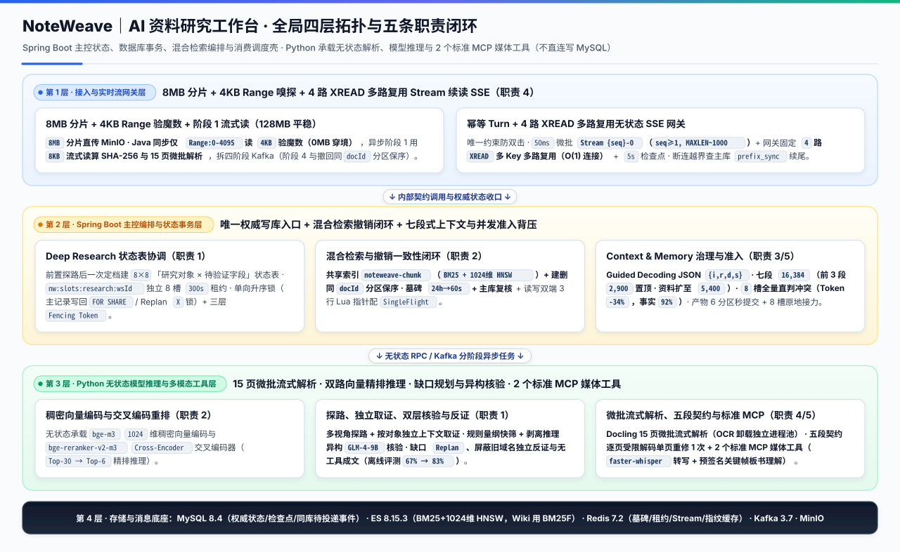
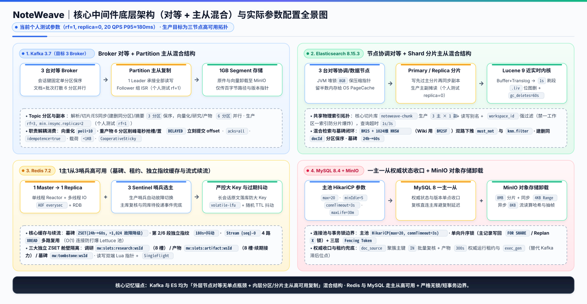
- 项目介绍口述（约 4 分钟，专业对谈版）★★★：
「NoteWeave 是我主导开发的 AI 资料研究与长期知识沉淀工作台，背景是面向学校/学院学生课程学习与课题研究的项目——每个同学按课程或科研课题建独立工作区，集中管理扫描教材 PDF、论文、课程录屏和公网文章，覆盖资料接入、QA / Note / Wiki 研读、Deep Research 深度研究以及 PPT/PDF 讲义、测验和课程笔记等结构化产物。
做它的出发点很直接：学生在课程复习和文献调研中，普通单轮 AI 问答和黑盒 RAG 很难撑住——查概念公式、精读章节和跨资料沉淀 Wiki 需要的证据粒度完全不同。做跨论文或技术方案对比时，过程黑盒、容易漏维度且难复核纠偏。长周期追问还容易丢失前期细节或让草稿讨论污染客观事实。
面向学校/学院多学生共享商业大模型 API 配额和解析算力，系统既要维护强一致性的业务状态，又要跑大量分钟级、可能中途失败的 AI 解析与推理长任务，架构上我拆成了 Spring Boot + Python：Java 主控作为唯一权威状态写者，负责事务、版本、工作区级并发准入和流式网关。Python 无状态承载解析、Deep Research 推理、产物流水线与音视频 MCP，128 MB 扫描教材/录屏与长任务走 Kafka 分阶段解耦。
工程落地重点做了三块：
① Deep Research 显式状态表：先探路构建『研究对象 × 待验证字段』状态表，按对象隔离取证，配剥离推理双层校验、缺口重规划及并发写表三道防线，离线评测中有效单元完成率从 67% 提到 83%。
② 任务感知三粒度链路与动态撤回一致性：一套章节树底座分叉出 QA、Note、Wiki，并用 Redis 到期墓碑、MySQL 主库复核和版本化缓存解决高频替换旧版课件/论文时的 ES 滞后脏召回与缓存旧值复活。
③ 长会话上下文治理与流式异步底座：按话题分层编译 16k 上下文、把长期记忆隔离为 8 个表达槽位（输入 Token 降 34%、事实通过率 92%），并打通 128 MB 常数堆内存入库、
Redis Stream中转 SSE 断线续读，以及按业务快慢拆出三大独立 Redis ZSET（深度研究 8 槽、重型产物 8 槽舱壁隔离，外加撤回墓碑池），既保证深度研究首波 8 行全并行不被慢产物拖累，又防单个工作区批量提交几十讲课程视频挤垮共享算力。这几块里更想先聊 Deep Research 与并发写表、三链路与撤回一致性，还是 Context 编译与长任务调度？」
0.1 全系统三大独立 Redis ZSET 舱壁隔离速查表
全项目涉及 Redis ZSET 的三处能力全部按职责物理拆池、边界单一（实际 Redis Key 刻意不加 {wsId} 花括号 Hash Tag：三组 Lua 均只操作单个 Key，天然满足 Redis Cluster 单键原子性。不加 Hash Tag 反而让同一工作区的 3 个 ZSET 自然散列到 16,384 个槽的不同分片，避免大工作区热点打爆单一分片）：
| ZSET 键名（按工作区分键） | 所属业务域 | 存什么（Member → Score） | 核心作用与配额边界 |
|---|---|---|---|
nw:slots:research:wsId | 职责 1：Deep Research 槽位池 | lease_token → now + 300s（每 60s 先续 DB 再 Lua 续期） | 管交互式调研并发（单工作区限 8 槽）：刚好饱和 DEEP 8×8 首波 8 行全并行不拆波。只跑二三十秒级探路/深挖/反证卡，不被慢产物阻塞 |
nw:slots:artifact:wsId | 职责 5：重型产物生成槽位池 | lease_token → now + 300s（每 60s 先续 DB 再 Lua 续期） | 管后台重批处理并发（单工作区限 8 槽）：专管 2～6 分钟视频转讲义/测验，相对单机 32 线程 有界执行池严控在 ≤ 25%（8/32）。Kafka 6 分区并行消费毫秒级落库/抢槽提交位点，满 8 槽转 DELAYED + 原地接力（最多连跑 1 次），与研究舱壁隔离 |
nw:tombstone:wsId | 职责 2：资料删除墓碑池（同时保护职责 1 & 5 检索） | docId:oldVer → now + 24h（同分区 ES delete_by_query failures 为空后 Lua 缩期至 60s） | 管删改一致性前置过滤（无槽位上限，常态个位数，设 1,024 故障/压测降级熔断水位）：单一真相屏障，下推 ES must_not 与 knn.filter 保 Top-K 有效名额，最终回 MySQL 主库主键批量复核终审 |
01一、以 Table-as-State 为核心的 Deep Research Agent（职责 1）
简历原文设计以 Table-as-State 为核心的 Deep Research Agent：针对多轮检索上下文膨胀、维度漏查与证据冲突，前置探路构建 「研究对象 × 待验证字段」状态表，按对象隔离上下文并行取证；分层 Verifier 剥离推理链校验，按缺口 Replan、遇冲突独立反证；写表侧统一锁序，以 Redis ZSET 租约管理槽位、Fencing Token 拒绝过期写回，离线评测中有效单元完成率由 67% 提升至 83%。
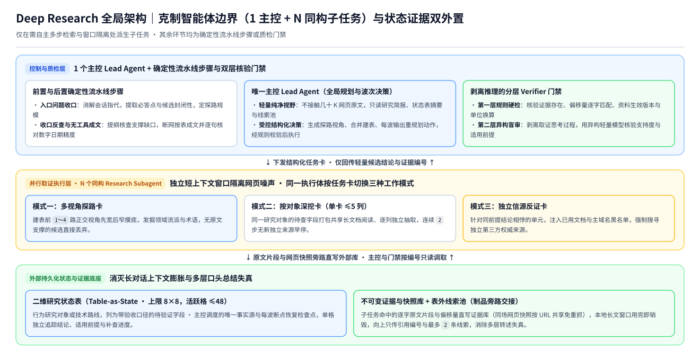
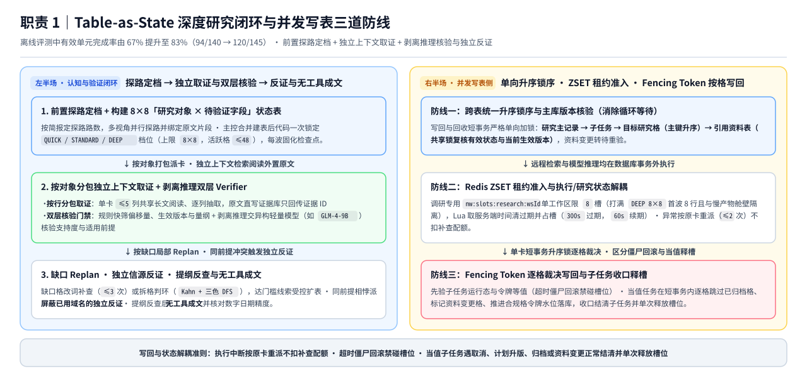
先懂再背1.0 设计推演速懂（先懂再背）
先拆简历原句 & 点破易踩坑： 这条职责实际包含一明一暗两条线： ① 认知与验证闭环（前置探路建状态表 + 按对象独立取证 + 剥离推理双层校验 + 缺口 Replan 与独立反证 + 无工具成文），这是把离线评测有效单元完成率从 67% 提到 83%（94/140 → 120/145）的真正原因。② 并发写表工程防线（统一锁序 + Redis ZSET 调研独立 8 槽租约 nw:slots:research:wsId + Fencing Token），它保的是多 Worker 并行回调写 MySQL 时不死锁、不漏槽、不被僵尸节点覆盖。面试官追问“离线评测 67%→83% 怎么来的”时，千万别答成“加了锁和 Token 提上去的”。
一图看懂：六阶段深度研究主链与前后逻辑
四张表怎么分？格子里到底存什么？（极简数据模型）
后端数据库将研究进度刻意拆成 4 张职责纯粹的表（注意：格子里存的不是简单的“完成/未完成”，也不是几十 KB 网页原文，而是 「研究状态 + 精炼结论与适用前提 + 证据编号 + 补查/令牌水位」）：
实况举例（热门八股开放课题）：以「研究 Redis 持久化与高可用防丢方案」看表怎么变
课题（未点名对象的开放综述）：「结合工作区资料与公开进展，梳理 Redis 数据防丢与高并发持久化 的主流技术路线、核心收益（丢数据边界/恢复速度）与工程局限。」（一边吃透 Table-as-State，一边复习 Redis 核心八股）
① 主任务、小任务卡与全中间件协同流水（看清 Kafka + Redis ZSET + MySQL + ES + 证据库 怎么配合）：
| 阶段 | 主任务 & 小任务动作 | 中间件协同（Redis / MySQL / Kafka / ES） | 关键事件与设计体现 |
|---|---|---|---|
| 探路建表 | 派 3 路探路收敛出 3 条初始路线。DEEP / plan_ver=1 | MySQL 落主记录与 3×3 初始格(待核实)。Kafka 异步派探路卡。Python 查 ES 私有资料 + 公网 | 重合度 <50% 一次锁定 DEEP 档，候选必须绑原文进证据快照库 |
| 第 1 波深挖与波末 Replan | 按行派 T1/T2/T3（各打包同行 3 格，持 plan_ver=1 写回结清）。波末 Replan 按双域名线索加第 4 行并将 plan_ver: 1→2 | Worker 领卡先跑 Redis Lua 占调研独立池 nw:slots:research:wsId 8 槽(300s/每60s先续DB再Lua续期)，MySQL 独立微事务递增 fencing_token。Python 查 ES（下推撤回墓碑）+ 公网写证据库。回调时 MySQL 单向升序锁写格（主记录加 FOR SHARE 共享锁使多路回调真并发，仅 Replan 加 X 锁）、当值结清调 Redis ZREM 释槽 | T1 限流原卡重派(exec_retry+1) 不扣补查。若某卡假死超 300s 晚到，MySQL 验令牌失败整事务回滚且严禁碰 Redis 槽位 |
| 第 2 波 Replan | 锁死已采纳格，只派 T4 补查、T5 反证、T6 挖新行(plan_ver=2) | 同上经 Kafka 派卡、Redis ZSET 控调研独立池 8 槽、MySQL 递增新令牌(token=8,9,10) 覆盖旧水位并共享锁复核引用资料未撤回 | 最小爆炸半径：T4 按打回原因补前提。T5 拉黑旧域名独立反证。T6 挖第 4 行 |
| 反查冻结成文 | status = 已冻结 → 已成文，不再派卡 | 成文仅读 MySQL 冻结状态表 与 证据快照库原文（全程断网不调 ES/公网） | 第 4 行收益为 证据缺口 → 按规则放弃“防丢最优”比较级，分行陈述并单列缺口与冲突 |
② 二维状态表（RESEARCH_CELL）核心结果演进（只看最核心的状态 + 结论 + 证据编号）：
- 第 1 波写回后（多数格已锁定，暴露出 1 个缺口、1 个待反证，并动态新增第 4 行）：
| 技术路线（行） | 核心实现机制 | 性能与防丢收益 | 主要工程局限 |
|---|---|---|---|
| RDB 快照 | 已采纳：bgsave fork 子进程 + OS COW 写时复制落二进制 (E11) | 已采纳：全量加载恢复速度远快于 AOF (E12) | 已采纳：宕机丢最后一次快照后增量，大内存 fork 抖动 (E13) |
| AOF 日志 | 已采纳：写命令追缓冲 + fsync 三档策略 + 重写瘦身 (E21) | 证据缺口（打回：仅无版本博客，未区分 always/everysec/no 前提） | 已采纳：文件体积大、重启重放慢 (E23) |
| RDB+AOF 混合 | 已采纳：AOF 重写前半段存 RDB、后半段追增量 AOF (E31) | 待反证（重写期磁盘 IO 抖动幅度，两份实测正面相悖） | 已采纳：可读性下降且要求 Redis 4.0+ (E33) |
| 主从哨兵防脑裂（新加行） | 待核实 | 待核实 | 待核实 |
- 第 2 波收敛冻结时（4 行全部进入合法终态，成文只读此冻结表与关联原文）：
| 技术路线（行） | 核心实现机制 | 性能与防丢收益 | 主要工程局限 |
|---|---|---|---|
| RDB 快照 | 已采纳·锁定（未重跑） | 已采纳·锁定（未重跑） | 已采纳·锁定（未重跑） |
| AOF 日志 | 已采纳·锁定（未重跑） | 已采纳·锁定：补查官方手册分档明确 everysec 兼顾吞吐且最多丢 ~1s (E41) | 已采纳·锁定（未重跑） |
| RDB+AOF 混合 | 已采纳·锁定（未重跑） | 证据冲突：屏蔽旧域名反证后双方均具权威基准，并列披露磁盘前提 (E32, E51) | 已采纳·锁定（未重跑） |
| 主从哨兵防脑裂 | 已采纳·锁定：min-replicas-to-write 配 max-lag 拒旧主写 (E61) | 证据缺口：补查 3 次缺同规模公网一手定量压测，如实披露不编造 | 已采纳·锁定：强防脑裂会在从库断连时牺牲可用性 (E63) |
车祸现场推演：每一步为什么被迫这么设计？
- 车祸 1（普通 ReAct 上下文爆炸 + 模型自审顺着圆谎）→ 状态表外置 + 剥离推理双层 Verifier
- 不加它怎么炸：把几十篇网页塞进一个对话窗口，模型中段注意力衰减必然漏查维度。如果让同一个模型带着刚才的“思考草稿”自审，它会顺着前面的自圆其说直接附和放行，搜出冲突时又容易原地翻回同一批二手转载文章。
- 怎么设计：
- 克制架构（
1 主 + N 子）：只有 1 个Lead Agent读状态表摘要做规划，N 个同构Subagent按行（≤5 列）独立短上下文取证，其余收口、核验、反查、成文全是确定性流水线步骤。 - 执行状态与研究状态物理拆开：接口限流/崩溃/超时只原卡重派（≤2 次），不改检索词、不扣单格 3 次补查配额。
- 剥离推理 + 失败分支警示 + 域名黑名单：规则层先零成本卡死偏移量、资料有效版本与量纲，再剥掉推理草稿交异构模型核验。驳回时在单元格附带一行结构化
failed_branch_hints（上限 3 条，仅研究层驳回写入、执行层限流/崩溃不写），防下波无状态子任务重复搜同一批死胡同。同前提冲突则拉黑旧主域名派 1 次独立反证，仍分歧就标为证据冲突终态并列披露。
- 为什么不用 LangGraph：LangGraph 管的是节点跳转控制流，全局状态是整体内存对象。跨进程多 Worker 并发改不同格子并拦住慢节点迟到写回，仍需自建数据库行锁与令牌校验。
- 车祸 2（多 Worker 并发回调撞上 Replan/回收引发 InnoDB 死锁，或主记录全程
X 锁把 8 路写回串行化）→ 第一道防线：精细化统一单向锁序- 不加它怎么炸：Worker 写回先锁研究格再锁主记录，而 Replan/超时回收先锁主记录再锁研究格，反向加锁直接闭环死锁。反过来如果写回时盲目给
RESEARCH_MAIN加排他X 锁，又会把 8 路本应并发写不同格子的回调强行串行在主记录单行上。且若事务里留着大模型调用，持锁几十秒直接拖垮数据库。 - 怎么设计：所有抓网页、检索、模型核验全放事务外。事务内仅保留毫秒级落库，全系统写状态表严格遵循唯一单向顺序：
研究主记录（写回只读 plan_version 加 FOR SHARE 共享锁，仅 Replan 升版加 X 锁。发号走独立微事务毫秒释放）→ 子任务 (X锁) → 目标研究格 (聚簇主键升序 X锁) → 引用资料表 (主键升序 S锁复核有效态与版本)。这样既精准破坏死锁的“循环等待”条件，又让 8 路 Subagent 回调在主记录共享锁上彼此完全并发、只与低频Replan互斥！事务外先剔除大模型编造的不存在幻觉资料 ID（防 RR 隔离级别锁住页尾supremum阻塞新文档插入），主键等值点查退化为LOCK_REC_NOT_GAP单行锁。
- 车祸 3（Python Worker OOM 被强杀导致并发槽位永久泄漏 + 快慢任务互抢）→ 第二道防线：Redis ZSET 调研独立 8 槽租约
- 不加它怎么炸：第一版用 Redis
INCR / DECR计数限流，Worker 解析大网页 OOM 被SIGKILL强杀，finally里的DECR没跑，工作区调研池 8 个槽位逐步被泄漏卡死。若再与 2～6 分钟的重型产物生成混用一个池子，后台批量视频转讲义一提交就把交互式深度研究卡死在外面。 - 怎么设计：每个工作区为深度研究独立建一个
ZSET（nw:slots:research:wsId限 8 槽，刚好饱和DEEP 8×8首波 8 行全并行。与重型产物池nw:slots:artifact:wsId8 槽做快慢舱壁隔离，且不加{wsId}Hash Tag 防 Redis Cluster 热点倾斜），member = lease_token，score = 过期时间戳 (300s)（取 Redis 服务端TIME防时钟偏差）。申请槽位用一段 Lua 原子执行：ZREMRANGEBYSCORE清过期 →ZCARD判< 8（同令牌幂等刷新）→ZADD占槽。正常运行每 60 秒的心跳接口先续 MySQLSUB_TASK运行租约、成功后再用 Lua 续期 Redis ZSET（先ZSCORE确认未过期再用ZADD XX更新，防被回收后抢回，也避免 Redis 续着槽不放而 DB 已超时重派的脑裂窗口）。就算 Worker 暴毙，300 秒后自动回收。
- 车祸 4（租约到期重派后，僵尸节点醒来覆盖新结论）→ 第三道防线：Fencing Token + 两支释槽
- 不加它怎么炸：Worker A 发生长 GC 或容器挂起超过 300 秒，看门狗和业务线程一起冻住，租约过期。主控重派给 Worker B，B 写回新结论。随后 A 醒来把旧半成品发回来，直接覆盖 B。（这就是为什么 Redisson 看门狗和 Redlock 多数派都挡不住进程停顿，Redis 只管并发数量，正确性必须交存储端验令牌。）
- 怎么设计：
- 研究主记录全局递增发号：每次派发/重派/Replan 在 MySQL 研究主记录上原子
+1发fencing_token（不在 RedisINCR防主从切换回退）。 - 落库“三验”口诀（领号 ≠ 刷卡落座）：① 子任务仍是
RUNNING且持有令牌相等。② 计划版本未变且格未归档。③传入令牌 > 该格最后写入令牌水位（并共享锁复核引用资料未撤回/未升版）。缺①只验③的话，B 刚领 6 号还没写库（水位仍为 0）时，被作废的 A 拿 5 号醒来仍会趁虚而入。 - 两支分流释槽：① 超时僵尸分支（条件①失败）：整事务回滚且严禁调 Redis
ZREM（防误删 B 的有效槽）。② 当值合法分支（条件①通过）：逐格独立裁决（归档格跳过、资料变更格置待重验且不扣 3 次配额、合规格推进水位），就算计划已升版也结清子任务并单次ZREM立即释槽，消除 300 秒槽位泄漏。
为什么选它：核心方案优劣与代价权衡表
| 决策点 & 对比方案 | 其他方案的优点（何时该选） | 缺点与底层原因（为什么会踩坑） | 我的最终方案与愿意付的代价 |
|---|---|---|---|
| 后端技术栈 全 Java / 全 Python vs 双语言 | 全 Java 运维部署统一。全 Python AI/OCR 生态全、原型最快 | Java 缺成熟 OCR/音视频 MCP 生态。Python 在复杂事务、连接池治理与企业级并发流控上弱于 Spring 体系 | 选 Spring Boot + Python：愿付多一套服务部署与 HTTP/Kafka 跨语言通信成本，换取 Java 严控状态锁 + Python 无状态专注 AI |
| Agent 编排 ReAct / LangGraph / Temporal vs DB 状态表 | ReAct 零开发成本。LangGraph 节点跳转可视化强。Temporal 适合跨天复杂长流程 | ReAct 上下文膨胀引发中段注意力衰减。LangGraph 全局状态是内存对象，多进程并发写不同格并拦僵尸写回仍需自建锁与令牌。Temporal 运维过重 | 选 1 主 + N 子 + DB 状态表：愿付自写编排与状态机代码代价，换取细到单元格的并发锁、断点续跑与离线评测 67%→83% 可控收敛 |
| 并发准入与防脏写 INCR / Redisson / Redlock vs ZSET + Token | INCR/DECR 实现极简。Redisson 看门狗 适合单节点防锁提前过期。Redlock 抗 Redis 单主故障 | INCR 遇 OOM SIGKILL 跳过 finally 永久漏槽。Redisson/Redlock 强依赖无长停顿假设，一旦进程长 GC 冻住看门狗，锁过期易主后旧节点醒来照样覆盖写库 | 选 Redis ZSET(管数量) + MySQL 锁序与 Fencing Token(管正确性)：愿付写库多校验三条件与写回分两支复杂度，换取绝对防死锁、不漏槽与防僵尸覆盖 |
- 为什么有了 Redis ZSET 租约和 60 秒续期，还必须加 MySQL 的 Fencing Token？三验里为什么不能只验
传入令牌 > 格子水位？ - 并发写表时怎么拆开“僵尸节点”和“当值节点”的释槽动作？如果混在一起直接
ZREM会出什么事？ - 离线评测
67% → 83%的分子分母是什么（94/140 → 120/145），哪类题最差（冲突12/21约 57%），怎么防主控少拆难格刷分？
点击核对核心采分点（先自己脱稿讲一遍再点开）
- 为什么必加 Fencing Token & 不能只验水位：长 GC 或容器挂起会把续租线程一起冻住，锁过期易主后旧节点醒来照样写库（看门狗和 Redlock 都挡不住进程停顿），所以 Redis 只管数量、MySQL 验令牌管正确性。只验
5 > 0会漏防“B 刚领 6 号还在搜没写库、水位仍是 0 时，被作废的 A 拿 5 号趁虚而入”，因此必须三验同成立。 - 两支释槽防误删与防泄漏：僵尸节点（子任务态或令牌失配）整事务回滚且严禁
ZREM，否则会把新节点刚占上的槽删掉。当值合法节点逐格裁决（归档格跳过、资料变更格置待重验不扣配额、计划升版也结清子任务）后末尾单次ZREM，消除 300 秒槽位泄漏。 - 离线评测
67% → 83%口径与防刷分：20 道冻结公开技术题活跃规划格（不含不适用豁免格），94/140 → 120/145（对比 59/68、综述 33/37、事实 16/19、冲突 12/21 最弱 57%）。靠对比题实体覆盖率 + 异构裁判模型评三次取多数核对 3 条必答要点防少拆难格，且坦诚未跑逐项消融只报整体提升。
1.1 约 1 分钟速答与约 2 分钟 STAR
- 面试官主问：「看简历第一条，这个以
Table-as-State为核心的 Deep Research Agent 具体是怎么设计、怎么跑起来的？」：- 约 1 分钟速答（先抛结论 + 拆三步 + 抛钩子）：
「核心思路是把深度研究的进度从模型对话窗口搬进数据库状态表，系统性解决多轮检索上下文膨胀、维度漏查和证据冲突。
① 先多视角探路，建一张『研究对象 × 待验证字段』的状态表，按对象拆独立短上下文并行取证。
② 校验层物理剥离取证推理链，用规则加异构小模型核验，缺口改词补查、冲突拉黑旧域名独立反证，最后拔掉搜索工具按表成文。
③ 写表侧靠统一锁序、Redis ZSET 调研独立 8 槽租约（
nw:slots:research:wsId）和 Fencing Token 守住并发正确性。离线评测有效单元完成率从 67% 提到了 83%。这块分认知验证闭环和并发写表三道防线两条线，更想先听哪一块展开？」
- 背景（S）：做复杂技术调研时，需要交叉核实工作区私有资料与公网信源。自由 ReAct 连续检索十几轮后容易上下文膨胀、漏查对比维度。同一模型带着推理草稿自审容易顺着前文自圆其说，写作阶段也容易凭预训练印象补编数据。
- 任务（T）：把研究进度外置成显式状态表，隔离取证和核验上下文，跑通缺口补查、冲突反证和并发安全写回的闭环。
- 做法（A）：
- ① 探路建表与独立取证：先多视角探路摸清真实对象与验收口径，一次锁定档位建最多
8×8状态表。按对象打包在独立短上下文取证，原文写进外部证据库、用完销毁几十 K 网页正文。 - ② 剥离推理校验与无工具成文：第一层规则硬查偏移量、资料版本与量纲，第二层物理丢弃推理草稿交异构小模型验前提。缺口改词补查或拆格判环，同前提冲突拉黑旧域名派 1 次独立反证，成文前反查后物理拔掉搜索工具按表写作。
- ③ 并发写回三道防线：Redis ZSET 调研独立池控工作区 8 槽（与产物池 8 槽舱壁隔离），MySQL 短事务单向升序加锁，三验令牌、计划版本、写入水位和资料版本，并区分超时僵尸回滚（禁碰槽位）与当值结清单次释槽。
- 结果（R）：在 20 道冻结公开技术研究题的离线评测中，有效单元完成率从 67%（94/140）提升到了 83%（120/145）。
核心机制1.2 核心架构与设计权衡
- 1. 克制智能体边界与状态证据双外置
- 架构设计：按「是否需要多步自主调工具」和「是否需要独立窗口隔离搜索噪声」划界，全链路只设 1 个主控
Lead Agent（只读状态表摘要与线索池，输出结构化规划与重规划动作）加 N 个同构Research Subagent（通过不同任务卡切换探路、按对象深挖、独立反证三种模式），其余问题收口、分层核验、成文前反查和无工具成文全部做成确定性流水线步骤。Spring Boot 集中管控状态表、并发准入与事务写回，Python 无状态承载检索阅读与模型推理。 - 为什么这么分：拒绝凑角色式的多智能体对话链，消除多层自然语言传话失真与无谓同步开销。同时把执行状态（子任务运行层）与研究状态（状态表单元层）物理拆开——接口限流、进程崩溃或租约到期只触发原任务卡重派（最多 2 次），不会改歪原本正确的检索词，也不扣减单格 3 次补查配额。
- 2. 前置探路与两步弹性定级（上限 8×8，活跃格 ≤48）
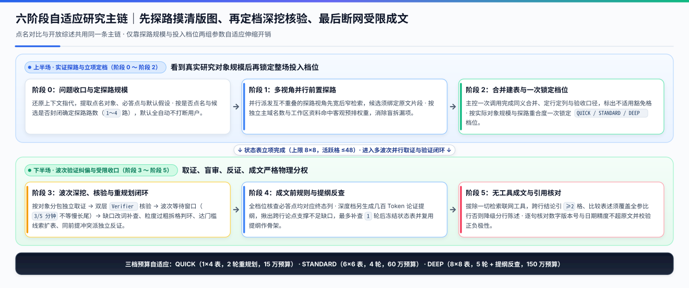
六阶段自适应研究主链与两步定档流程点击图片在新窗口查看高清矢量大图 - 架构设计：所有问题走同一条六阶段主链（问题收口 → 多视角前置探路 → 合并建表与锁定档位 → 波次深挖核验与重规划 → 成文前反查 → 无工具成文）。探路前先按是否点名对象及候选集是否封闭确定探路路数（1～4 路），探路子任务先宽后窄摸底且候选必须绑定逐字原文片段，按独立主域名数与是否命中工作区资料客观预排权重。主控单次调用完成同义合并、定行定列与每列验收口径后，按实际对象规模与探路重合度一次锁定
QUICK（1×4）/ STANDARD（6×6）/ DEEP（8×8）档位整场不变。 - 设计权衡：开放课题先摸清真实流派再建表可消除预训练盲拆漏项，看到实际对象数量后再定档则让简单对比轻量收敛、复杂综述算力充足且离线评测可复现。
- 3. 按对象分包独立上下文取证与制品旁路交接
- 架构设计：将同一研究对象（同一行）的待查字段打包成一张深挖卡（单卡不超过 5 列，超 5 列或源码机制与商业报价等来源跨度大时拆成最多 2 张卡），在独立短上下文内遵循「工作区资料优先、公网信源补充」共享一次长文档阅读，提取阶段按列逐一独立输出，连续 2 步无新独立来源即提前早停。命中的原文片段与偏移量直接写入不可变证据库（同场网页快照按网址共享免重抓），任务结束直接销毁本地几十 K 网页正文上下文，向主控只回传轻量候选、适用前提、证据编号与最多 2 条表外线索。
- 设计权衡：既避免一格派一卡把百页官方手册重复读五遍，又防止几十篇网页塞进主控窗口引发中段注意力衰减。
- 4. 剥离推理的分层 Verifier 与屏蔽旧域名的独立反证
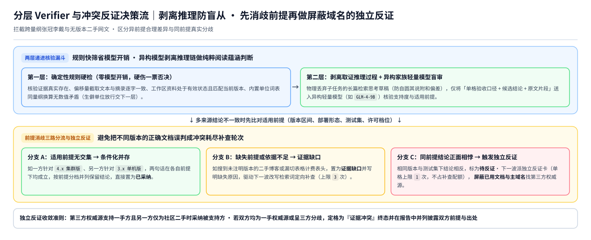
分层 Verifier 与冲突反证决策流点击图片在新窗口查看高清矢量大图 - 架构设计：第一层确定性规则零模型开销快筛证据存在、偏移量截取逐字一致、工作区资料处于有效态且匹配当前版本、内置单位词表同量纲换算无矛盾（生僻单位放行交下一层）。第二层物理剥离取证子任务的推理思考草稿，只把单格验收口径、候选结论和原文片段交给异构模型家族的轻量模型（如
GLM-4-9B）核验支持度并比对适用前提：前提无交集按版本分档并存直接采纳，缺前提打回证据缺口补核版本，同前提结论正面相悖则标为待反证。下一波主控派发独立反证卡（每格上限 1 次，独立于 3 次补查配额），强制注入已用文档与主域名黑名单搜寻独立第三方权威来源，仅当第三方支持一手方且另一方为社区二手时采纳，否则定格为证据冲突终态并列披露。 - 设计权衡：剥离推理链阻断了核验模型顺着前置自圆其说附和放行，域名黑名单则防止冲突复核又翻回同一批转载网文原地打转。
- 5. 波次等待窗口、局部 Replan 与拆格拓扑判环
- 架构设计：每波设
3/5 分钟等待窗口，到点后主控不等慢长尾直接审视已返回单元推进下一波，已采纳格原地锁定，仅对缺口格按打回原因改写检索词定向补查（上限 3 次，跳过近似旧词）。同时吸收 EMNLP 2026MAGE的执行状态管理与跨分支提示思想，为研究单元格增加轻量有界 JSON 字段failed_branch_hints（死胡同警示，上限≤3条）——每轮仅在 Verifier 规则或语义驳回时追加 1 行结构化记录（已试方向/低质信源特征、驳回归因、下波规避指令），随补查任务卡注入新Subagent剪枝无效分支并省 Token（执行层 429/超时/OOM 重派不写入，防瞬时故障误杀好方向）。表外线索池中满足「候选集未封闭且覆盖至少 2 个独立主域名」的新对象可动态加行，影响必答格的隐藏前提可受控扩列（整场最多 2 次）。发现单元粒度过粗（如区分社区版与企业版）时，归档原父格移出分母，新建待核实子格从头核验（严禁直接复制父格通过态），新增跨格依赖前置在内存先跑Kahn入度拓扑排序（顺带产出可执行并行波次）。仅当出队数< 总节点数检出有环时，才按需对残余子图跑一次三色 DFS 抽出精确环边打回拆解（避免把被环卡住入度的正常下游汇总列一并误伤）。
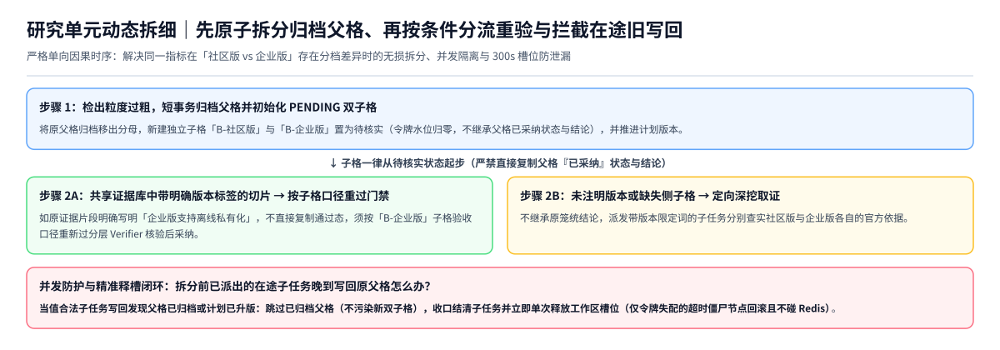
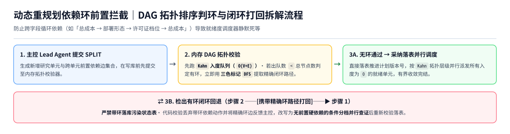
- 6. 成文前反查、无工具成文与逐句引用精度核对
- 架构设计：阶段 4 全档位做必答点规则反查，
DEEP档另生成几百 Token 论证提纲暴露跨行支撑缺口（最多补查 1 轮后冻结状态表，提纲直接复用为成文骨架）。阶段 5 物理拔除一切检索与联网工具，只读冻结状态表与关联原文成文：跨行结论至少引用 2 个已采纳格，含「最高、最低、优于」等比较级表述必须覆盖所有参与比较的行否则自动降级为分行客观陈述，随后经规则核对数字、版本号与日期精度不超原文（如原文只写年份严禁出现月份），再由轻量模型核对正负极性。
- 7. 工作区独立 ZSET 租约准入、单向升序锁（主记录 S 锁并发）与 Fencing Token 两支释槽
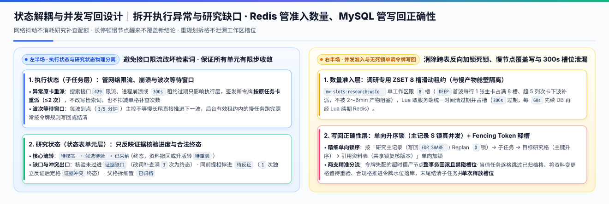
执行状态与研究状态解耦及并发写回防线点击图片在新窗口查看高清矢量大图 - 架构设计：把并发拆成准入数量和写回正确性两层。数量层按快慢业务做舱壁隔离，每个工作区为深度研究独立建 Redis
ZSET（nw:slots:research:wsId限 8 槽，刚好饱和DEEP 8×8首波 8 行全并行不拆波。与重型产物池nw:slots:artifact:wsId8 槽物理分池，不加{wsId}Hash Tag 防 Redis Cluster 分片倾斜），Lua 取服务端统一时间清过期成员再占槽（300 秒过期，每60 秒心跳先续 DBSUB_TASK租约成功再经 Lua 验未过期续期 Redis ZSET），配合 Python 执行侧Uvicorn多进程、asyncio双信号量与共享httpx长连接池控流。正确性层每次派发在独立微事务里原子递增RESEARCH_MAIN.token_seq签发Fencing Token，单卡写回在一个毫秒级短事务内严格按「研究主记录（写回加FOR SHARE共享锁让多路写回真并发，仅 Replan 加X锁）→ 子任务（X锁）→ 目标研究格（主键升序X锁）→ 引用资料表（共享锁复核有效状态与当前版本）」单向加锁（事务外先筛掉不存在的幻觉资料 ID 防锁住页尾无穷大间隙），并将写回拆为两支：令牌失配的超时僵尸节点整事务回滚且严禁触碰 Redis 槽位，当值合法子任务对卡内各格逐一独立裁决（跳过已归档格、将资料变更格置待重验且不扣补查配额、合规格推进令牌水位落库），末尾统一结清子任务并单次释放槽位，消除死锁、串行瓶颈与300 秒槽位泄漏。
点击展开：本章高频底层原理与指标公式速查（微平均 vs 宏平均 / Kahn+三色DFS / Fencing Token vs Redlock / MVCC ReadView / Redis ZSET / MAGE 失败分支警示）
- 微平均（Micro-average）vs 宏平均（Macro-average）：
- 计算公式：微平均把所有题目的格子汇总后统一相除：
有效单元完成率 = (Σ 各题有效格数) / (Σ 各题活跃规划格数) = 120 / 145 = 82.76% ≈ 83%（改造前94 / 140 = 67.14% ≈ 67%）。宏平均则是先算每道题各自的完成率再求算术平均。 - 为什么选微平均：
QUICK简单题只有 4 格、DEEP复杂题可达 20+ 格，宏平均会让 4 格题和 20 格题权重相同导致指标虚高。微平均按每个研究格等权计分，更真实反映难题覆盖度。
Kahn入度拓扑排序 + 三色 DFS 判环：- 原理：先统计每个研究格子的前置依赖入度，将入度为
0的节点入队逐波弹出并把邻居入度减1（顺带得到可直接并行派发的波次序列）。若最终出队节点数< 总结点数，说明图中必存在依赖环。此时仅对残余子图跑一次三色 DFS（白=未访问、灰=当前递归栈中、黑=已完成），一旦沿边撞到灰色节点即精准抽出环路边打回拆解，不会把被环卡住入度的正常下游汇总格一并误杀。
Fencing Token（单调防护令牌）vsRedisson看门狗 /Redlock：- 本质痛点：客户端分布式锁强依赖「进程无长停顿」假设。一旦 Worker 遭遇长达数百秒的 Full GC 或容器暂停，续租看门狗线程一起冻结，锁超时易主给节点 B。随后节点 A 醒来不知锁已失效仍继续写库覆盖 B（哪怕
Redlock多数派也挡不住客户端停顿）。 - 解法：每次拿锁/派发由存储侧签发全局严格单调递增的整数令牌（如 5、6），目标库 MySQL 在写回
UPDATE条件中强制校验令牌匹配与水位推进，不再依赖时钟与进程无停顿假设。
MVCCReadView（快照读 vs 当前读）与S / X锁矩阵：- InnoDB 默认
REPEATABLE READ下，普通SELECT走ReadView快照读（事务首次读固定视图），看不到并发事务已提交的新令牌会引发丢失更新。UPDATE、SELECT ... FOR SHARE（共享 S 锁）、SELECT ... FOR UPDATE（排他 X 锁）走当前读，读最新已提交版本并加锁。S与S兼容、与X互斥，故 8 路并发写回对主记录降为FOR SHARE可互不阻塞并发执行，仅低频 Replan 加X锁互斥。
- Redis
ZSET底层编码（listpackvsdict + skiplist）：- 当成员数
≤ 128且单成员长度≤ 64 B时采用紧凑连续内存listpack（无指针碎片，本项目调研/产物独立池各仅 8 槽稳定命中listpack）。超阈值自动转为dict（哈希表O(1)按成员查 score）+skiplist（多层概率跳表，按 score 范围查询ZRANGEBYSCORE平均O(log N + M)）。
- 单元格死胡同警示（
Failed Branch Hint/ 负向诊断提示，吸收 EMNLP 2026MAGE思想）：- 论文出处：EMNLP 2026
MAGE（Beyond Semantic Organization: Memory as Execution State Management for Long-Horizon Agents,arXiv:2606.06090）提出把 Agent 记忆从被动语义检索升级为执行状态管理，在Revise回退重开新分支时向新分支注入先前失败分支的精简提示，避免重复探索死胡同。 - 本项目极低成本落地：无需引入重型树记忆引擎，只需在 MySQL 状态表单元格上挂一个上限
≤ 3条的 JSON 数组字段failed_branch_hints（单条 1 行：{"tried": "...", "fail_reason": "...", "avoid": "..."}）。只在 Verifier 规则/语义驳回时写入（执行层429/超时/OOM 重派不写，防误杀好方向），随补查任务卡注入下波无状态Subagent，相比Reflexion在长对话里堆叠文字反思更紧凑省 Token。 - 面试口径边界：坦诚该字段作为单元格局部重规划的轻量演进/结构化补强纳入设计，未针对单字段做独立消融实验，不单独虚报额外百分点。
高频追问1.3 高频追问
- 追问 1（范式取舍、克制多 Agent 与图编排对比） ★★★：「为什么不用常规 ReAct 或 Plan-and-Execute，要做成前置探路加状态表？和
LangGraph或多角色 Agent 团队有什么区别？」「① 自由 ReAct 把几十篇网页塞进同一窗口容易上下文膨胀漏项，静态 Plan-and-Execute 在开放课题下容易盲拆且不会回头补查，Reflexion 的文字反思留在长对话里照样被稀释。
② 我先用多视角探路摸清领域对象与术语，再落成最多 8×8 的状态表，每个格子作为最小可验证单元驱动独立上下文取证与局部补查，同时克制划分智能体——只有 1 个主控加同构取证子任务，收口、核验、反查和成文全做成确定性流水线步骤，拒绝凑角色导致传话失真。
③ 至于
LangGraph，它管节点跳转控制流，而它的全局状态是整体内存对象，多执行者跨进程并发改不同格并拦截超时慢节点迟到写回仍需自建锁与合并器，落到数据库按格存即可单格独立加锁与验令牌。」 - 追问 2（提示注入、执行与研究状态解耦及冲突反证） ★★：「公网网页藏了恶意指令怎么办？搜索限流报错或两份权威资料结论相反怎么处理，怎么防
Replan死循环？」「① 防公网间接提示注入做了四层隔离：网页片段包进数据围栏声明仅作资料不作指令，锁死搜索返回原始 URL 白名单禁拼接参数外传，拦截内网与云元数据 SSRF 及 DNS 重绑定，子任务只配只读工具且结论必过剥离推理草稿的异构轻量
Verifier。② 区分执行状态与研究状态防死循环：接口限流或租约超时按原任务卡重派最多 2 次、不改检索词也不扣补查配额，也不污染失败提示。而核验打回才算研究缺口，并在单元格挂一条结构化的死胡同警示（
failed_branch_hints，上限 3 条，吸收 EMNLP 2026 MAGE 的失败分支提示思想），让下一波干净短窗口的子任务直接避开上一波搜偏的方向和低质信源，叠加单格 3 次改词补查、近似词跳过、2 步无新独立来源早停及整场轮数与 Token 预算约束收敛。③ 遇多源不一致先比对适用前提，无交集分档并存，同前提正面相悖则注入已用文档与主域名黑名单派 1 次独立反证找第三方权威源，仍分歧就进证据冲突终态保留双方引用。」
- 追问 3（并发写表、分布式锁、MVCC 与死锁） ★★★：「多个子任务并行取证写表时，
Redis ZSET租约、Fencing Token和统一锁顺序分别解决什么问题？为什么不直接用 Redisson 分布式锁？」「① 我把并发控制拆成数量和正确性两件事，高频准入数量放 Redis
ZSET防单行热点计数，并按快慢业务物理分池——深度研究用独立池nw:slots:research:wsId限 8 槽（与 2～6 分钟重型产物池nw:slots:artifact:wsId8 槽舱壁隔离，且不加{wsId}Hash Tag 防 Cluster 分片倾斜），每次领子任务生成唯一租约令牌作成员、过期时间戳作分值，Lua 内清过期项再判满 8 槽（300 秒超时过期，活跃节点每 60 秒先续 DB 运行租约再经 Lua 验未过期续期 Redis 槽位，避免双租约脑裂）。② 写回正确性放 MySQL，没直接用 Redisson 分布式锁是因为看门狗只在客户端存活时续期，一旦遇长 GC 停顿或网络分区锁过期易主，旧执行者醒来仍会覆盖写库（Redlock 多数派也挡不住进程停顿），所以我每次派发在独立微事务递增签发
Fencing Token，在短事务里核验子任务运行态与令牌一致、所属计划版本未变、传入令牌大于格子写入水位，并对引用资料表加共享读锁核验有效状态与当前生效版本。③ 同时把写回拦截拆成两支：仅超时僵尸执行者整事务回滚且严禁碰 Redis 槽位，而当值子任务在卡内逐格跳过已归档格、将资料变更格置待重验（不扣补查配额）、推进合规格水位后统一结清子任务并单次释放槽位。锁序上严格「研究主记录 → 子任务 → 目标研究格（主键升序）→ 资料表」单向加锁破死锁，且写回对研究主记录只加
FOR SHARE共享锁（仅低频 Replan 升版加X锁），让 8 路并发回调彼此完全并发不串行在主记录上。」- → 触发八股（
MVCC快照读 vs 当前读、S/X锁矩阵、死锁日志与ZSET底层） ★★★：可重复读下先普通SELECT走ReadView快照读（RR首读复用，RC每读重建）看不到并发新令牌会误覆盖，把条件写进UPDATE走当前读加排他锁看影响行数才安全。InnoDBS锁与S锁兼容、与X锁互斥，写回主记录降FOR SHARE既保单向锁序不会形成死锁又释放 8 路并发。查死锁看SHOW ENGINE INNODB STATUS的LATEST DETECTED DEADLOCK，主键IN按升序执行离散单点唯一主键等值点查退化为LOCK_REC_NOT_GAP单行锁（事务外先剔幻觉 ID 防锁supremum）。调研与产物独立ZSET各仅 8 成员远低于 128 阈值走listpack，超阈值转哈希表加跳表。
- 追问 4（Agent 评测设计与裁判偏差） ★★：「
67%到83%怎么测的？分母是什么？怎么证明不是刷出来的？用模型当裁判怎么控制偏差？」「这是离线评测结果，分母是 20 道冻结公开技术研究题上的全部活跃规划格子（不含标为不适用的豁免格），按微平均算，改造前 94/140 即 67%，改造后 120/145 即 83%。防少拆格子刷分靠两道约束：对比题核对题目点名对象的实体覆盖率，未封闭题看探路结构召回，整份报告由异构家族模型独立评三次取多数、逐条核对预埋的 3 个必答要点。两边用同一模型、搜索工具和预算上限对照，83% 是整体结果，评测框架预留了前置探路、线索扩表和成文前反查三组消融开关。有效格判定条件、题型分布和归因细节见 7.2。」
- 追问 5（64 格与独立双 8 槽配额是不是过度设计？） ★★★：「单个研究任务最多也就
8×8（活跃格 ≤48），上Fencing Token、统一锁序和Redis ZSET独立双 8 槽租约是不是过度设计？」「我把这三道防线拆成单任务并发正确性和多学生共享算力的快慢舱壁隔离两层来看：
①
Fencing Token和统一锁序解决的不是高 QPS，而是分钟级长任务的正确性底线。哪怕单表只有几个格子，只要 Python Worker 抓网页或调模型卡死超 300s 触发超时重派，旧节点醒来晚到回调一样会覆盖新结果。InnoDB 死锁也只需要 2 个并发事务反向加锁就会发生（如写格回调撞上 Replan 或资料撤回）。而且落到实现里只是一个递增代次列加条件UPDATE和一条加锁顺序规范，代码成本极低，不属于过度设计。② 把并发准入拆成三大独立
Redis ZSET（调研 8 槽nw:slots:research:wsId+ 产物 8 槽nw:slots:artifact:wsId+ 撤回墓碑nw:tombstone:wsId）是为了解决面向学校/学院多学生共享商业大模型 API 配额与算力时的快慢互抢与公平准入。深度研究是二三十秒级交互任务，独立 8 槽刚好饱和DEEP 8×8首波 8 行全并行不拆波，不会被同工作区或他人的 2～6 分钟视频转讲义拖死。重型产物独立 8 槽相对单机 32 线程执行池（生产 3 节点规划总并发 96 路，大模型走高并发商业 API 池 + Python 无状态多副本）严格压在25%（8/32） 红线内，考前高峰期哪怕有同学一口气交二三十讲录屏，超限转DELAYED防队头阻塞，且每 60 秒续租、Worker OOM 自动过期放 Redis 避免了把高频续租压力打到 MySQL 事务行锁上。③ 边界上我也很坦诚：目前核心研发与压测主要是个人测试环境完成的。如果只是单人本地小工具，把计数留在 MySQL 确实更轻，但按面向学校/学院多用户共享服务的定位来设计，拆成『三大独立 ZSET 管准入隔离与墓碑、MySQL 验令牌保写回正确性』是职责清晰的合理分层。」
- 延伸深挖分册：见 02_Table-as-State深度研究与追问.md 与 deep-research-design.md。
02二、任务感知的 QA / Note / Wiki 知识链路与撤销一致性（职责 2）
简历原文构建任务感知的 QA / Note / Wiki 知识链路：面向问答、精读与知识沉淀定制证据粒度，QA 采用 BM25 + Vector 双路召回、RRF 融合与 Rerank，Note 采用资料级召回与连续原文窗口，Wiki 通过有界页面关系与来源回链组织长期知识；针对资料撤销后的索引异步滞后与 Cache-Aside 并发脏回填，以 Redis 墓碑下推前置过滤、MySQL 批量复核权威状态及版本化 Key 隔离过期缓存写回，阻断最终一致窗口期的脏召回与旧值复活。
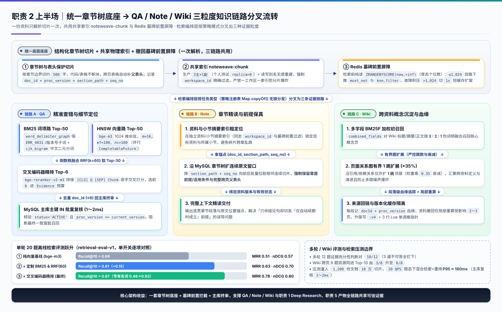
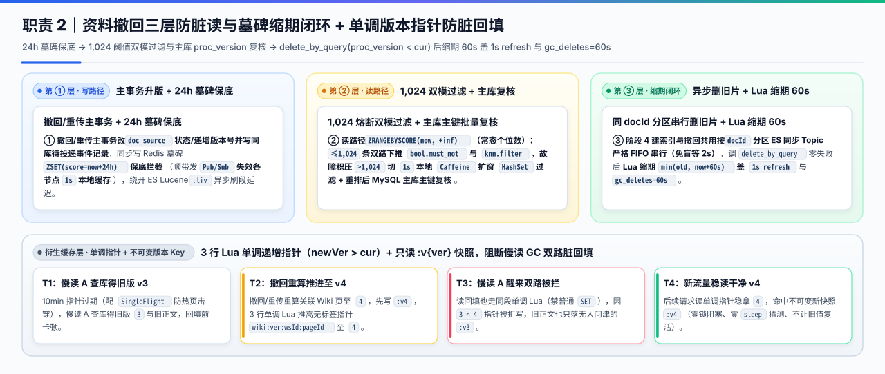
先懂再背2.0 设计推演速懂（先懂再背）
先拆简历原句 & 点破易踩坑：
这条职责拆成上下两个半场：
- 上半场（任务感知三条知识链路）：资料只解析切片一次，共用一套章节树切片底座，仅在召回组装阶段按策略模式分叉成 QA（精准碎片）/ Note（连续精读窗口）/ Wiki（有界一跳知识页）。
- 下半场（撤销后的两类一致性防御）：
① 防 ES 脏召回（刚删资料立刻提问，ES 异步清理和刷段滞后仍能搜到旧片）→ 用 Redis 到期墓碑（24h→删净缩 60s）+ MySQL 主库批量复核。② 防 Cache-Aside 缓存旧值复活（慢读把旧版 Wiki V3 填回覆盖新版 V4）→ 用 单调版本指针 + 不可变版本化正文 Key。
- 易踩坑预警：Redis 墓碑不是权威终审（Redis 故障/主从切换或超 1,024 走 1s 本地缓存都可能有极短窗口），墓碑负责前置把废片踢出粗召回名额，MySQL 主库主键批量复核才是最终一票否决关！
一图看懂（上半场）：一套底座如何分叉出 QA / Note / Wiki 三条链路
车祸现场推演：每一步为什么被迫这么设计？
- 车祸 1（一刀切固定切片 + 纯向量检索在精确词和精读上双双翻车）→ 章节树底座 + 三链路分叉
- 不加它怎么炸：固定长度切块会把代码、表格和章首前提拦腰截断。纯向量能懂同义改写，却经常把
ERR_4031和ERR_4032这类错误码搞混（专有名词 Recall@10 仅0.48）。如果精读问题也去全库捞 6 块碎片，东拼西凑完全读不连贯。 - 怎么设计：
- QA：定制分词 BM25 补齐精确词（专有名词
0.48 → 0.93），与向量互补。因 BM25 分数无上界而余弦值在 0~1，用只看排名的RRF(k=60)免调权重融合取 30 条，再交昂贵但精准的交叉编码器精排取前 6（单轮 20 题 Recall@100.66 → 0.87，MRR0.51 → 0.78）。 - Note：先定位资料和小节，再沿章节树扩成连续原文窗口（比“按资料对切片得分求和”更好，避免偏向长文档）。
- Wiki：为什么不上全局
GraphRAG？因为全量抽实体关系贵，且用户删一份资料时很难反推知识图谱里哪些边该删。有界一跳 + 段落来源回链删资料只需局部重算关联页。
- 车祸 2（用户刚删完资料立刻提问，ES 仍召回旧切片。或废片把 Top-50 占满导致答不出）→ Redis 到期墓碑 + 删净缩期 60s + MySQL 主库复核
- 不加它怎么炸：
- 方案 A（删资料时同步删 ES 并调
refresh=true强刷）：制造大量微型碎段拖垮集群，且跨 MySQL/ES 难以事务回滚。 - 方案 B（只在读侧拿结果去查 MySQL 过滤）：废切片会把 ES 向量 kNN 粗召回名额全占光，有效结果被挤出 Top-50，过滤后直接变空返回“未找到证据”。
- 怎么设计（写侧 + 清理侧 + 读侧三端协同）：
- 写侧（防 ABA + 24h 保底墓碑 + 同分区保序事件）：撤回、重传或恢复启用一律递增新
proc_version（旧版本不再复用）。本地事务改状态写极简待投递事件发往 与阶段 4 建索引共用的按docId分区 ES 同步 Topic（同文档UPSERT_INDEX与DELETE_INDEX在单分区内严格 FIFO 串行，从因果顺序根源消灭“删跑在迟到建索引之前”的乱序幽灵切片），并向工作区墓碑 ZSET（nw:tombstone:wsId）写入member = docId:oldVer, score = now + 24h，顺带清本机缓存并经Pub/Sub广播失效各机 1s Caffeine 缓存。 - 清理侧（同分区串行删净 + 缩期 60s）：ES 同步消费者按
docId单分区串行消费，无需脆弱的sleep 2s盲等。收到DELETE_INDEX执行delete_by_query，只有确认failures为空、删净< target_ver旧切片后，才经 Lua 将对应墓碑缩期到min(oldScore, now + 60s)，精准覆盖1s refresh和index.gc_deletes=60s窗口（异常慢旧写靠写前查主库 +version_type=external_gte与读侧主库复核双端挡死）。 - 读侧（前置下推 + 1,024 故障/压测降级熔断水位 + 主库终审）：读路径
ZRANGEBYSCORE key now +inf拉有效墓碑（常态 ES 几秒删净缩期，单工作区通常仅个位数～几十条）：≤ 1,024 条：同时下推到 BM25 的bool.must_not和向量的knn.filter（在 HNSW 遍历时提前跳过废片，不占名额）。> 1,024 条（面向批量删库压测或 ES 清理消费积压故障演练的降级熔断水位：虽未触及 ES65,536硬上限，但实测超 1,024 时查询序列化与预过滤位图延迟抬升）：切 1 秒本地 Caffeine 短缓存 + 扩窗召回 + 内存HashSet过滤并触发积压告警。- 主库终审：精排 Top-6 提取去重
docId，按聚簇主键IN批量直查 MySQL 主库（不走从库防主从延迟，耗时仅 1~2ms）核验status='ACTIVE'且proc_version == current_version。若剔除后结果被刚删长文挤空，立即绕过本地缓存重拉墓碑扩窗补检一次。
- 车祸 3（Wiki 更新时的 Cache-Aside 并发慢读，把旧 V3 填回缓存复活）→ 单调版本指针（读写双端 Lua）+ 不可变版本 Key
- 不加它怎么炸：缓存未命中时，慢读线程 A 查库拿到旧版 V3 后卡住。期间写线程 B 把库更新为 V4 并删掉缓存。随后慢读线程 A 醒来把 V3 写回 Redis——缓存里 V3 复活，直到过期前所有人读到的都是脏页！（延迟双删的休眠时间估不准，加读写锁又让读请求排队阻塞。）
- 怎么设计：把缓存拆成两把无
{}Hash Tag 的单键：- 版本指针 Key（
wiki:ver:wsId:pageId，TTL 10min。仅从未存在的非法 ID 写-1短 TTL 防穿透，合法页面下线时照常升版写下线标记而不覆写-1）。 - 不可变正文 Key（
wiki:page:wsId:pageId:v{ver}，TTL 1h，内存满按volatile-lfu淘汰）。 - 写流程 & 读未命中回填统一走同一段 3 行 Lua 单调高水位写：写流程先写新正文
:v4，再经 Lua（仅newVer > curVer才覆盖）推进指针。读未命中回源 DB 后回填指针也必须走同一段 Lua 单调写（不能用普通SET！），防止10min指针自然过期瞬间，慢读 A 回填3把写线程 B 刚推高的4倒退覆盖！指针自然过期瞬间的热页并发回源再配本地SingleFlight合并防击穿。 - 读流程：先读指针拿到版本号
4，再读:v4。就算慢读线程 A 晚到回填，既改不动高水位指针4，正文也只会落进废弃旧键:v3，把覆盖写变成异键隔离，不阻塞读且不让旧值复活。
一图看懂（下半场）：资料撤回防脏召回 & Wiki 版本化 Key 隔离脏回填
实况举例（热门八股资料场景）：同一份《JVM G1 与 OOM 排障手册》怎么走三条链路 + 撤回与缓存状态怎么变
① 同一切片底座下，QA / Note / Wiki 三条链路的直观区别：
| 任务模式 | 用户典型提问 | 检索与组装动作 | 最终送给模型的证据形态 |
|---|---|---|---|
| QA 精准问答 | 「ERR_4031 巨型对象触发 Full GC 怎么排查？」 | BM25(word_delimiter_graph 拆 ERR/4031 精确命中) ∥ HNSW 向量 → RRF(60) 30 条 → 精排前 6 | 6 块高相关碎片（最高分放最前防中间衰减） |
| Note 精读 | 「详细讲讲 G1 Mixed GC 回收全流程与停顿预测模型」 | 先搜资料摘要与小节首段锁住手册第 4 章 → 切片定位后沿章节树取前后各 2 块 | 连续 5 块完整原文窗口 + 章首前提与父表头 |
| Wiki 长期沉淀 | 「梳理内存泄漏与 G1 巨型对象调优的关联思路」 | BM25F 锁 3 个种子页 → 沿页面关系有界一跳扩展（总数 ≤6 页） | 跨文档结构化知识页 + 段落来源回链 |
② 撤回资料 & 更新 Wiki 时，全中间件（MySQL + Kafka + Redis + Caffeine + ES）状态联动演进：
| 时刻 / 动作 | MySQL 主库 & Kafka | Redis（墓碑 / Pub/Sub / 版本化缓存）& Caffeine | ES 切片 & 读请求结果 |
|---|---|---|---|
T0：用户撤回旧手册 doc1 | MySQL 置撤回、ver: 1→2（防 ABA）+ 写待投递事件。提交后发与阶段 4 共用的 Kafka ES 同步 Topic（按 docId 分区严格 FIFO 保序） | Redis 写墓碑 doc1:1（TTL=24h）并经 Pub/Sub 广播失效各实例 Caffeine 1s 本地短缓存 | 此时 ES 旧片还没删，读请求从 Redis 拉墓碑下推 must_not / knn.filter（故障积压超 1,024 走 Caffeine 扩窗 HashSet），0 脏召回 |
| T1：Kafka 同分区串行删净 | Kafka 消费者按 docId 单分区串行消费（天然排在旧版 UPSERT_INDEX 之后，无需盲等 2s），删 ES 旧片 | delete_by_query 返回 failures 空确认删净 → Redis Lua 将 doc1:1 缩期至 60s | 精准覆盖 ES 1s refresh 与 gc_deletes=60s。读侧 Top-6 必回 MySQL 主库主键 IN 终审（1~2ms），被挤空则绕过 Caffeine 重拉墓碑补检 |
T2：Wiki 页并发更新 v3→v4 | Kafka 异步按来源回链重算受影响页，MySQL 落库 v4 | Redis 先写不可变正文 :v4（volatile-lfu 淘汰），再 Lua 推高版本指针 3→4（仅新 > 旧。读未命中回填也走同段 Lua 且 10min 过期配 SingleFlight） | 慢读线程 A 醒来回填指针被同段 Lua 拒写、正文只落 :v3，所有新读按指针直取 :v4，0 旧值复活 |
为什么选它：核心方案优劣与代价权衡表
| 决策点 & 对比方案 | 其他方案的优点（何时该选） | 缺点与底层原因（为什么会踩坑） | 我的最终方案与愿意付的代价 |
|---|---|---|---|
| 检索引擎 Milvus / PG+pgvector vs ES | Milvus/Qdrant 千万级纯向量极快。PG+pgvector 单库零同步（适合制造业 3 万条小规模） | Milvus 缺成熟定制词元分词，需再搭一套全文引擎并双倍维护撤回同步。PG 难支撑百万切片下共享索引别名零停机重建与复杂分词 | 选 Elasticsearch（共享物理索引 noteweave-chunk 同库 BM25+HNSW + 别名 + workspace_id 强过滤）：愿付多维护一套 ES 集群与近实时一致性代价，换取双路单库预过滤、防分片爆炸与别名无感重建 |
| 切片与知识组织 固定切 / 语义切 / GraphRAG vs 章节树 + 一跳 Wiki | 固定切实现最简单。语义切边界自然。GraphRAG 擅长超大规模全局多跳主题归纳 | 固定切拦腰斩断表格代码。语义切逐句算向量开销大。GraphRAG 全量抽实体关系极贵，且撤回资料时难反推删除哪些共享图边 | 选章节树底座 + 一跳 Wiki 回链：愿付离线解析还原章节树开发成本与 Wiki 仅一跳视野上限，换取删资料精准局部重算 |
| 撤回防脏召回 同步强刷 ES / 纯读查 DB vs 墓碑 + 主库复核 | 同步 refresh=true 逻辑最直观。纯读查 DB 架构零 Redis 侵入 | 强刷 ES 制造海量微型碎段拖垮段合并且跨库难回滚。纯读查 DB 放任废片在 HNSW 遍历时占空 Top-50 名额，过滤后有效结果被挤空 | 选 Redis 墓碑(24h→缩60s) + MySQL 主库复核：愿付写侧双写墓碑与读侧 1~2ms 主库点查代价，换取粗召回名额干净且 0 脏召回 |
| Wiki 缓存一致 延迟双删 / 读写锁 vs 版本化 Key | 延迟双删改动极小。分布式读写锁逻辑强串行无旧值残留 | 延迟双删休眠时长根本估不准慢读（GC/抖动超休眠照样脏回填）。读写锁让高并发读排队互斥拉高延迟 | 选单调版本指针 + 不可变 :vN Key：愿付旧正文多占 1h 内存 + 读多 1 次指针 RTT，换取读写都不阻塞与阻断旧值复活 |
- 为什么撤回资料不能只在读侧查 MySQL 过滤，也不能同步调 ES
refresh=true强刷？Redis 墓碑为什么要先写 24 小时、删净后再缩到 60 秒？ - 墓碑超过 1,024 条为什么要切方案？如果这时候 1 秒本地短缓存还没失效、刚删的长文把结果全挤空了怎么兜底？
- 版本化 Key 缓存具体怎么写、怎么读？它比延迟双删和读写锁好在哪，代价又是什么？
点击核对核心采分点（先自己脱稿讲一遍再点开）
- 三方案取舍与 24h→60s：同步
refresh=true造大量微型碎段且跨库难回滚。纯读查 MySQL 会让废片占光 HNSW 粗召回名额。写 24h 是保底防消费延迟，等delete_by_queryfailures为空删净旧片后 Lua 缩到min(oldScore, now+60s)，精准盖住1s refresh和index.gc_deletes=60s窗口并释放墓碑长度。 > 1,024故障/压测降级熔断水位与兜底：常态 ES 几秒删净缩期，单工作区墓碑仅个位数～几十条。1,024是面向批量删库压测或 ES 消费积压演练的降级熔断水位（未触及 ES65,536硬上限但序列化与knn.filter位图耗时抬升），超水位切1s本地 Caffeine 缓存配扩窗召回与内存HashSet过滤并告警。若主库复核剔除后有效结果被挤空，立即绕过本地缓存重拉墓碑扩窗补检 1 次。- 版本化 Key 读写与代价：写时先写不可变正文
:v4，再 Lua 推高版本指针（仅newVer > curVer）。读时先指针后正文。相比延迟双删（休眠估不准慢读）和读写锁（阻塞读）读不被阻塞且防复活，代价是旧正文多占 1h 内存（volatile-lfu淘汰）与读多 1 次指针 RTT。
2.1 约 1 分钟速答与约 2 分钟 STAR
- 面试官主问：「第二条写了 QA、Note、Wiki 三种知识链路以及资料撤销后的一致性处理，具体是怎么设计的？」：
- 约 1 分钟速答（先抛结论 + 拆三步 + 抛钩子）：
「核心思路是一份资料只切一次、建一套章节树底座，召回组装按任务分叉，再把删改窗口期的两类脏数据堵死。
① 业务侧用策略模式分出三条链路：QA 跑 BM25 加向量双路 RRF 和精排，Note 扩连续原文窗口，Wiki 做有界一跳和来源回链。
② 撤回防 ES 脏召回，靠 Redis 到期墓碑前置过滤加 MySQL 主库主键批量复核。
③ Wiki 缓存防慢读旧值复活，靠单调版本指针配不可变版本 Key 隔离写回。单轮 20 题 Recall@10 从 0.66 提到了 0.87。
这块分三粒度检索设计和撤销/缓存一致性两块，更想先细聊哪一块？」
- 背景（S）：真实资料研究包含精准查码、章节精读与跨文档 Wiki 沉淀三类不同诉求，传统固定切块加纯向量不仅会截断章首前提和表头，还容易混淆相似报错码。同时用户高频删改旧版草稿、重传正式版后立刻提问，ES 异步清理滞后与 Cache-Aside 并发慢读还会引发脏召回和缓存旧页复活。
- 任务（T）：基于统一章节树底座定制三类证据粒度，阻断资料删改窗口期的脏召回与缓存旧值复活。
- 做法（A）：
- ① 三粒度策略分叉：保留章节树和跨页父表头，QA 走定制分词 BM25 加向量经 RRF 与交叉编码器精排，Note 先定资料小节再扩连续窗口，Wiki 走 BM25F 有界一跳扩展并记段落来源血缘。
- ② 撤回三端防脏召回：本地事务改状态、升版本号（防 ABA）并写待投递事件发 Kafka 清旧片。同时写 24 小时 Redis 墓碑并经
Pub/Sub失效各机 1 秒本地缓存，确认 ES 删净旧片后再缩期至 60 秒。读侧下推墓碑（常态仅个位数～几十条，1,024 为故障/压测降级熔断水位，超水位切 1 秒本地缓存扩窗过滤）并回 MySQL 主库复核。 - ③ 版本化 Key 防旧值复活：Wiki 拆成单调版本指针配
:v3/:v4不可变正文键，先写新正文再 Lua 推指针，慢读晚到也盖不到新版本。
- 结果（R）：单轮 20 题 Recall@10 从 0.66 升至 0.87（MRR 0.51 → 0.78）。这次并发撤回重传压测里没有观测到脏召回或旧值复活。
核心机制2.2 核心技术点
- 1. 切片底座
- 怎么用：解析后还原章节树，切片按章节边界切，单块目标长度约 500 字，代码块和表格不从中间切断，跨页表格切开的子块都拼上父表头。每个切片记录文档 ID、处理版本号、章节路径、章节内顺序号，以及「文档 ID 加版本号」的组合字段，方便按版本过滤。切片正文和向量写 ES，章节树、切片状态和处理版本号存 MySQL。
- 对比：固定长度切片实现简单，但会把表格、代码和章首前提切散。语义切分效果好，但每次都要算相邻句子的相似度，成本高。按文档结构切是两者的折中。
- 2. ES 索引设计
- 怎么用：统一采用共享物理索引
noteweave-chunk（生产目标3 主 × 1 副，个人测试replica=0），通过读写别名noteweave-chunk-read / noteweave-chunk-write访问（改 Mapping 或重建索引时双写切别名，业务无感知），所有检索强制携带workspace_id（keyword字段）精确过滤。不按工作区建独立索引（校级几百上千个工作区会瞬间打穿 ESmax_shards_per_node=1000硬上限引发分片爆炸与 HNSW 堆 OOM。中小工作区可选按routing=workspace_id路由单分片降扇出，同时监控大工作区防数据倾斜）。正文字段配自定义分析器，英文和符号用word_delimiter_graph保留子词（索引端配flatten_graph），比如ERR_4031拆成ERR和4031同时保留原词，中文用cjk_bigram二元切词。向量字段是 1024 维的dense_vector，用 HNSW 索引，m取 16、ef_construction取 100，相似度用余弦。 - 参数怎么定：
m是每个节点的邻居数，越大召回越高、内存越大。ef_construction是建图时的候选数，越大图质量越好、建索引越慢。这两个是常用的默认组合，资料规模不大时够用。 - 为什么用别名：分析器或映射改了必须重建索引，切换别名就不用停机。
- 3. 双路召回、RRF 与重排
- 怎么用：BM25 和向量两路用
CompletableFuture并行发出，向量路k取 50、num_candidates取 100，BM25 路取前 50。两路结果按切片 ID 合并，用 RRF 计算得分，k 取 60。融合后取前 30 交给交叉编码器重排，取前 6 进入证据预算。 - 参数怎么定：
num_candidates是 HNSW 每个分片上搜索时保留的候选数，越大召回越高、越慢，一般取k的两三倍，我这里取了 2 倍。重排只取 30 条，因为交叉编码器要把问题和每条切片拼在一起逐条推理，耗时和条数成正比。 - 对比：ES 8.x 自带 RRF 检索，但混合检索的打分细节不好控制，我在应用层融合，方便调试每一路的命中。
- 4. Note 的连续原文窗口
- 怎么用：先在资料和小节级别召回，定位最相关的文档和章节，再按章节内顺序号取命中块前后各 2 块，拼成连续窗口，补上章首前提和父表头。章节树的查询走「文档 ID、章节路径、顺序号」联合索引，是等值加范围查询。
- 5. Wiki 检索与一跳扩展
- 怎么用：Wiki 页用 BM25F 对标题、摘要、正文分字段加权，标题权重最高。取得分最高的 3 个种子页，沿页面关系各扩展一跳，扩展页总数不超过 6 个，按关系强度排序。每段内容记录来源资料 ID，删除资料时按来源回链找到受影响的页面局部重算。
- 6. Redis 到期墓碑、删净缩期
60s与> 1,024故障/压测降级熔断水位- 怎么用：单工作区一个墓碑 ZSET（
nw:tombstone:wsId），成员docId:oldVer、score存到期毫秒时间戳（撤回写now + 24h保底，顺带清本机缓存并经既有Pub/Sub广播失效各实例本地1sCaffeine 缓存，读路径ZRANGEBYSCORE key now +inf纯读，后台定期清过期项）。常态单工作区有效墓碑仅个位数～几十条。1,024是面向批量删库压测或 ES 清理消费积压故障演练的降级熔断水位（虽未触及 ESindex.max_terms_count=65536硬上限，但实测超1,024时查询序列化与knn.filter位图构建延迟抬升）：不超过1,024条双路下推bool.must_not与knn.filter，超1,024条改走1 秒本地 Caffeine 短缓存配扩窗召回与内存HashSet过滤并告警，若主库复核剔除后有效结果被刚撤回长文挤占为空，立即绕过本地缓存重拉墓碑扩窗补检一次。仅当delete_by_query返回failures为空、确认删净< target_ver旧切片后，才经 Lua 对< target_ver墓碑成员缩期至min(oldScore, now + 60s)覆盖1s refresh与index.gc_deletes=60s窗口。 - 为什么向量路也要过滤：kNN 先取近邻再过滤的话，废切片会占掉候选名额，有效结果反而被挤出去。
- 7. MySQL 主库复核与慢旧写双端拦截
- 怎么用：精排后的 Top-6 候选提取去重资料 ID 按聚簇主键
IN批量查 MySQL 主库，同时确认status='ACTIVE'且切片proc_version == current_version。重传缩页或卡顿超60s的慢旧写靠写 ES 前查主库当前版本加external_gte拒旧写与读侧主库复核版本双端拦截。 - 为什么走主库：从库复制有延迟，刚撤回的资料在从库上可能还显示有效。
- 8. 写侧待投递事件、防 ABA 升版与同
docId分区建删保序- 怎么用：撤回、重传或恢复启用均递增分配新
proc_version（已撤回的旧版本号不再复用），同事务更新资料状态并写入极简同库待投递事件记录，提交后异步发往与阶段 4 建索引共用的 ES 同步 Kafka Topic（按docId分区，区分UPSERT_INDEX与DELETE_INDEX事件，异常由后台扫未投递记录幂等补发）。同一文档的建索引与删索引在单分区内严格 FIFO 串行执行，从因果保序根源消灭“删跑在迟到建索引之前”的幽灵切片竞态（无需脆弱的sleep 2s盲等）。仅当delete_by_query返回failures为空、确认已删净< target_ver旧切片后，才通过 Lua 对< target_ver墓碑成员执行min(oldScore, now + 60s)缩期（临近 24 小时保底期先顺延）。新版本写入带version_type=external_gte拒迟到旧写。
- 9. 版本化 Key 缓存（读写双端 Lua 单调高水位 +
SingleFlight）- 怎么用：每个 Wiki 页拆成无
{}Hash Tag 的两把单键——版本指针键wiki:ver:wsId:pageId（TTL 10min）与不可变正文键wiki:page:wsId:pageId:v{ver}（TTL 1h，内存满配volatile-lfu淘汰并支持--hotkeys频次统计）。更新写入与读未命中回填版本指针均强制走同一段 3 行 Lua 单调高水位脚本（仅newVer > curVer才覆盖）：写侧先写新正文:v4再推高指针。读侧未命中回源 DB 后回填指针也走同一段 Lua，避免 10min 过期瞬间慢读拿旧V3普通SET把已推进的V4指针倒退覆盖。仅从未存在过的非法 ID 在指针缺失时写-1短 TTL 防穿透。合法页面下线时照常升版写下线标记，不覆写-1。热点页指针 10min 自然过期瞬间通过本地SingleFlight合并回源防击穿。 - 对比：延迟双删的休眠时间要大于一次慢读，估不准。读写锁会让读请求排队。版本化 Key 读写都不阻塞，代价是旧版本正文会占一段时间内存。
- 10. 策略注册表
- 怎么用：QA、Note、Wiki 三种模式各是一个策略类，实现同一个接口。Spring 把所有实现注入成一个列表，启动时按模式放进不可变的 Map。请求进来按模式取策略，默认走 QA。
- 延伸：这是策略模式加简单工厂，新增模式只加一个类，符合开闭原则。
- 11. Note 的资料级召回怎么做
- 怎么做：每份资料入库时额外生成两类索引项，一是资料级摘要，二是每个小节的标题加首段。Note 模式先在这两类索引项上做混合检索，选出最相关的一两份资料和其中的几个小节，再在这些小节里按切片检索定位命中块，最后按章节树扩成连续窗口。
- 为什么：精读的问题往往针对某一份资料的某一部分，直接在全库切片里检索，结果会散落在多份资料里，拼不成连续的原文。先定资料、再定小节，证据更集中。
- 对比：也可以把切片得分按资料聚合（取最高分或求和）来选资料，实现简单，但长文档切片多，求和会偏向长文档，取最高分又容易被一个偶然命中的切片带偏。
- 12. Wiki 页怎么生成和维护
- 怎么做：资料入库后经 Kafka 异步触发 Wiki 更新，模型从新资料里抽出主题，和已有 Wiki 页按标题和向量相似度匹配，命中就增量更新这一页，没命中就新建。每一段 Wiki 内容记录来源资料 ID 和切片 ID。页面之间的关系有两种来源，一是两页共享来源资料，二是正文里显式提到另一页的主题，关系带强度分。删除资料时，按来源回链找到受影响的段落，删掉只来自这份资料的内容，其他段落保留，再更新版本指针。
- 为什么有界一跳：关系图随资料增多会越来越密，多跳扩展会把不相关的页面带进来，一跳加数量上限能控制上下文规模。
点击展开：本章检索算法、ES 内核与评估指标公式速查（BM25 / BM25F / HNSW / RRF / Cross-Encoder / Lucene FST+.liv / Recall@10 · MRR · nDCG@10 / SingleFlight / W-TinyLFU）
BM25（Best Matching 25）与BM25F原理和公式：- 公式：
BM25(Q, D) = Σ IDF(q) × [ f(q, D) · (k1 + 1) ] / [ f(q, D) + k1 · (1 - b + b · |D| / avgdl) ]，其中IDF(q) = ln( (N - n(q) + 0.5) / (n(q) + 0.5) + 1 )。 - 为什么比 TF-IDF 强（三大设计）：① 词频饱和度
k1（默认1.2），同一个词在文档里出现 1 次→5 次提分明显，但出现 50 次不会像 TF-IDF 那样线性刷到天际，而是平滑趋近上界。② 文档长度归一化b（默认0.75），文档长度|D|越远超平均长度avgdl，分母越大，惩罚啰嗦长文靠篇幅偶然撞词。③ 逆文档频率IDF，全库越稀有的报错码/专有名词（n(q)越小）权重越高。 BM25F（多字段加权）：Wiki 检索对「标题 3 / 摘要 2 / 正文 1」先按字段权重折算合并为伪词频再统一套一次词频饱和，避免把三个字段分别算 BM25 再相加导致同一词被重复记分。
HNSW（Hierarchical Navigable Small World，分层可导航小世界图）：- 是什么：把跳表（Skip List）的分层跳跃思想搬到高维向量近邻图——顶层图节点极稀疏、连着长距离高速边，检索时从顶层入口贪心往离 Query 向量最近的邻居大步跳，每层走到局部极小就下沉一层，直到最底层（第 0 层，含全量节点）做精细近邻搜索，平均耗时近似
O(log N)。 - 三大参数：
m = 16（每个节点最多连 16 条双向边，越大召回越高但内存与建图开销线性涨），ef_construction = 100（建图插入节点时动态维护的候选列表大小，决定图拓扑质量），num_candidates = 100（检索期每个分片保留的动态候选宽，通常取2×k）。 - 为什么必须用
knn.filter预过滤：先取近邻再过滤（Post-filtering）会让刚撤回的废切片占满 50 个名额导致过滤后结果为空。把墓碑塞进knn.filter是在图遍历期间实时跳过不合规节点，保证凑足k个有效近邻。
RRF（Reciprocal Rank Fusion，倒数秩融合）公式与为什么不用分数加权：- 公式：
RRF(d) = Σ 1 / (k + rank_r(d))（平滑常数k = 60，rank_r(d)为切片d在第r路召回中的正整数名次，从 1 开始）。 - 例：切片 A 在 BM25 排第 1、向量排第 3，则
RRF(A) = 1/61 + 1/63 ≈ 0.0323。切片 B 仅向量排第 1、BM25 未命中，则RRF(B) = 1/61 ≈ 0.0164，天然奖励多路共识候选。 - 为什么拒绝线性加权 / Min-Max 归一化：BM25 区间
[0, +∞)无上界（撞上稀有高 IDF 词可飙到 30+），做 Min-Max 会把其他正常的 8 分、9 分全压扁到0.2以下。而bge-m3余弦分数挤在[0.65, 0.85]窄区间。RRF 只看序数名次、不依赖原始分值大小，免调权重且对离群高分免疫。
Cross-Encoder（精排）vsBi-Encoder（双塔粗召回）：Bi-Encoder（如bge-m3）：Query 与文档切片独立编码成向量再算余弦，文档向量可离线算好建 HNSW 索引毫秒级扫全库，但丢失了词与词之间的细粒度交互。Cross-Encoder（如bge-reranker-v2-m3）：把[CLS] Query [SEP] Chunk [SEP]拼成一条序列过 Transformer 全层自注意力，逐字交互比对限定词，精度高，但无法离线建索引、耗时与候选条数线性正比，所以只能放在漏斗末端排Top-30 → Top-6。
- 离线检索三大指标公式与本项目落盘口径（
Recall@10/MRR/nDCG@10vsHit@6）：- 本项目命中判定统一口径（不绑死切片 ID）：见下节评测设计，每道题人工预埋若干要点、每个要点给一组词项，只要返回证据的标题加摘录包含整组词项即算命中该要点，改了切片策略后评测集仍能直接复用。
Recall@K（召回率，如Recall@10）：前K条结果覆盖了该题多少比例的预埋要点。公式：Recall@K = |Top-K 覆盖的预埋要点数| / |该题全部预埋要点数|（多题取均值）。例：某题有 4 条要点，前 10 覆盖 3 条即0.75。只看要点找得全不全，不关心排第 1 还是第 10（本项目0.66 → 0.87）。MRR（Mean Reciprocal Rank，平均倒数排名）：只看第一条命中预埋要点的证据排在第几位。公式：MRR = (1 / |Q|) × Σ (1 / rank_first_i)。例：第 1 位命中得1.0、第 2 位得0.5、第 5 位得0.2、未命中得0。最灵敏反映 Cross-Encoder 精排把关键证据顶到前排的效果（本项目0.51 → 0.78）。nDCG@K（Normalized Discounted Cumulative Gain，归一化折损累计增益，如nDCG@10）：通用 IR 公式为DCG@K = Σ_{i=1..K} (2^{rel_i} - 1) / log2(i + 1)、nDCG@K = DCG@K / IDCG@K（越靠后按log2(i + 1)折损）。本项目落盘口径：不手工打多档rel，而是按每条证据新覆盖的未命中要点计增益（已命中的要点不再重复记分，避免重复切片把分数抬高），再除以理想排序IDCG@10归一到[0, 1]（本项目0.57 → 0.80）。- 与制造业
Hit@6的区别：Hit@K是二值命中率（前K只要至少命中 1 条核心规程该题即记1，否则0），适合「找到关键故障规程即可排查」的工业诊断场景。Recall@10看多条要点找全比例，MRR看首位命中，nDCG@10看去重后的整体排序质量。
- Lucene 倒排内核 & 缓存组件原理：
- Lucene 倒排：词典前缀后缀压缩成
FST（Finite State Transducer）常驻内存定位倒排表。倒排表用差值压缩 +Roaring Bitmap咆哮位图做极速布尔求交。段（Segment）不可变，写入先进 Buffer +translog，默认每1srefresh进 OS PageCache 可搜，删除只在.liv存活位图打标并保留index.gc_deletes=60s待后台 Merge 回收。 SingleFlight：同一进程内对相同 Key 的并发回源请求合并为 1 次查库，其余协程/线程等待共享结果，消除热点 Key 过期瞬间的缓存击穿。Caffeine W-TinyLFU& Redisvolatile-lfu：Caffeine 用 4-bitCount-Min Sketch频率草图准入（新条目访问频次高于待淘汰老条目才进主缓存，防冷数据扫描污染）。Redisvolatile-lfu优先淘汰带 TTL 且近期频次最低的键（Morris 概率计数器递增并随时间衰减）。
高频追问2.3 高频追问
- 追问 1（三粒度策略与双路融合漏斗） ★★★：「为什么要分三种模式又共用一套索引？为什么用
RRF加Rerank漏斗，Wiki 为什么不用GraphRAG？」「① 共用一套切片底座只在召回组装阶段按策略模式分叉（新增模式只加策略类符合开闭原则，入口由用户选模式、会话内细分意图搭在查询改写里输出），这样资料只处理一次、撤销一致性也只维护一份。
②
QA里向量与BM25互补，因BM25无上界而向量余弦区间窄，RRF只看排名免调权重，双塔模型能离线算向量建HNSW图粗筛，交叉编码器全注意力交互精度高但没法建索引，只能放漏斗最末排少量候选。③ Wiki 没上
GraphRAG是因为全量抽实体关系构建贵，且删一份资料很难反推图里哪些边该删，有界一跳加段落来源回链删资料时只需局部重算关联页。」- → 触发八股（倒排索引 vs
B+ 树与HNSW近邻图） ★★：B+ 树按键有序适合等值和范围查询，但左模糊LIKE '%词'用不上索引，ES 倒排索引词典用FST压缩、倒排表用差值编码并用BM25打分。HNSW逐层贪心下沉，带过滤须在遍历图时跳过不合规节点防结果滤空（规模全库检索用HNSW，而实习项目预过滤后仅剩两三千条直接精确算距离即可）。
- 追问 2（删资料三种方案取舍与缩期细节） ★★★：「资料删了为什么还能搜到？为什么不直接调 ES
refresh=true强刷，也不只在读侧查 MySQL 过滤？」「① 删时同步清 ES 并强刷会造大量微型碎段且跨库难回滚，只在读侧查 MySQL 过滤又会让废切片占空粗召回名额。
② 所以我拆成三端协同：撤回、重传或恢复启用一律递增新版本号防 ABA，写 24 小时墓碑时清本机缓存并经
Pub/Sub广播失效各实例本地 1 秒缓存。同时把阶段 4 建索引与撤回删索引收口到同一个按docId分区的 ES 同步 Topic（同文档建删严格 FIFO 串行，根治迟到写幽灵切片，免去盲等 2 秒），确认delete_by_queryfailures为空删净旧切片后经 Lua 缩期至 60 秒覆盖刷段与版本回收窗口（慢旧写再由external_gte与主库复核双端拦截）。③ 常态单工作区有效墓碑仅个位数～几十条，
1,024是面向批量删库压测或 ES 清理消费积压故障演练的降级熔断水位（虽未触及 ES65,536硬上限但超 1,024 序列化与预过滤位图延迟抬升），超水位切 1 秒本地 Caffeine 短缓存配扩窗内存HashSet过滤并告警，若主库复核剔除后有效结果被挤占为空则立即绕过本地缓存重拉墓碑扩窗补检一次。」- → 触发八股（ES 近实时、Kafka 单分区因果保序、Redis 持久化与主从延迟聚簇点查） ★★：ES 写入先进内存缓冲和
translog、默认每秒refresh生新段才可见，删除仅置.liv位图并保留index.gc_deletes=60s。同一文档的写/删同进按docId分区的单分区即可严格保序（扩分区须低峰排空防破坏顺序）。Redis 混合持久化或主从切换仍有秒级丢失窗口，故墓碑只做前置保名额，终审放显式直连的 MySQL 主库聚簇主键IN点查免回表。
- 追问 3（版本化缓存与证据摆放） ★★★：「版本化 Key 怎么防
Cache-Aside脏回填和三大缓存问题？证据在 Prompt 里怎么摆？」「① 并发读未命中回源加回填跨度有时长于一次写更新，慢读醒来就会把旧 V3 填回，延迟双删休眠时间估不准、加读写锁又阻塞并发读。我拆成无
{}Hash Tag 的单调版本指针wiki:ver:wsId:pageId配不可变正文键wiki:page:wsId:pageId:v{ver}，且写更新与读未命中回填版本指针一律走同一段 3 行 Lua 单调高水位写（仅newVer > curVer覆盖）——既防 10 分钟指针过期瞬间慢读回填倒退版本号，又把旧正文覆盖写变成异键隔离。② 三大缓存问题与淘汰上，旧版本键带过期时间靠惰性删除和定期删除回收（内存满时按
volatile-lfu优先淘汰低频带过期键并支持热点巡检）。仅从未存在的非法 ID 写-1短 TTL 防穿透（合法页下线升版写下线标记不覆写-1）。控制块过期加随机抖动防雪崩。版本更新切换时新正文先落好再推指针无击穿，而指针 10 分钟自然过期瞬间的热点并发回源则靠本地SingleFlight合并防击穿。③ 证据摆放上，因长上下文中间注意力偏弱，精排最高分证据放最前面并带编号强制引用。」
- 追问 4（意图识别与任务路由） ★★：「你这个 Agent 的意图识别是怎么做的？用户一句话里既要问答又要整理笔记怎么办？意图多到几百上千个怎么办？」
「① 我把意图识别分成两层链路选择器：第一层看入口显式信号和规则（所选模式、附件类型、深度研究开关）直接确定大链路，第二层会话内细分意图搭在查询改写最前面流式输出四个取值——资料问答走正常检索，只改表达复用上一轮冻结快照切片经主库复核后直接重生成，设定约束同步写会话约束表推进指纹当轮生效，超出范围直接拒识，异常或拿不准一律退回资料问答（780 轮回放评测 Top-1 是 726/780 约 93%，资料问答误判成不检索仅 4 轮）。
② 一句话里有多个意图（比如先回答再整理成笔记）时拆成有先后依赖的两个子任务，先回答，再把回答和核实证据交给笔记链路。
③ 意图多到几百上千个时一个分类提示词放不下，先对每个意图的描述和正反例做向量检索召回最相近的十几个候选意图（或分大类小类两级路由），再让模型在候选里选并保留拒识出口。」
- → 触发 Agent 考点（意图识别常见做法） ★：规则加关键词快且准但覆盖窄，小模型分类适合意图固定、样本充足的场景，大模型零样本适合意图常变的场景，常见组合是规则前置拦截、模型处理长尾，指标看 Top-1、Top-3 命中率、拒识率和澄清率。
- 追问 5（检索怎么评） ★★：「双路召回加重排比纯向量好在哪？检索效果是怎么评的？」
「我把检索阶段（上下文召回与精确度）和生成阶段（证据忠实度与切题度）拆开评。检索用冻结语料上的 40 道题，按预埋要点的词项集合判命中而不绑死切片 ID，每次只改一个开关做对照。单轮 20 题上 Recall@10 从纯向量的 0.66 升至双路加重排的 0.87，MRR 从 0.51 升至 0.78，专有名词题提升最明显。分组题数、nDCG@10、多轮充分性判定和撤回压测细节见 7.3。」
- 延伸深挖分册：见 03_QA_Note_Wiki知识链路与撤销一致性.md。
03三、设计 Context 编译与长期 Memory 机制（职责 3）
简历原文设计 Context 编译与长期 Memory 机制：针对长会话 Token 膨胀与自动记忆污染事实问题，分层编译 Topic-aware Window、会话持续约束与增量摘要，摘要经 Kafka 异步生成、滞后时按覆盖范围补齐原文，编译结果按版本缓存于 Redis；经「候选提取—门控晋升」沉淀长期 Memory，限定于表达参数控制并与资料 Evidence 事实层隔离。相比全量历史回放，平均输入 Token 降低 34%，关键事实检查通过率 92%。
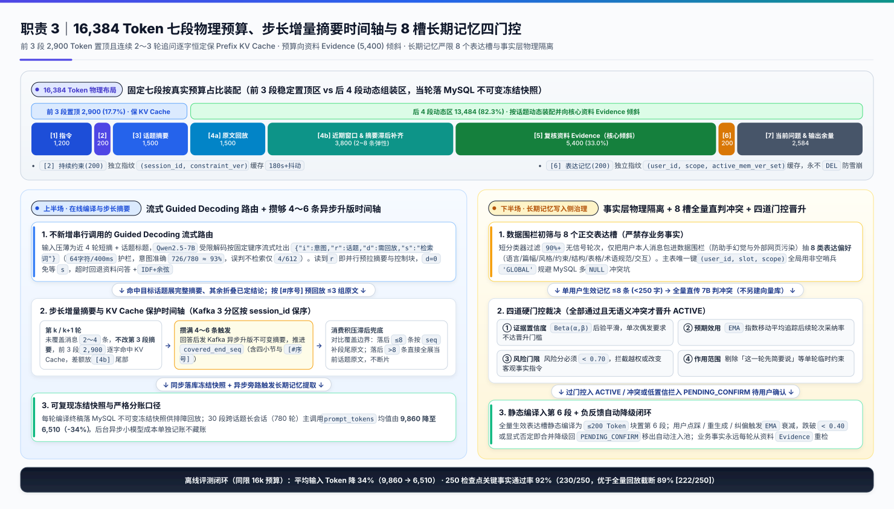
先懂再背3.0 设计推演速懂（先懂再背）
先拆简历原句 & 点破易踩坑：
这条职责的核心哲学只有三句话：事实每轮重检资料（Evidence）、会话历史只用来解指代和续话题、跨会话长期记忆只管“怎么表达”不碰业务事实。
- 易踩坑预警 1：
34%降幅（9,860 → 6,510 Token）按主回答模型输入统计，不含后台异步小模型。且未做同口径 TTFT 对照，只讲“架构上为Prefix KV Cache留出连续 2~3 轮恒定窗口”，千万别虚报首字延迟降了多少。 - 易踩坑预警 2：
92%（230/250）对比全量回放89%（222/250），跨轮约束其实我比全量少了 2 个（82 vs 84，抽取偶漏），赢在早期细节（71 vs 62）——因为全量回放在 20 轮超 16k 后从最早截断丢了首轮数字，而我靠摘要带出处序号把早期原文精准捞回来了！
一图看懂：单轮流式路由、16k 七段编译与双异步旁路全流程
车祸现场推演：每一步为什么被迫这么设计？
- 车祸 1（全量历史 Token 爆棚 + 20 轮截断丢首轮数字。滑窗切回旧话题直接断片。单做意图分类又拖慢首字）→ 约束解码流式 JSON
{i,r,d,s}搭车路由 + 出处回放- 不加它怎么炸：用户聊 A 话题 10 轮、插聊 B 话题 10 轮、再回头问 A 话题“刚才那个方案的延迟是多少”。全量塞满 16k 截断后首轮数字没了。固定滑窗只留最近几轮也会丢掉 A 话题。若单独调一个分类器判意图+话题，又白白多一轮串行网络延迟。而靠纯文本自由格式吐四行又极易因小模型多吐前缀客套话或丢换行导致解析失败。
- 怎么设计：追问本来就要调小模型改写成独立查询
s，直接让Qwen2.5-7B走 Structured Output（Guided Decoding / FSM 约束解码）按固定键序流式吐出极简 JSON{"i":...,"r":...,"d":...,"s":"..."}（只喂最近 4 轮短摘 + 话题标题行压薄 Prefill 守住400ms延迟预算）：后端流式状态机读到第 1 键i发现不用检索立刻短路，读到r立刻并行拉摘要和缓存，读到d=0甚至不等s就能启动历史装配（超时或异常兜底退回问答，话题切分回退词项 IDF + 余弦相似度）。每个话题的摘要按四小节记录且每条要点标着来源消息序号，d=1时精准按序号把当年那组问答整组捞回来（≤3 组）。
- 车祸 2（每轮重拼 Prompt 打碎推理引擎 Prefix KV Cache。摘要滞后丢最新对话）→ 置顶前 3 段 + 4~6 条步长异步摘要 + 独立指纹缓存
- 不加它怎么炸：大模型推理引擎按前缀块哈希复用
KV Cache，前面改一个字后面全白算！如果每聊 1 轮就重写一次摘要、或者把每轮都会变的新消息/时间戳放前面，前缀缓存每轮全炸。而如果为了稳住前缀干脆滞后摘要，用户刚说的话模型又看不见。 - 怎么设计：
- 步长攒批 + 动态尾部补齐：未覆盖问答攒够
4~6条才发 Kafka（按sessionId分区保序，防乱序覆盖）生成不可变新版摘要。窗口期或消费滞后 ≤8 条时，从 MySQL 拉未覆盖序号范围的原文直接补在第 4 段动态尾部（超 8 条展开当前话题段）。这样同话题连续2~3轮追问里，前 3 段2,900 Token逐字不变，既不丢最新话又守住前缀缓存！ - 第 2 段与第 6 段缓存解耦：会话约束只按
(session_id, constraint_ver)缓存，长期记忆只按(user_id, scope, active_mem_ver_set)缓存（TTL 180s + 0~30s 抖动防雪崩），谁变切谁，互不连带失效。
- 车祸 3（像 MemGPT 让模型自动记业务事实，导致跨会话“昨天的错误讨论污染今天的资料”）→ 8 槽受限程序性记忆 + 四道门控
- 不加它怎么炸：用户第一天整理论文对比表聊出个草稿数字，第三天新开会话扩写，如果自动记忆把第一天的对话结论带过来，就绕过了资料 Evidence 污染事实。
- 怎么设计：长期记忆物理限定只存 8 个表达槽位（语言、篇幅、风格、约束、结构、表格、术语、交互方式），
(user_id, slot, scope)唯一约束（全局填固定哨兵GLOBAL避免 MySQLNULL唯一键失效）。抽取时输入包数据围栏、剔除外部文档块、夹带业务实体数值整批作废。必须同时通过置信度、效用、风险、适用范围四道门控才自动生效（有冲突转待确认），并按固定公式静态排序编译放第 6 段紧贴问题（靠近生成位置遵循效果最好，优先级：当轮临时要求 > 会话持续约束 > 长期记忆）。
补充流程图 & 实况举例（热门八股长会话）：步长异步摘要、门控与第 20 轮跨话题追问
实况场景（串起 Kafka 零拷贝 & Spring 三级缓存八股）： 会话第 1～10 轮聊 话题 A（Kafka 高吞吐与零拷贝）（第 2 轮提到 sendfile 配网卡 SG-DMA 达成 2 拷 2 切，第 3 轮曾设定持久约束「术语保留英文」），第 11～19 轮切去聊 话题 B（Spring 三级缓存与循环依赖）。第 20 轮用户发来一句省略主语的口语追问：「回到刚才那个零拷贝方案，它到底是几拷几切？另外以后回答都控制在三段内。」
| 编译环节 | 实际输出 / 装入内容 | 涉及中间件协同（MySQL + Redis + ES + Kafka） |
|---|---|---|
约束解码流式 JSON {i,r,d,s} | {"i":"资料问答","r":"话题A","d":1,"s":"Kafka sendfile 零拷贝几拷几切"} | 7B 走 Guided Decoding 固定键序流式吐出（避免格式漂移），流式状态机读到 "r":"话题A" 立刻并行拉 MySQL 话题摘要与 Redis 第 2/6 段独立指纹缓存 |
| 稳定前缀（第 1～3 段） | [1] 系统指令 + [2] 既有会话约束（第 3 轮设的术语保留英文）+ [3] 话题 A 不可变摘要（标 #2）+ 话题 B 结论 | 第 2 段既有约束命中 Redis（180s+抖动），第 3 段摘要读 MySQL（未满 4~6 条步长不升版，连续 2~3 轮恒定保 Prefix Cache） |
| 动态尾部与异步落盘 | [4] 按 #2 捞回第 2 轮 2 拷 2 切 原文 + [5] Kafka 资料片段 + [6] 8 槽表达偏好 + [7] 当前问题（新要求三段内当轮直接生效） | 第 4 段出处回放查 MySQL，第 5 段重检 ES（+主库复核），第 6 段命中 Redis 记忆指纹。落 MySQL 冻结快照表。答完后轻量抽取把三段内补写进约束表推高第 2 段指纹（第 21 轮起进 [2]），同时异步发 Kafka 生摘要与抽 8 槽记忆 |
为什么选它：核心方案优劣与代价权衡表
| 决策点 & 对比方案 | 其他方案的优点（何时该选） | 缺点与底层原因（为什么会踩坑） | 我的最终方案与愿意付的代价 |
|---|---|---|---|
| 意图与话题路由 独立分类器 / 纯向量 vs 约束解码流式 {i,r,d,s} 搭车 | 独立小分类器职责解耦、适合意图固定且样本海量的场景。纯向量零模型推理成本 | 独立分类器每轮多一跳串行网络往返拉长首字延迟。纯向量看不到上下文指代，省略主语与隔轮切回旧话题极易误判 | 选查询改写走 Guided Decoding 固定键序流式输出 JSON {i,r,d,s}：愿付需流式 JSON 状态机解析与 400ms/IDF 回退护栏复杂度，换取零额外串行调用、零格式漂移且 780 轮 Top-1 约 93% |
| 长会话历史管理 全量回放 / Redis List / 同步摘要 vs MySQL + 步长 Kafka 摘要 | 全量回放前 15 轮前缀最稳、跨轮约束略高(84 vs 82)。Redis List 读写快。同步摘要无滞后窗口 | 全量回放超 16k 截断直接丢首轮细节(62/80)且 Token 贵 34%。Redis List 贴大段日志变 BigKey。每轮同步重摘拖慢首字且每轮刷爆第 3 段 Prefix Cache | 选 MySQL 存原文 + Kafka 4~6 条步长异步摘要 + 第 4 段补齐：愿付后台异步小模型开销与约束偶发漏抽 2 例代价，换取输入 Token 降 34% 且早期细节升至 71/80 |
| 缓存与长期记忆 整块单 Key / MemGPT vs 独立指纹 + 8 表达槽 | 单 Key 缓存一次 RTT 取全。MemGPT 灵活，模型自主读写任意事实记忆（适合陪伴/个人助理） | 单 Key 缓存任一约束或摘要变更连坐全失效。MemGPT 在严谨资料研究下会把前一天未经核实的闲聊结论带入新会话污染 Evidence 事实层 | 选第 2/6 段独立指纹缓存 + 8 表达槽四道门控：愿付跨会话不自动记忆业务结论（事实必须每轮重检资料）的功能克制，换取不污染事实与缓存独立命中 |
- 全量历史回放是只追加的，面试官反问“你每轮重新编译上下文，会不会反而把前缀缓存全打碎了？”，你怎么用“前 3 段置顶 + 4~6 条步长 + 动态尾部补齐”接住？
- 查询改写为什么要按
i, r, d, s的先后顺序流式输出？每个字母代表什么、怎么帮后端省时间？ - 长期记忆和会话持续约束有什么区别？为什么长期记忆不做成自动记业务事实，而只限定 8 个表达槽位？
点击核对核心采分点（先自己脱稿讲一遍再点开）
- 反击前缀缓存质疑：全量回放超 16k 截断最早消息时整条前缀全盘失效且长度线性涨。我的方案把指令、独立指纹约束、不可变摘要共
2,900 Token置顶前 3 段，且摘要攒够4~6条才经 Kafka 升版、窗口期把未覆盖原文补在第 4 段动态尾部，使连续2~3轮追问前 3 段逐字恒定（同时坦诚未做同口径 TTFT 对照，只报实测-34%Token）。 - 固定键序 JSON
{"i":...,"r":...,"d":...,"s":"..."}流式收益："i"意图放最前，读到只改表达/设约束/拒识直接跳过检索。"r"话题次之，读到立刻并行拉摘要和第 2/6 段缓存。"d"需否早期细节，为0不等"s"就免回放。"s"独立查询，用于检索和d=1时的出处回放。 - 持续约束 vs 长期记忆：持续约束是用户当场明说、仅当前会话生效无需门控（当轮推第 2 段指纹生效）。长期记忆跨会话生效须过四道门控，限定 8 个表达槽位与资料
Evidence隔离，防止把前一天未经核实的闲聊结论带入新会话污染事实（优先级：当轮临时 > 会话约束 > 长期记忆）。
3.1 约 1 分钟速答与约 2 分钟 STAR
- 面试官主问：「第三条写了 Context 编译和长期 Memory 机制，一轮对话的上下文具体是怎么编译和隔离记忆的？」：
- 约 1 分钟速答（先抛结论 + 拆三步 + 抛钩子）：
「我定了一条硬规矩：事实每轮重检资料，历史只管解指代，跨会话长期记忆只存表达偏好、不碰业务事实。
① 借查询改写小模型流式搭车输出意图和话题，零新增串行调用。把稳定的前 3 段置顶，早期细节按摘要标注序号捞原文。
② 话题摘要攒够
4~6条步长再经 Kafka 异步升版，窗口期把滞后原文补在动态尾部，兼顾前缀缓存。③ 长期记忆只开 8 个表达槽位过四道门控，和会话约束分开按独立指纹缓存。最终平均输入 Token 降了 34%，关键事实通过率 92%（基线全量回放 89%）。
这块想先看七段编译怎么护住前缀缓存，还是长期记忆怎么防污染事实？」
- 背景（S）：深度研究中的单次会话常持续二三十轮，并在三五个子话题间来回切换。全量历史回放会让输入 Token 随轮次线性膨胀，超过 16k 预算从头部截断后还会丢掉首轮关键数字。固定滑窗切回旧话题容易断片。而像 MemGPT 那样自动将对话提炼为业务事实记忆，容易把前一天未经核实的讨论带入新会话污染资料证据。
- 任务（T）：在不增加额外串行模型调用的前提下，压低输入 Token、保住跨轮约束与早期细节，并把跨会话记忆和事实层物理隔离。
- 做法（A）：
- ① 流式路由与七段装配：改写小模型走 Guided Decoding 约束解码按固定键序流式输出极简 JSON
{i,r,d,s}，读到意图就分流。前 3 段（指令、会话约束、不可变摘要共2,900 Token）集中置顶，后 4 段向核心资料Evidence（5,400）倾斜并放最多 3 组出处回放与保底原文、长期记忆与当前问题，并落 MySQL 冻结快照保证可复现。 - ② 步长异步摘要与尾部补齐：未覆盖消息攒够
4~6条才发 Kafka（按sessionId分区保序）生成不可变新版，攒批和滞后期间按序号补原文在第 4 段，让同话题连续2~3轮前 3 段逐字不变。 - ③ 受限记忆与独立指纹缓存：长期记忆仅抽 8 个表达槽过四道门控静态编译，第 2 段约束和第 6 段记忆按各自指纹独立缓存于 Redis，互不连带失效。
- 结果（R）：同在 16k 预算下对比全量回放，主模型平均输入 Token 降了 34%（
9,860 → 6,510），250 个关键事实检查点通过率 92%（230/250，基线222/250约89%）。
核心机制3.2 核心技术点
- 1. 三类信息的边界
- 怎么用：资料片段存 ES 和 MySQL，每轮按独立查询重新检索，是事实的唯一来源。消息原文和话题摘要存 MySQL，只在会话内帮助理解追问。持续约束存 MySQL，会话内每轮都带。长期记忆存 MySQL，编译结果缓存在 Redis，跨会话只影响表达方式。
- 为什么：边界清楚，才能保证跨会话不会把未经核实的对话结论当成事实。
- 2. 意图和话题判断合并进查询改写（Guided Decoding 固定键序 JSON）
- 怎么用：改写模型输入压薄为最近 4 轮短摘与最多 8 个已有话题标题行（最近 3 个附简短结论，守住
< 400ms延迟预算），走 Structured Output（Guided Decoding / FSM 约束解码） 按固定键序流式输出极简 JSON{"i":...,"r":...,"d":...,"s":"..."}（避免 7B 小模型多吐前缀客套话或丢换行导致解析崩溃）。i是意图，取资料问答、只改表达、设定约束、超出范围四个值之一。r是目标话题编号或新开话题。d表示是否需要早先细节。s是补全主语后的独立查询。后端流式状态机边收边解析，读到i属非检索三类直接分流，资料问答读到r先并行拉取话题摘要与控制块，读完前三键若d为0即无需等s做原文回放，d为1时再等s做两级定位回放。模型输出的话题不存在或超时，就按词项 IDF 覆盖度和话题向量余弦相似度切分，用户明确说回到、改聊、更正时优先按规则判断。规则切分里不确定的边界每 30 秒批量交给模型复核。 - 意图怎么处理：资料问答走正常检索和编译。只改表达不重新检索，按上一轮冻结快照里的切片 ID 取回原文并做主库复核，只重新生成。设定约束在回答前就同步写进会话约束表、推进指纹，当轮就生效，不用等回答后的抽取。超出范围直接拒识。意图不合法、超时或拿不准都退回资料问答。一句话里既改格式又要新信息，比如改成表格并补上 B 的数据，按资料问答处理，格式要求跟着问题走。
- 意图和话题的区别：话题回答接着哪条线聊，意图回答要系统做什么。回到旧话题并把表改短，话题是旧话题，意图是只改表达。
- 为什么合并：追问常省略主语，本来就要调用模型改写成独立查询，意图和话题判断搭车不增加调用次数。i 放最前面，判成不检索的类别时，后端读到第一个字段就能跳过检索。
- 对比：单独用一个分类模型判断话题，多一次调用，首字延迟变长。只用向量相似度切分，对省略主语和隔几轮回到旧话题判断不准。
- 3. 预算与选取
- 怎么用：单轮输入预算按 16k（满额 16,384）切分：稳定前缀前 3 段维持
2,900 Token不动（系统指令 1,200、会话持续约束 200、话题摘要 1,500），动态尾部向“以资料为中心”倾斜——出处回放 1,500、最近原文与滞后补齐段 3,800、资料片段Evidence5,400（充足支撑 QA Top-6 与 Note 连续章节窗口）、长期记忆表达方式 200、当前问题与生成余量 2,584。最近原文保留 2 到 8 条，累计不超过 3,800 Token。目标话题展开四小节摘要，其他话题只带已定结论。摘要滞后补原文分两种情况并统一放在第 4 段动态尾部：当前话题的摘要落后 8 条以内，按未覆盖序号范围把这几条原文补齐。回到旧话题时，那一段摘要还没覆盖到的段尾原文最多带 4 条。需要早期细节时，先用独立查询在目标话题摘要的要点里做词项匹配，找到最相关的要点，再按要点上标注的消息序号取回整组问答，最多 3 组，合计不超过 1,500 Token。 - 为什么最近原文无论属于哪个话题都保留：话题判断偶尔会错，刚说过的内容必须保留以防指代断档。
- 4. 冻结快照
- 怎么用：每轮规划结果写进 MySQL 的快照表，按用户消息序号作为键，记录每项内容入选或被排除的原因。重试和重新生成都读同一份快照。
- 为什么：输入可复现，回答有问题时能追溯当时模型看到了什么，排查不用靠猜。
- 5. 编译顺序与前缀缓存
- 怎么用：固定分七段，前 3 段置顶系统指令与工具定义、会话持续约束、各话题不可变的摘要和结论（稳定前缀合计
2,900 Token），后 4 段依次放两级回放与最近保底原文、资料片段、长期记忆表达方式、当前问题。前缀里不放时间戳和随机 ID，工具列表和字段顺序固定。 - 为什么：推理服务按块哈希复用逐字相同前缀对应的
Prefix KV Cache，稳定内容置顶配合摘要按步长触发，在架构上减少重复预填充算力与输入成本（实测输入 Token 降 34%，TTFT 未做同口径对照）。表达方式放在问题前面，离生成位置近，遵循效果更好。
- 6. 增量话题摘要（按
4～6条步长经 Kafka 异步触发）- 怎么用：回答结束后检查目标话题未覆盖消息数，攒够
4～6条未覆盖问答步长才往 3 分区摘要主题（分区键为会话 ID，同会话严格按顺序处理）投递任务，读上一版摘要和新增消息生成不可变新版，记录覆盖的消息终点序号。摘要按目标、已定结论、关键数字与清单、未决问题四个小节输出，每条要点标注来源消息序号。步长攒批窗口期内未覆盖的消息直接靠第 4 段按序号范围补齐原文（落后 8 条以内补段尾，落后更多直接展开当前话题段原文），使同话题连续2～3轮追问（4～6 条消息）期间前 3 段2,900 Token逐字恒定命中Prefix KV Cache。 - 消费参数：关闭自动提交，摘要写库成功后再手动提交位点。单条摘要要调模型，
max.poll.records设得很小，避免一批处理超过max.poll.interval.ms。 - 对比：每轮同步重写全量摘要既拖慢回答、累积误差，又会每轮刷掉第 3 段前缀缓存。用 Redis 队列做异步，没有分区有序和位点回放的能力。
- 7. 分离第 2 段与第 6 段的独立状态指纹缓存
- 怎么用：第 2 段（会话持续约束控制块，仅对
(session_id, constraint_ver)算哈希）与第 6 段（长期记忆表达控制块，独立对(user_id, scope, active_mem_ver_set)算哈希）各自独立缓存在 Redis，均不含话题摘要版本号，几百字节，过期时间 180 秒加 0 到 30 秒的随机抖动。任一侧状态变了只切对应那一侧的新指纹键，互不连带失效。 - 为什么加抖动：大量活跃会话如果在同一秒过期，会同时回源数据库重新编译。
- 8. 长期记忆的写入
- 怎么用：回答结束后经 Kafka 异步抽取。先用一个短分类判断用户这条消息里有没有对回答方式的要求或反馈，有才做结构化抽取。槽位限定 8 个：语言、篇幅、风格、约束、结构、表格、术语、交互方式。主表按用户 ID、槽位、适用范围建三列唯一约束，全局偏好填固定哨兵值
GLOBAL避免NULL唯一键失效并支持QA、NOTE分模式差异化配置。用户消息包在数据围栏里，外部文档块全部剔除，输出不符合 Schema 或夹带业务实体数值就整批作废。 - 冲突检测：同一用户全局加当前模式生效记忆最多仅 8 个表达槽位（总计不足 250 字），不杀鸡用牛刀额外维护记忆向量库——同槽直接比对取值和方向，跨槽冲突检测直接将该用户全部 ≤8 条生效记忆一次性拼进 Prompt 交
7B模型做全量一致性判定（无需维护向量库，全量直判跨槽语义矛盾、不靠 Top-K 截断）。 - 门控：证据置信度、预期效用、风险、适用范围四项全部通过才自动生效，有冲突或冲突检查没跑成就转待确认。确认后旧记忆标为已替代并记录失效时间，历史版本保留。
- 9. 长期记忆的静态编译与反馈
- 怎么用：
(user_id, slot, scope)唯一约束下仅 8 个表达槽位（其中术语槽存「技术术语保留英文原文不硬译」等通用表达规范，具体业务词汇归资料Evidence），当前模式专属scope优先覆盖GLOBAL，不按当前问题相关度动态筛选，统一按置信度 × 效用 × 新近度除以篇幅静态排序装入200 Token预算并与会话约束去重，保证同一记忆版本集编译文本逐字确定。每次回答记录注入了哪些记忆版本，点赞点踩、重新生成、下一轮追问都记到这些记忆上，负反馈多或效用持续偏低的退回待确认。 - 对比：MemGPT 让模型自己决定记什么、删什么，灵活但不可控。我让模型只负责抽取候选，晋升由规则门控决定。
- 10. 会话持续约束
- 是什么：用户在会话里明确提出、希望后面一直遵守的要求，比如术语保留英文、回答控制在三段以内、只用我上传的资料。它只在当前会话内有效，和跨会话的长期记忆分开存。
- 怎么做：分两条路写入。查询改写把这一轮的意图判成设定约束时，回答前就同步写进会话的约束表并推进指纹，当轮就生效。没被判成设定约束的，回答结束后用一个轻量抽取再判一次用户这条消息里有没有持续性要求，有就补写进约束表，推进指纹，下一轮编译时生效。同一类约束新的覆盖旧的，用户说取消就失效。当轮的临时要求本身就在问题里，模型直接能看到，不依赖抽取。约束表是整表快照，每轮都完整带上，放在置顶前缀第 2 段会话持续约束这一节。
- 为什么和长期记忆分开：会话约束是用户明确说出来的，当场就该生效，不需要门控。长期记忆是从多次对话里推断出来的，要经过门控才能跨会话生效。两者的可信度和生效速度不同。
- 优先级：当轮临时要求高于会话持续约束，会话持续约束高于长期记忆，冲突时按这个顺序。
点击展开：本章上下文与记忆核心机制公式速查（Guided Decoding FSM / Prefix KV Cache 因果掩码 / IDF+余弦退路 / Beta(α,β) 后验平滑 / EMA 指数移动平均）
Guided Decoding（受限解码 / Structured Output）底层原理：- 原理：推理引擎（如 vLLM 集成
outlines / xgrammar）把JSON Schema或文法离线编译为有限状态机（FSM）。在自回归每一步生成下一个 Token 前，根据当前所处状态算出允许接续的合法词表子集掩码（Token Mask），将所有破坏括号闭合、键序错乱或类型非法的词元logits直接置为-∞（Softmax 后概率归零）。 - 能力边界：只保证输出符合语法结构，不管内容事实真假——所以仍需配合
64字符/400ms超时护栏、finish_reason != 'length'截断检查与后置代码规则核验。
Prefix KV Cache（前缀缓存）与单向因果掩码（Causal Mask）：- 自回归模型中第
t个 Token 的 Key/Value 严格依赖前0..t-1的精确序列。推理引擎对PagedAttention物理块（如每 16/32 Token 一块）计算包含前序全部块在内的级联块哈希（Block Hash）。只要最前面哪怕改动 1 个字节，从该块往后的整段历史 KV Cache 都会哈希失配作废，被迫重跑O(N²)Prefill。这就是为什么要把前 3 段2,900 Token置顶并攒够4～6条才异步升版摘要。
- 异常退路：
IDF + 余弦相似度规则回退：- 当查询改写小模型超
400ms或异常时，用 IDF（逆文档频率） 抓用户问题里最稀有的专有词与各话题历史词项重合度，叠加句向量余弦相似度定位目标话题并做原文回放，保证不挂起也不乱丢上下文。
Beta(α, β)后验平滑置信度（生效后的小样本反馈修正，注意区分准入门控）：- 分工边界（避免与晋升门控混为一谈）：记忆能否生效由四项门控（证据置信度、预期效用、风险
< 0.70、适用范围）和无冲突把关——用户明确表述且四项全过直接生效，一次性随口要求被置信度与适用范围拦在待确认。Beta(α, β)用在生效之后的使用反馈置信度更新与编译排序（置信度 × 效用 × 新近度 / 篇幅）。 - 公式与直觉：后验均值
p̂ = α / (α + β)，α和β带初始先验值，生效后每次正反馈α ← α + 1、负反馈β ← β + 1。如果直接算好评率，一条记忆只用过 1 次被点赞就是满分，和用过 100 次、90 次好评相比并不可靠。引入Beta初始先验后，小样本阶段均值会向先验靠拢，用得多、反馈稳的记忆置信度才真正走高。
EMA（Exponential Moving Average，指数移动平均）效用更新：- 公式：
u_t = 0.75 × u_{t-1} + 0.25 × y_t（近期反馈权重大，又不会被单次偶发波动带偏）。 - 退回机制：当触发单次明确负反馈、累计两次不良表现，或使用不少于 3 次且效用跌破
0.40时，自动把该记忆退回PENDING_CONFIRM并移出自动注入池，须用户重新确认才能再生效。
高频追问3.3 高频追问
- 追问 1（编译顺序与 Prefix KV Cache） ★★★：「分层编译为什么定这个先后顺序？对推理成本和指令遵循有什么影响？」
「① 主要权衡前缀缓存命中率和末尾指令遵循两件事，推理服务（如
vLLM按块哈希匹配和商业 API 提示缓存）会复用逐字相同前缀的KV Cache，中间改一个字后面全失效。② 所以把最稳定的系统指令与固定顺序工具定义、独立指纹缓存的会话持续约束、以及按 4 至 6 条步长才异步升版的不可变话题摘要集中置顶在前 3 段（共
2,900 Token），把每轮可能变的两级回放和最近保底原文移到第 4 段动态尾部并标注所属话题和消息序号，使同话题连续 2 至 3 轮追问（4 至 6 条消息）期间前 3 段逐字恒定命中缓存，在架构上减少重复预填充算力与输入成本（实测输入 Token 降 34%，TTFT 未做同口径对照）。③ 每轮变化的资料片段放第 5 段，只有几行的长期记忆表达块静态编译后紧贴当前问题放第 6 段，重算代价极小，换来靠近生成位置的遵循效果。」
- → 触发 Agent 考点（
Context Engineering四类手段） ★★：写出去（中间状态外置落表，如研究状态表与摘要表）、选进来（按话题与序号回放按需选取）、压缩（不可变话题摘要替原文）、隔离（按对象分包的研究子任务独立上下文），本项目把四类手段组合成了统一流水线。
- 追问 2（步长异步不可变摘要与分区保序） ★★：「增量摘要为什么按步长做成不可变版本放 Kafka 异步跑？追问太快摘要滞后怎么办？积压能直接扩分区吗？」
「每轮重写全量摘要既累积丢数字误差、同步拖慢回答，又会每轮改写第 3 段冲刷前缀缓存。改成未覆盖消息攒够 4 至 6 条步长经 Kafka 在上一版基础上只读新增消息生成不可变新版（记覆盖序号终点与固定四小节），步长窗口期或消费滞后在
8条以内时直接从 MySQL 拉未覆盖范围原文补在第 4 段尾部，超过8条直接展开当前话题段原文（持续约束不走摘要队列：意图判成设定约束的当轮同步推第 2 段指纹即生效，回答后补抽的下一轮生效）。」- → 触发八股（Kafka 单分区有序与扩分区乱序风险） ★★：Kafka 只保单分区内追加顺序，摘要按会话 ID 哈希取模进同一分区串行处理，运行中直接扩分区会让同会话落入新分区破坏顺序，保序主题优先提升单条处理速度，扩分区放到低峰期等旧分区排空再切。
- 追问 3（Redis 缓存边界与长期记忆防污染） ★★★：「为什么不用 Redis
List存最近会话消息？长期记忆为什么不学MemGPT让模型自己读写业务事实？」「长对话贴日志代码会让
List变大 Key 且只能头尾截，所以原文存 MySQL 建会话序号联合索引，Redis 只把第 2 段会话约束与第 6 段静态编译长期记忆各自按独立状态指纹缓存为几百字节键值（180s加随机抖动防同刻失效）。记忆上比如用户第一天整理了论文对比表、第三天新开会话扩写，表里数字必须重新从论文检索，若把第一天对话结论当记忆带过来就绕过资料Evidence污染了新回答，而 8 个槽位只存通用表达规范就算记偏用户一眼也能看出。」- → 触发八股与 Agent 考点（Redis 为什么快 + 记忆分类与门控治理） ★★：Redis 快在纯内存、单线程执行省锁与切换开销、IO 多路复用（6.0 后网络读写解析多线程但命令执行仍单线程，大 Key 排障见实习项目）。Agent 长期记忆分语义、情景、程序性三类，本项目只做受四道门控管制的程序性记忆。
- 追问 4（前缀缓存的反问） ★★★：「全量历史回放是只追加的，本来就最容易命中前缀缓存。你每轮都重新编译，会不会反而更慢？」
「① 全量回放初期前缀确实最稳定，但它有两个硬伤：一是输入长度随轮数线性增长，注意力计算和显存仍随长度涨，二三十轮超出窗口从最早消息一截断，整条前缀立刻全盘失效，二是长历史混杂旧说法稀释注意力。
② 我的编译方案里，前 3 段
2,900 Token集中置顶，第 2 段与第 6 段缓存解耦，且增量摘要攒够 4 至 6 条未覆盖步长才异步升版，因此在同话题连续 2 至 3 轮追问（4 至 6 条消息）期间前 3 段逐字恒定不变，变的只是第 4 段往后的动态尾部。③ 所以这套顺序既给前缀缓存留出了稳定复用窗口，又把单轮输入控制在固定预算内，34% 的 Token 降幅是实测的，首字延迟未做同口径对照，不会拿它当结论讲。」
- 追问 5（质量有没有换掉） ★★：「Token 降了 34%，事实通过率是不是拿质量换的？92% 的基线是多少？」
「① 两种方式在同一批 30 段会话、同一个
16k输入预算下跑完，Token 和 250 个检查点（跨轮约束、指代、早期细节三类）按同一套口径统计。② 整体通过率分层编译 230/250 即 92%，全量回放（超出
16k从最早消息截断）222/250 约 89%。③ 分开看，跨轮约束我少 2 个（82 比 84，约束抽取偶发漏抽），指代持平（77 比 76），差距主要在早期细节（71 比 62，全量回放在二十轮后截断丢了首轮具体数字），证明省掉 34% 的 Token 没有拿事实质量做交换。」
- 追问 6（为什么是 16k） ★：「模型支持 32k 甚至更长，为什么只给 16k？」
「16k 是我给单轮装配定的预算，不是模型上限。一是预算固定，各段的上限才固定，同一话题连续追问时前缀才稳定。二是长上下文中间部分的注意力偏弱，资料放进去不等于被用上。三是输入 Token 直接对应预填充算力与输入成本，34% 也是在这个统一预算下对照测出的。」
- 延伸深挖分册：见 04_Context编译与长期Memory治理.md 与 context-design.md。
04四、搭建异步资料处理与流式回答链路（职责 4）
简历原文搭建异步资料处理与流式回答链路：针对大文件同步解析阻塞与流式回答断连问题，将解析、切片、向量化和索引拆为 Kafka 分阶段任务并按处理版本幂等推进，通过流式读取支持 128 MB 单文件异步接入；回答侧以幂等 Turn + Redis Stream 中转 SSE 解耦生成与连接，对 Stream 按条数裁剪，控制内存增长，支持基于 Last-Event-ID 的跨实例断线续读。
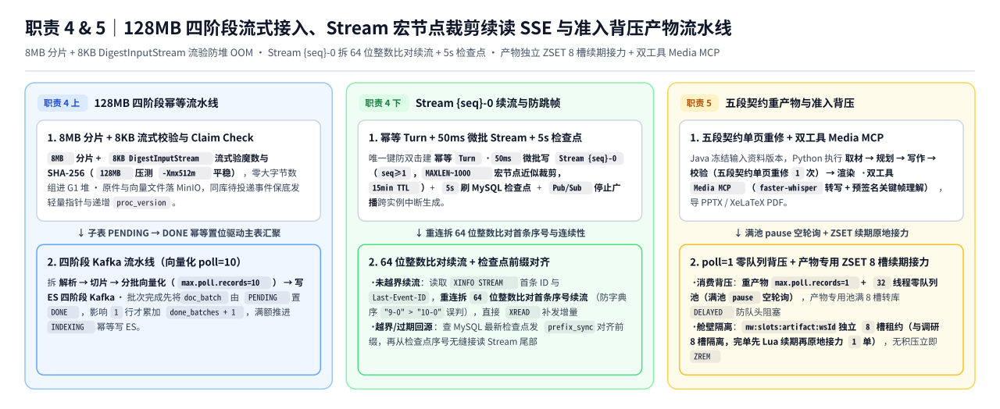
先懂再背4.0 设计推演速懂（先懂再背）
先拆简历原句 & 点破易踩坑：
这条职责是两条彼此清晰的前后端核心链路：
- 链路一（大文件入库）：解决
128 MB单文件上传阻塞和 512MB 小堆 OOM —— 分片直传 MinIO + 同步回调Range4 KB 验魔数（业务机 0 MB 穿境）+ 异步阶段 18 KB流式读取算 SHA-256 与 15 页微批解析 + Kafka 四阶段版本幂等推进 + 批次条件更新汇聚。 - 链路二（AI 流式回答续读）：解决生成绑死 HTTP 连接、断网/切网关丢字 —— 幂等 Turn + Redis Stream 50ms 微批中转（网关固定 4 路分片
XREAD多 Key 多路复用扇出，防 Lettuce 连接池打爆）+ MySQL 5 秒检查点 + 基于Last-Event-ID的 64 位整数比对无缝续读。 - 易踩坑预警：断线重连判断游标有没有被 Stream 裁掉时，不能直接调
XREAD（游标被裁时 Redis 会静默从现存首条跳读漏字），也不能用字符串字典序比较 ID（"9-0" > "10-0"会直接误判），必须拆出-前的 64 位整数做数值比对！
一图看懂（链路一）：128 MB 单文件常数堆内存与四阶段异步入库
一图看懂（链路二）：幂等 Turn + Redis Stream 中转 SSE + 断线续读对齐
车祸现场推演：每一步为什么被迫这么设计？
- 车祸 1（512MB 堆整包读 128MB 爆 Full GC + Java 同步回拉 128MB 吃爆带宽与超时）→ 分片直传 + 4KB Range 嗅探 + 阶段 1 异步 8KB 流式读取
- 不加它怎么炸：在
-Xms512m -Xmx512m受限堆下，直接getBytes()读 128MB 远超 G1 半个 Region 大小，直接作为巨型对象塞进连续老年代，8 路并发必爆 Full GC/OOM。如果同步上传回调里由 Java 把整个 128 MB 从 MinIO 拉回来算 SHA-256，既让 128 MB 带宽倒灌业务机又容易触发接口超时。如果整个解析+切片+向量化+写 ES 揉成一步，不仅无法各自扩缩容，向量化限流报错还得重头 OCR。 - 怎么设计：前端 8MB 分片直传 MinIO 合并（支持 S3 原生分片校验）。Java 同步回调只用
Range: bytes=0-4095读前 4 KB 验魔数（毫秒返回，0 MB 大文件穿境）。全文件 SHA-256 复算下沉到异步消费阶段 1 通过8 KB缓冲流式读取 MinIO 对象流边校验边做 15 页微批流式 OCR（全程常数堆内存，8 路并发 0 巨型对象 Full GC）。拆成四阶段 Kafka（消息体只传 MinIO 指针，向量化单独 6 分区按docId + batchNo打散提速，阶段 4 与撤回删索引共用按docId分区的 ES 同步 Topic 保序）。
- 车祸 2（Kafka 重复消费导致向量化完成批数多加，提前触发建索引）→ 批次明细表条件更新汇聚
- 不加它怎么炸：向量化某批次消费重复投递，如果直接给主表
done_batches + 1，实际还没跑完就触发了建索引，丢掉后面批次的切片。如果改用布隆过滤器去重，一旦发生假阳性把真实批次当成重复丢掉，完成批数永远少 1，整篇文档永久卡死！ - 怎么设计：向量化前先往批次明细表插满每批一行（待处理），每批结束在同事务里做条件更新
待处理 → 已完成，只有影响行数等于 1 时才给主表完成批数+1，等于总批数时才发建索引事件。建索引带version_type=external_gte既允许同版本重放又拒旧版本。
- 车祸 3（SSE 绑死单连接断网白算 + Stream 内存无限涨 + 长时间断网漏字）→ POST/GET 解耦 + Stream 裁剪与 5s 检查点双保险
- 不加它怎么炸：直接在一个 POST 请求里同步流式写 SSE，用户刷新、切网关或弱网断连，生成立刻中断。而如果全塞 Redis Stream 不裁剪会把内存打爆，按 1000 条裁剪后离线超 50 秒又会找不到
Last-Event-ID。 - 怎么设计：
- 拆 POST + GET 与
Stream Multiplexer多路复用：浏览器EventSource原生只支持 GET 且自带Last-Event-ID，先 POST 建幂等 Turn 防连点、后台独立跑，再 GET 订阅。不给每个runId独占 1 条XREAD BLOCK线程（Lettuce 基于 Netty 单连接多路复用禁跑阻塞命令，200 个同学并发提问会瞬间借光 200 条独立 Redis 连接打爆连接池！），改为每台网关固定4条分片读线程，每条循环用单条原生XREAD BLOCK 50 STREAMS k1..kN id1..idN同时监听本分片几十～上百个活跃runId，读到增量帧后内存扇出给各SseEmitter（线程与 Redis 连接恒定 O(1)）。 - 50ms 微批 + 1000 条窗口(≈50s) >> 5s 检查点：50ms 攒一块降一个量级写压力，1000 条近似裁剪保内存可控，且 50 秒窗口远大于 5 秒检查点间隔——只要重连发现游标被裁，拿最新的 5 秒检查点让前端整体覆盖，后面的增量一定还在 Stream 里，拼出来与终态逐字一致！
实况举例（全中间件协同：MinIO + MySQL + Kafka + ES + Redis Stream/PubSub + Nginx）
① 链路一实况：128 MB 扫描 PDF 经 MinIO → Kafka 4 阶段 → MySQL 汇聚 → ES（第 2 批遭遇重复投递）
| 执行节点 | 中间件协同状态（MinIO / MySQL / Kafka / ES） | 关键防线体现 |
|---|---|---|
| 上传校验与解析切片 | 前端 8MB 分片直传 MinIO → Java 同步回调 Range: 0-4095 读前 4 KB 验魔数 → MySQL 升版写待投递事件发 Kafka（仅传指针）→ 阶段 1 异步 8 KB 流式读 MinIO 算 SHA-256 与 15 页微批 OCR 写回 → 切片拆成 3 批进 Kafka 6 分区向量主题 | Java 机 0 MB 大文件穿境、同步回调毫秒返回，-Xmx512m 8 路并发避开 G1 巨型对象 Full GC |
| 批次 1、2 完成 & 批次 2 重复投递 | MySQL 批次明细表 B1/B2 条件更新影响 1 行使主表 done_batches: 0→2。Kafka 重平衡重复投递 B2 时条件更新 影响 0 行，done_batches 保持 2 | 不用布隆过滤器（假阳性误丢真实 B3 会让 done_batches 永远少 1 卡死整篇文档） |
| 批次 3 完成触发建索引 | B3 更新影响 1 行 → done_batches: 2→3 == 总批数 → 发 Kafka 建索引主题 → ES bulk 写入（带 version_type=external_gte） | 既支持同版本批次幂等重放，又拒绝迟到旧版本覆写 |
② 链路二实况：生成到第 2450 帧，前端断网 2 分钟带着 Last-Event-ID = 9-0 经 Nginx → Redis Stream + MySQL 重连
| 检查项 | 中间件真实状态（Nginx / Redis / MySQL） | 网关裁决与前端对齐动作 |
|---|---|---|
| 推流与停止控制 | Nginx 关代理缓冲(X-Accel-Buffering: no)。Redis Stream 现存 1451-0～2450-0（MAXLEN ~ 1000 约 50s）。用户点停止经 Redis Pub/Sub 广播掐断上游 | 网关调 XINFO STREAM 拆 64 位整数比较 9 < 1451（严禁字符串比，防 "9-0" > "1451-0" 误判） |
| 检查点对齐与尾部续读 | MySQL 幂等 Turn 表最新 5 秒检查点落盘至 seq = 2400（必在 Stream 窗口内） | 发现游标已裁且运行中 → 先下发 MySQL seq=2400 前缀同步事件整体覆盖，再从 Redis Stream 续推 2401-0～2450-0（核验首帧 =2401），与终态逐字一致 |
为什么选它：核心方案优劣与代价权衡表
| 决策点 & 对比方案 | 其他方案的优点（何时该选） | 缺点与底层原因（为什么会踩坑） | 我的最终方案与愿意付的代价 |
|---|---|---|---|
大文件存储传递getBytes() / 同步回拉算哈希 vs 分片直传 + 4KB Range + 阶段 1 流读 | getBytes() 与同步回拉实现直接 | 512MB 堆下 128MB 字节数组超 G1 半个 Region 直配老年代爆 Full GC。Java 同步回调回拉 128MB 算 SHA-256 既浪费内网带宽又易网关超时 | 选分片直传 MinIO + 同步 4KB Range 验魔数 + 阶段 1 异步 8KB 流读算哈希解析：愿付多一套对象存储与预签名接口成本，换取 Java 零大文件穿境与 8 路并发 0 Full GC |
| 拆分与批次汇聚 单阶段 / 布隆过滤器 vs 四阶段 Kafka + 明细表 | 单阶段链路短无中间状态。布隆过滤器内存占用极小、判重 O(1) | 单阶段解析(CPU)/向量(API)/索引(ES)瓶颈混绑无法独立扩缩，一步报错重头 OCR。布隆过滤器有假阳性，误丢 1 个真实批次会让完成批数永远少 1 卡死整篇文档 | 选四阶段 Kafka + MySQL 批次明细表条件更新：愿付多 3 张阶段/批次状态表与少量写库开销，换取按瓶颈独立扩缩与 100% 精确汇聚 |
| 流式推流与续读 WebSocket / 每流阻塞读 / 双写 PubSub vs SSE + Stream 多路复用 | WebSocket 适合双向高频交互。每流独立 XREAD 代码简单。Pub/Sub+Stream 适合万级超大规模 | AI 推流是单向的，WS 协议升级与有状态运维过重。每 runId 1 条阻塞线程 会耗尽 Lettuce 独立连接打爆 Redis 连接池。双写 Pub/Sub+Stream 存在订阅切换缝隙去重复杂度 | 选 POST 幂等 Turn + GET SSE + 4 路 XREAD 多 Key 多路复用 Stream + 5s 检查点：愿付维护分片多路复用游标表复杂度，换取 O(1) Redis 连接、普通 HTTP 易穿网关与断网逐字一致（万级并发再演进 Pub/Sub 通知 + Stream XRANGE 补读） |
- 为什么在
-Xmx512m堆里调getBytes()读 128MB 文件会出事？你是怎么把内存压成常数的？ - 为什么向量化批次汇聚要用数据库明细表条件更新，而不能用布隆过滤器去重？
- 如果用户断网 2 分钟再连回来，
Last-Event-ID早就被MAXLEN ~ 1000裁掉了，网关具体按哪几步保证前端最终拼出的字一字不差、不重不跳？
点击核对核心采分点（先自己脱稿讲一遍再点开）
- 常数堆内存接入与零穿境：
512MB堆下128MB字节数组远超 G1 半个 Region，直接作为巨型对象塞进连续老年代，8 路并发必爆 Full GC/OOM。改成前端8MB分片直传 MinIO + Java 同步回调仅Range: 0-4095读前 4 KB 验魔数（0 MB 大文件穿境、毫秒返回）+ 异步阶段 18KB缓冲流式读 MinIO 边算 SHA-256 边 15 页微批 OCR，堆内存与文件总大小无关。 - 精确汇聚防假阳性：布隆过滤器存在假阳性，万一某个真实批次撞上假阳性被误当成重复丢掉，主表
done_batches就会永远少 1 卡死建索引。改用批次明细表条件更新待处理→已完成，仅当影响行数等于 1 才同事务主表+1。 - 断网 2 分钟无缝对齐：先调
XINFO STREAM拆-前 64 位整数比较游标与首条序号（严禁字典序比防"9-0" > "10-0"，也不裸调XREAD防静默跳字）。确认被裁后查 MySQL Turn，已完结直返终态全文，运行中先下发 5 秒检查点前缀让前端整段覆盖，再续接 Stream 尾部（5s≈100 帧远小于千条 50s 窗口，首帧二次核验= 游标+1）。
4.1 约 1 分钟速答与约 2 分钟 STAR
- 面试官主问：「第四条写了 128 MB 文件拆四阶段 Kafka 接入和
Redis Stream中转SSE续读，具体是怎么设计和实现的？」：- 约 1 分钟速答（先抛结论 + 拆三步 + 抛钩子）：
「这条其实是两条工程链路：写侧保 128 MB 大文件不 OOM、不阻塞，读侧保 AI 流式回答断网切网关续读一字不差。
① 大文件用 8 MB 分片直传 MinIO，Java 同步回调只用
Range读前 4 KB 验魔数毫秒返回、0 MB 穿境，异步阶段 1 用8 KB流式读取边算 SHA-256 边 15 页微批解析，-Xmx512m小堆下 8 路并发零巨型对象 Full GC。② 解析、切片、6 分区并行向量化和建索引（与撤回删索引同
docId分区保序）拆成四阶段 Kafka，按处理版本幂等推进并用批次明细表精确汇聚。③ 回答侧拆成 POST 幂等 Turn + GET SSE 订阅，中间用
Redis Stream50ms 微批裁剪配网关 4 路分片XREAD多 Key 多路复用（O(1) Redis 连接防打爆连接池）加 MySQL 5 秒检查点兜底，重连按 64 位整数比对无缝续推。更想先听大文件怎么防 Full GC 和汇聚，还是 SSE 离线太久怎么对齐不丢字？」
- 背景（S）：面向学校/学院场景，学生常需上传百兆级扫描教材 PDF 或课程录屏（单文件最大 128 MB），若同步解析会直接阻塞接口，后端整包
getBytes()在 512MB 受限堆下多路并发会触发 G1 巨型对象 Full GC，向量化也易堵死单分区。回答侧若把生成绑死在单条 HTTP 连接上，弱网断连或切网关就会丢失生成进度。 - 任务（T）：以常数堆内存异步接入百兆文件并拆出可独立扩缩的幂等流水线，同时解耦模型生成和前端 SSE 连接。
- 做法（A）：
- ① 常数堆内存卸载与零穿境：前端 8 MB 分片直传 MinIO 合并，Java 同步回调仅
Range: bytes=0-4095读前 4 KB 验魔数（不回拉 128 MB），本地事务升版写待投递事件发 Kafka（仅传几百字节指针），异步阶段 1 以8 KB缓冲流式读取 MinIO 边算 SHA-256 边 15 页微批解析。 - ② 四阶段版本幂等推进：拆成解析、切片、6 分区并行向量化（批次明细表条件更新影响 1 行才累加完成批数）与 ES 同步（阶段 4 建索引与撤回删索引共用按
docId分区 Topic 保序，external_gte），各步核对处理版本跳过旧版。 - ③ Stream 多路复用中转与检查点对齐：POST 建幂等 Turn、GET 订 SSE（停止走
Pub/Sub中断），50ms 微批写从1递增的 Stream（MAXLEN ~ 1000），网关固定 4 路分片XREAD BLOCK 50 STREAMS k1..kN多 Key 多路复用扇出（O(1) Redis 连接），每 5 秒刷 MySQL 检查点。重连拆 64 位整数比首条序号，没裁直接续推，被裁先推检查点整体覆盖再续接 Stream 尾部。
- 结果（R）：在
-Xmx512m受限堆下 8 路并发接入 128 MB，GC 日志里没有巨型对象引发的 Full GC。断网、切网关、长时间离线三类故障注入后，前端拼出的全文与终态逐字一致。
核心机制4.2 核心技术点
- 1. 分片上传、4 KB
Range验魔数与阶段 1 流式校验- 怎么用：前端按 8 MB 一片调 MinIO 的分片上传（支持 S3 原生分片校验
ChecksumSHA256），失败的分片单独重传，全部上传后由服务端合并。Spring Boot 同步上传完成回调不把 128 MB 全量拉回业务机，而是只发一次Range: bytes=0-4095（前 4 KB） 流式检查文件头魔数防伪造后缀，毫秒级返回。全文件 SHA-256 复算下沉到异步消费阶段 1，通过8 KB缓冲流式读取 MinIO 对象流边校验去重、边按 15 页微批解析，全程堆里只有一个常数级缓冲区。 - 为什么不用
getBytes()也不在同步接口拉全文件：在-Xms512m -Xmx512m受限堆参数下，128 MB 的字节数组远超过 G1 半个 Region 的大小，会作为巨型对象直接分配到连续的老年代 Region，8 路并发就会触发 Full GC 乃至 OOM。而如果让 Java 同步回调流式回拉整个 128 MB 算哈希，依然会把百兆带宽倒灌进业务机且引发接口超时。 - 对比：前端分片直传 + 同步
Range4 KB 嗅探 + 阶段 1 异步流式读算哈希，才真正做到“业务机 0 MB 大文件穿境 + 全程常数堆内存”。
- 2. 四阶段 Kafka 主题
- 怎么用：解析、切片、向量化、ES 同步（阶段 4 建索引与撤回删索引共用同一按
docId分区的 ES 同步 Topic，保证同文档建删严格 FIFO 因果有序）四个阶段，向量化 6 个分区，其他三个各 3 个分区。消息体只有资料 ID、处理版本号和 MinIO 路径，几百字节。解析、切片和 ES 同步以资料 ID 作分区键，向量化以「资料 ID 加批次号」作分区键，一个大文件的多个批次打散到不同分区并行。每阶段消费成功后，同事务更新阶段状态并写入下一阶段的极简同库待投递事件记录，提交后异步发 Kafka（异常由后台扫未投递记录幂等补发），再手动提交位点。 - 生产端参数：
acks=all，开启幂等生产者enable.idempotence，重试次数不限、配合交付超时控制总时长。 - 消费端参数：关闭自动提交。向量化快阶段（64 切片一批）设
max.poll.records = 10。重型产物队列消费线程只做毫秒级幂等落库/抢槽并立刻提交位点（不在消费线程同步跑 2～6 分钟长任务），从根源保证单批处理耗时远小于max.poll.interval.ms。 - 为什么拆四阶段：四个阶段的瓶颈不同，解析吃 CPU 和内存，向量化受模型接口并发限制，建索引是 ES 写入，拆开后各自扩缩容，某一步失败只重试这一步。
- 3. 批次汇聚
- 怎么用：向量化开始前在批次明细表里为每个批次插一行，状态待处理。每批完成后执行条件更新，把这一批从待处理改成已完成，影响行数为 1 才给资料主记录的完成批数加 1，两步在同一个事务里。完成批数等于总批数时投递建索引任务。
- 为什么：消息可能重复投递，直接给主记录加 1 会重复计数，提前触发建索引。
- 4. 建索引
- 怎么用：用 ES 的
bulk接口，每批 500 条或 5 MB，写入时带version_type=external_gte允许同版本批次幂等重放并拒绝旧版本写入。建索引期间把索引的refresh_interval保持默认 1 秒，不在请求里强制刷新。
- 5. 幂等 Turn
- 怎么用：前端每次发送生成一个客户端请求号，后端在 Turn 表上对「会话 ID 加客户端请求号」建唯一索引。插入冲突就查出已有的 Turn 和运行编号直接返回。
- 为什么：用户连点、网络重试都会产生重复请求，唯一索引是最简单可靠的去重。
- 6. Redis Stream 中转与
Pub/Sub停止中断- 怎么用：每次运行一个 Stream 键（
sse:stream:turnId，turnId与下文runId均指本次生成执行流 ID，不加{}Hash Tag）。生成端把模型输出按 50 毫秒攒成一个增量块，用XADD写入，带MAXLEN ~ 1000近似裁剪，消息 ID 显式采用从1开始单调递增的<seq>-0（Redis 规定0-0非法）。每次写入刷新过期时间为 15 分钟，每 5 秒把累计前缀和对应序号写进 MySQL 检查点，结束时写终态全文。用户点击「停止生成」时后端更新状态并经 RedisPub/Sub广播中断信号，生成实例收到后立即切断上游模型流。 - 参数怎么定：50 毫秒微批在用户感知上仍是流畅的逐字输出，又能把写入次数降一个数量级。1000 条按 50 毫秒算大约覆盖 50 秒，远大于 5 秒的检查点间隔，保证检查点之后的增量都还在 Stream 里。
- 7. SSE 推送与
Stream Multiplexer固定分片多路复用- 怎么用：前端先 POST 提交 Turn，再用
EventSourceGET 订阅运行的事件流，后端用SseEmitter推送，每 15 秒发一条注释行做心跳，防止代理和负载均衡把空闲连接断掉。网关侧不给每个runId独占 1 条XREAD BLOCK线程，而是每台网关仅开固定4条分片读循环（Stream Multiplexer），活跃runId按哈希归入对应分片，每条循环用单条 Redis 原生XREAD BLOCK 50 STREAMS k1 k2 ... kN id1 id2 ... idN一次性监听几十～上百个活跃 Stream，读到增量帧后在内存按runId扇出分发给对应的多个SseEmitter。 - 为什么不能 1 个
runId开 1 条阻塞读线程（核心八股）：Spring Boot 默认 Redis 客户端 Lettuce 基于 Netty 单连接多路复用，严禁在共享连接上跑XREAD BLOCK/BLPOP阻塞命令（会卡死整条连接上的其他所有短命令），必须从连接池借独立物理连接。如果 200 个同学同时生成回答、每个runId独占 1 条线程和 1 条独立连接，瞬间打爆 Redis 连接池与线程上限。改成 4 路多 Key 多路复用后，单机承载数百并发 SSE 流始终只占 4 条线程 + 4 条 Redis 连接（O(1)）！ - Nginx 配置：关闭代理缓冲，或者响应头带
X-Accel-Buffering: no，读超时调大到心跳间隔之上。 - 对比：不选双写
Pub/Sub + Stream是为了避免订阅切换缝隙丢帧与双路状态机复杂度（校级几百并发纯 Stream 多路复用最简洁统一。若未来扩至单机万级活跃流，再进一步演进为Pub/Sub分片通知 +Stream仅做XRANGE补读）。
- 8. 断线续读与 64 位整数序号比对
- 怎么用：重连时浏览器自动带
Last-Event-ID。网关先调XINFO STREAM取当前首条 ID，拆出两边-前面的 64 位整数做数值比对（严禁字典序比对，防止"9-0" > "10-0"误判，且直接调XREAD在位点已裁时会静默从现存首条跳读漏字），并在XREAD首帧返回时二次核验帧序号等于游标加 1。游标还在就直接续推，已被裁掉的话，运行已结束就返回 MySQL 终态全文，还在运行就先下发带5 秒检查点序号的前缀同步事件让前端整体覆盖已显示内容，再续接大于该序号的 Stream 尾部增量，不重不跳。
- 9. 解析阶段怎么处理大文件
- 怎么做：解析在无状态 Python Worker 里按 15 页微批流式加载，文字版直接抽取文本和版面结构，扫描版按微批渲染成图片后交进程池并发 OCR，每批写回 MinIO 即释放图像张量内存。音视频不走此处，转给 MCP 服务，完成后汇总章节结构写回 MinIO 交给切片阶段。
- 为什么按微批：128 MB 扫描 PDF 可达几百页，整份加载光栅化会撑爆 Worker 内存，按 15 页微批流式处理时内存与文件总大小无关，只取决于单批页数。
- 失败处理：单页异常记页码跳过，不中断整份文档解析，最后在资料详情提示异常页码。
点击展开：本章流式底座与性能指标原理速查（G1 Humongous 巨型对象 / Kafka 零拷贝 sendfile & ISR / Lettuce 阻塞红线 / Stream MAXLEN ~ / P95 分位延迟含义）
- JVM G1
Humongous（巨型对象）触发 Full GC 原理：- G1 把堆划成大小相等的 Region（
512 MB堆下默认每 Region 约1 MB）。凡是单个数组体积≥ 半个 Region（即≥ 512 KB），就会被判为巨型对象，绕过年轻代直接分配在老年代的连续多个 Region 中。128 MB整包getBytes()需要连续 128 个 Region，多路并发直接碎片化打穿老年代触发 STW Full GC。改为8 KB流式读取后对象留在 Eden 朝生夕死。
- Kafka 高吞吐（零拷贝
sendfile）与三端防丢（ISR）：- 磁盘文件不经过用户态 JVM 堆，靠操作系统
PageCache+ Linuxsendfile系统调用经 DMA 从内核页缓存直推网卡缓冲区（4 次拷贝降为 2 次、4 次上下文切换降为 2 次）。可靠性靠生产端acks=all+enable.idempotence、Broker 副本同步集ISR配min.insync.replicas=2且禁非同步副本选主、消费端业务落妥后再手动提交 offset。
- Lettuce 单连接阻塞红线与
Stream MAXLEN ~原理：- Lettuce 基于 Netty 单 TCP 连接多路复用短命令，若在共享连接上发
XREAD BLOCK阻塞命令，会卡死同一连接上所有普通GET/SET。用固定 4 路分片XREAD BLOCK 50 STREAMS k1..kN仅占 4 条独立连接（O(1)）。 - Redis Stream 底层是
Radix Tree（前缀树）索引多个listpack宏节点。MAXLEN ~ 1000中的波浪号~表示近似裁剪——仅当整块listpack宏节点全部早于阈值时才O(1)整块释放，避免每次XADD都在紧凑数组内搬移字节。
P95/P99分位延迟（与均值区别）：- 定义：把压测窗口内全部请求的端到端耗时从小到大排序，排在第 95% 位置的数值即
P95（表示 95% 的请求响应时间≤ P95，仅最慢 5% 超过它）。 - 为什么工程 SLA 看 P95 不只看均值：均值极易被 90% 的快速缓存命中拉低，掩盖 5%～10% 的严重长尾毛刺（如 GC、锁排队、热点大 Key）。本项目检索
P95 ≈ 180ms直接刻画了 95% 真实请求的延迟上限。
高频追问4.3 高频追问
- 追问 1（四阶段拆分与批次汇聚） ★★：「一个文件任务跑到底不行吗，为什么拆四阶段？批次去重为什么不用布隆过滤器？」
「四阶段吃计算、受模型并发限、写 ES 的瓶颈各不相同，拆开后可独立扩缩容，某一步报错也只重试当前阶段不用重头解析。批次汇聚不用布隆过滤器是因为它有假阳性，一旦某个真实批次撞上假阳性被误当成重复丢掉，主表完成批数就会一直少 1 导致整篇文档卡住进不了索引。」
- → 触发八股（
G1巨型对象、Kafka 为什么快与三端防丢ISR） ★★★：超过半个 G1 Region 的大字节数组会直配连续老年代 Region 易触发 Full GC，故用8 KB流。Kafka 高吞吐靠分区顺序追加写、操作系统页缓存、sendfile零拷贝直推网卡与批量压缩，配合对象存储传指针（Claim Check）。防丢靠生产acks=all加幂等、Broker 多副本配min.insync.replicas=2禁落后副本选主、消费端业务落妥再手动提位点。
- 追问 2（生成连接解耦与断网检查点对齐） ★★★：「为什么把提问 POST 和订阅 GET 拆开？如果断网太久
Last-Event-ID已经被Stream裁掉了怎么办？」「① 浏览器原生
EventSource只支持发GET请求且自带断线重连带Last-Event-ID能力，拆成先POST创建幂等Turn拿运行编号再GET订阅（Nginx 关代理缓冲防攒块，点停止时经Pub/Sub广播中断），既解决了提问传参和防双击，又让后台生成脱离单条 HTTP 连接独立跑。② 高频
50ms增量按从1开始的序号只写 RedisStream近似裁剪千条，MySQL 每5 秒低频写滚动检查点前缀。③ 重连时网关先拆出
-前 64 位整数比对Stream首条序号与Last-Event-ID（防字典序"9-0" > "10-0"误判），仍在保留窗口内就直接续推并核验首帧连续，若已被裁掉则按是否完结分流：已完结直接返回 MySQL 终态全文，仍在生成中则先取出最新5 秒检查点作为专用前缀同步事件发给前端整体覆盖对齐，再从该检查点序号无缝续接Stream尾部（5 秒约一百个微批，远小于千条保留窗口，中间不会断档）。」- → 触发八股（
SSE vs WebSocket、Lettuce阻塞连接坑与Stream vs Pub/Sub） ★★★：AI 回答是服务端单向推流，SSE走普通 HTTP 免去WebSocket协议升级和连接状态管理（HTTP/2 多路复用破除同域 6 连接限制）。Lettuce 底层单 TCP 共享连接禁跑阻塞命令，每runId开XREAD BLOCK会借光连接池，故用 4 路固定分片单条XREAD STREAMS k1..kN多路复用将线程与连接压到 O(1)。Pub/Sub即发即弃只发停止中断广播，Stream保留最近窗口支持按位点补读，MAXLEN ~只在整块listpack宏节点可整体移除时裁剪（万级流再演进Pub/Sub通知 +Stream XRANGE补读）。
- 延伸深挖分册：见 05_异步资料流式链路与Schema产物框架.md（职责 4 部分）。
05五、构建 Schema 驱动的产物生成框架与 MCP 多模态接入（职责 5）
简历原文构建 Schema 驱动的产物生成框架：针对多类型产物流程耦合与长任务排队问题，以 SKILL.md + Schema 统一报告、测验和课程笔记契约，复用取材、规划、写作、校验、渲染五段流水线；结合 Kafka 分区并行消费与工作台级并发准入调度独立任务，并通过 MCP 接入音视频转写与关键帧理解，支持视频转 PPT 及 PDF 讲义生成。
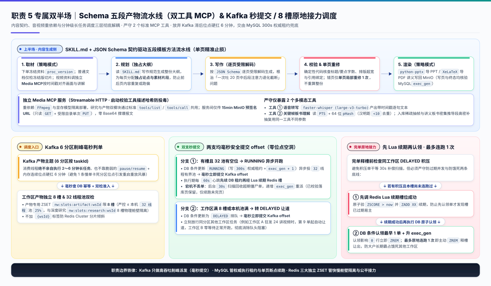
先懂再背5.0 设计推演速懂（先懂再背）
先拆简历原句 & 点破易踩坑：
这条职责干了三件解耦的事：
① 内容生成解耦（SKILL.md + JSON Schema 契约 + 五段模板方法流水线 + 逐页受限解码与单页重修）。② 音视频重依赖解耦（独立 Media MCP 服务，严守仅暴露 2 个工具：语音转写 + 关键帧多模态理解）。③ 分钟级长任务调度解耦（Kafka 6 分区并行消费毫秒级落库/抢槽并立刻提交位点 + MySQL 权威任务表 300s 运行租约与 exec_gen + 产物独立 ZSET nw:slots:artifact:wsId 8 槽延迟让道 + 完单先续期再认领原地接力 1 次）。
- 易踩坑预警 1：全项目严守只有 2 个 MCP 工具——入库全片稀疏抽帧与产物取材局部高密度补抽，共用第 2 个关键帧理解工具的不同时间窗与分辨率参数。
- 易踩坑预警 2：为什么不让 Kafka offset 扛 2～6 分钟长任务执行态（也不靠
pause/resume+ 内存连续位点集合硬撑）？ 因为一旦单分区最早那条任务跑 6 分钟没完，连续位点会死卡 6 分钟不能提交，实例重启会触发几十条重放风暴。改为 Kafka 只负责削峰与并行派发（毫秒级抢槽或转DELAYED后立刻提交 offset），执行态与宕机恢复交 MySQL 权威任务表（300s租约 +30s扫描），零 Rebalance、没有观测到位点空洞、零队头阻塞！
一图看懂（生成侧）：契约驱动五段流水线与双工具 MCP 视频转讲义
一图看懂（调度侧）：Kafka 6 分区并行秒提交 + 产物独立 8 槽让道与原地接力
车祸现场推演：每一步为什么被迫这么设计？
- 车祸 1（多类产物代码耦合 + 一次吐 20 页长讲义写到后面烂尾截断 + 错一页重算整份）→
SKILL.md + Schema+ 五段模板方法- 不加它怎么炸：报告、测验、PPT、PDF 各写一套流程，改个校验或重修逻辑要改四处。让大模型一口气生成 20 页讲义，中后段注意力退化、字数超框甚至截断，第 14 页超宽还得整份重新花钱生成。
- 怎么设计：把契约拆成给模型看的
SKILL.md和给解码器/代码看的JSON Schema。抽象基类固定「取材 → 规划 → 逐页受限解码写作 → 代码校验与单页重修 1 次 → 渲染」五段模板骨架，不同产物只扩展取材与渲染策略类，符合开闭原则。视频转讲义时用 64 位感知哈希（pHash）去重静止画面、按时间戳把转写文字和板书帧对齐，避免逐帧调多模态烧钱。
- 车祸 2（Kafka 扛 5 分钟长任务触发超时重平衡 / 位点死卡 6 分钟 + 单工作区连提交 24 单堵死所有人）→ Kafka 毫秒落库提交 + MySQL 权威状态表 + 产物独立 8 槽与原地接力
- 不加它怎么炸：
- 如果消费线程自己跑 5 分钟任务，超过
max.poll.interval.ms（默认 300 秒）没调poll()，Broker 判定死亡踢出消费组触发 Rebalance，任务反复重跑。 - 即使退一步把任务丢进异步池再在内存维护“连续最大位点 +
pause/resume”，一旦单分区最早那条跑 6 分钟没完，连续位点就会卡死 6 分钟不能提交，实例重启会触发几十条重放风暴，还要手写极脆弱的分区位点空洞与onPartitionsRevoked清理逻辑。 - 入口 QPS 限流管不住在途长任务数，单工作区一口气提交整学期 24 讲课程视频，若不按工作区隔离就会挤垮共享算力，若与深度研究混池还会连带拖死交互式调研。
- 怎么设计（职责解耦，让每个中间件只干最擅长的事）：
- Kafka 仅做 6 分区并行削峰与入队派发（毫秒安全提交 offset）：消费线程不跑 2～6 分钟任务，也不用位点兜底分钟级执行——拿到消息只做毫秒级幂等校验并尝试抢槽：抢到产物独立 8 槽且本机
32 线程有界执行池有空位，就条件置 MySQLRUNNING（带300s运行租约与exec_gen+1）异步投递执行池。满 8 槽或满池就条件置 DBDELAYED放行后续其他工作区——两支都在毫秒内安全提交 Kafka offset，不再触发 Rebalance、零 6 分钟位点空洞！ - 宕机兜底与工作区公平让道下沉到 MySQL + Redis 独立 8 槽：任务权威状态与执行租约留在 MySQL（心跳每 60 秒先续 DB 租约再经 Lua 续期 Redis ZSET，写页与终态核验
exec_gen防慢实例双写。实例宕机后由后台 30 秒扫描回收超时RUNNING单与唤醒DELAYED单）。产物专用池nw:slots:artifact:wsId限 8 槽（相对单机 32 线程严控≤ 25%，与深度研究 8 槽池物理舱壁隔离）。 - 为什么原地接力要先续期再认领：完单顺手接同工作区 1 条
DELAYED单，减少绕回扫描延迟。但必须先用 Lua 验ZSCORE > now续期成功、再 DB 条件更新认领，防止拿完单才发现槽位已经过期被别人抢走。且最多连跑 1 次就释槽，防其他工作区饿死。
- 车祸 3（把 FFmpeg 和 Whisper 塞进主应用撑爆显存，或用普通 Function Calling 无法跨模块复用）→ 独立 Media MCP 服务
- 不加它怎么炸：音视频解码和语音模型吃 GPU 显存且依赖重，塞进主服务连带拖垮常规问答。普通 Function Calling 工具注册写死在单个应用里，深度研究和产物模块各写一套。
- 怎么设计：独立部署 Media MCP 服务走 Streamable HTTP，按标准
tools/list和tools/call只暴露 2 个工具，服务间只传 15 分钟有效期的 MinIO 预签名链接，既隔离重依赖独立扩缩容，又让研究和产物直接共用。
实况举例（全中间件协同：MySQL + MinIO + Media MCP + Kafka + Redis ZSET）
① 生成侧实况：40 分钟《JVM 内存与 G1 GC 调优》课程视频转 16 页 PDF 讲义
| 流水线阶段 | 中间件协同（MySQL / MinIO / Media MCP / ES） | 避开的经典坑 |
|---|---|---|
| 1. 下单与双工具 MCP 取材 | MySQL 下单冻结所选资料 proc_version。经 Streamable HTTP 传 MinIO 15min 预签名链接给独立 Media MCP（工具 1 faster-whisper 转写 + 工具 2 PTS + 64位 pHash 抽板书帧，在 12:05~14:30 G1 巨型对象推导段高密度补抽，按时间戳对齐） | 既不把 FFmpeg/Whisper 塞进主服务撑爆显存，又避免逐帧调多模态烧钱 |
| 2～5. 逐页写作、重修与渲染 | 规划 16 页独占大纲 → 逐页受限解码 → 代码校验拦下第 8 页超 40 字并仅单页重修 1 次 → 走 XeLaTeX 策略渲染 PDF 写回 MinIO（写页与终态均核验 MySQL 执行代次令牌） | 避免一次吐 16 页尾部退化截断、错 1 页整份重算，新增产物只加契约与渲染器 |
② 调度侧实况：工作区 A 狂发 9 单、工作区 B 发 1 单同进 Kafka 分区 0（Kafka + 产物独立 Redis ZSET + MySQL 联动）
| Kafka 位点 | 任务归属 | nw:slots:artifact:wsId 8 槽与 MySQL 动作 | Kafka 提交的 offset 与兜底 |
|---|---|---|---|
100～107 | 工作区 A（8 单） | 占满产物池 nw:slots:artifact:wsId 8 槽，MySQL 条件置 RUNNING(300s 租约 + exec_gen+1) 进 32 线程有界池开跑（每 60s 先续 DB 租约再 Lua 续期 ZSET。此时同工作区 nw:slots:research:wsId 交互调研仍独立可用） | 毫秒级立刻推进提交至 107（宕机靠 MySQL 300s 租约回收，不靠 Kafka 滞后位点扛 6 分钟！） |
108 | 工作区 A（第 9 单） | 产物池 Redis ZSET 满 8 槽 → MySQL 条件更新为 DELAYED 立即放行 | 立刻提交 108（没有观测到位点空洞、零 pause 卡死分区） |
109 | 工作区 B（第 1 单） | 工作区 B 在产物池 Redis ZSET 槽位充足 → 不被 A 堵死直接开跑 | 立刻提交 109，避免单工作区满槽造成的队头阻塞 |
100 完单瞬间 | 工作区 A 腾出 1 槽 | 释槽前查 MySQL 见 108(DELAYED) → 先调 Redis Lua 续期 ZSET 槽成功 → 再 MySQL 条件认领 108 并升 exec_gen 原地接力（最多连跑 1 次防饿死他人，后台 30s 扫补偿超时僵尸与积压单） | Kafka 位点早已干净前进，无重放风暴 |
为什么选它：核心方案优劣与代价权衡表
| 决策点 & 对比方案 | 其他方案的优点（何时该选） | 缺点与底层原因（为什么会踩坑） | 我的最终方案与愿意付的代价 |
|---|---|---|---|
| 结构化产物生成 Prompt JSON / 一次直出 vs Schema 受限解码 + 逐页生成 | Prompt 写 JSON 兼容一切闭源接口无解码器依赖。一次直出 20 页调用次数少、单次延迟低 | 纯 Prompt 随时格式漂移漏字段，无字数与引用硬约束。一次写 20 页受长生成注意力退化极易烂尾截断，且错 1 页必须整份重算 | 选 SKILL.md + JSON Schema 受限解码 + 逐页重修：愿付逐页多次模型调用与拉长总耗时代价，换取可渲染结构与单页精准止损 |
| 音视频重依赖接入 进程内直调 / Function Calling vs 独立 Media MCP | 进程内直调零网络开销。Function Calling 简单单应用场景接入最快 | 塞进主服务会让 FFmpeg/Whisper 显存与崩溃连坐常规问答。普通 Function Calling 工具注册写死在单应用内，深度研究与产物无法跨模块复用 | 选独立 Media MCP（2 工具标准协议 + MinIO 预签名）：愿付独立部署与 Streamable HTTP 网络往返开销，换取重依赖隔离扩缩与跨模块共用 |
| 长任务调度 同步消费 / pause+连续位点 vs Kafka 秒提交 + DB 租约 + 8 槽接力 | 同步消费代码最简。pause/resume+连续位点看似把未完任务留在 Kafka | 同步跑 5 分钟必触发 max.poll.interval.ms Rebalance。pause+内存连续位点只要最早 1 单跑 6 分钟就会让整条分区位点死卡 6 分钟，崩溃触发几十条重放风暴且极脆弱 | 选 Kafka 6 分区削峰秒提交 + MySQL 300s 权威租约 + 产物独立 ZSET 8 槽转 DELAYED + 原地接力：愿付维护 DB 运行租约与 30s 补偿扫描成本，换取 0 重平衡、0 位点空洞、0 队头阻塞且与研究池舱壁隔离 |
- 为什么分钟级产物任务不要让 Kafka 消费线程同步执行，也不推荐硬写
pause/resume+ 内存连续最大位点提交来兜底？你把 Kafka、MySQL、Redis 各自的职责怎么切？ - 既然消费线程把任务丢进 32 线程池后立刻提交了 Kafka offset，万一这台机器跑了 2 分钟突然宕机，这条任务会不会丢？
- 完单原地接力
DELAYED积压单时，为什么顺序必须是“先 Lua 续期 ZSET → 再 DB 条件认领”，而且最多只能连跑 1 次？
点击核对核心采分点（先自己脱稿讲一遍再点开）
- 三组件职责边界（架构克制加分项）：Kafka 是高吞吐日志流，不是 6 分钟任务调度器——同步跑必超
max.poll.interval.ms(300s)重平衡。硬写pause+ 内存连续位点会让 1 条慢单卡死分区位点 6 分钟，重启引发重放风暴。所以 Kafka 只做 6 分区并行削峰（毫秒判幂等、抢槽入池或置DELAYED后立即提交 offset），MySQL 做权威状态机与 300s 租约兜底，Redis ZSET 独立 8 槽管多工作区公平准入。 - 秒提交 offset 宕机不丢单：任务在投递进 32 线程池前已在 MySQL 落盘
RUNNING并写lease_expire_at = now + 300s（正常每 60s 先续 DB 再续 Redis）。实例宕机停跳后，后台30s扫描发现超期僵尸单，自动递增exec_gen重置重派（已校验落库的产物页保留，只重做未完页），写页与终态均核验exec_gen防慢实例双写。 - 先续期后认领 + 最多连跑 1 次：先调 Redis Lua 验
ZSCORE > now并ZADD XX续期成功，再 DB 条件认领最早 1 单并递增执行代次（认领 0 行立刻ZREM），防止先认领完单才发现槽已过期被别人占走。最多连跑 1 次即释槽让出，防止单个大户工作区长期霸占线程饿死其他工作区。
5.1 约 1 分钟速答与约 2 分钟 STAR
- 面试官主问：「第五条写用
SKILL.md + Schema复用五段流水线、接MCP转讲义并做并发准入调度，具体是怎么实现的？」：- 约 1 分钟速答（先抛结论 + 拆三步 + 抛钩子）：
「这块主要做了内容契约、重依赖和长任务调度三层解耦。
① 用
SKILL.md教模型写、用JSON Schema管受限解码和校验，复用五段模板流水线逐页生成、错页只重修单页 1 次。② 把语音转写和关键帧理解拆成独立 Media MCP 服务（严守 2 个工具），按时间戳对齐板书和讲解转 PPT/PDF 讲义。
③ 调度侧让 Kafka 6 分区只干最擅长的并行削峰（消费线程毫秒级抢工作区产物独立池
nw:slots:artifact:wsId8 槽入 32 线程池，满 8 槽或满池置 DBDELAYED，两支均毫秒安全提交位点），宕机由 MySQL 300s 运行租约 + 30s 扫描兜底，完单先续期再认领 1 单原地接力。压测窗口内零重平衡、没有观测到位点空洞、零队头阻塞。更想先听为什么不让 Kafka 位点扛分钟级长任务以及怎么公平让道，还是音视频双工具 MCP 怎么协同？」
- 背景（S）：除问答与调研外，学校/学院学生还需要将教材论文和课程录屏沉淀为报告、随堂测验、课程笔记和 PPT/PDF 讲义。早期多类产物流程耦合，一次让模型生成 20 页讲义极易尾部退化截断、错 1 页就得整份重算。且单个产物耗时 2～6 分钟，如果某个工作区一口气批量提交整学期二十多讲课程视频，入口 QPS 限流管不住后台在途数，既会堵死其他工作区的任务，若由 Kafka 同步消费或靠内存滞后位点扛长任务又极易超时重平衡或引发重启重放风暴。
- 任务（T）：把契约和流水线骨架拆开、把音视频重依赖隔离出去，并清晰划清 Kafka、MySQL 与 Redis 在分钟级长任务调度中的职责边界。
- 做法（A）：
- ① 契约五段流水线：下单冻结资料版本，以
SKILL.md + JSON Schema复用取材、规划、逐页受限解码写作、代码校验单页重修 1 次与策略渲染骨架。 - ② 双工具 MCP 协同：独立部署 Media MCP 暴露语音转写与关键帧理解两项工具，服务间传 15 分钟 MinIO 预签名链接。入库稀疏抽帧和取材密集补抽共用第 2 个工具的不同参数，按时间戳对齐画面与讲解。
- ③ 职责解耦调度与原地接力：Kafka 6 分区并行消费毫秒级幂等验单与抢产物独立 8 槽（
nw:slots:artifact:wsId，与研究池 8 槽物理分池），有槽且 32 池有空位则置 DBRUNNING(300s 租约 + exec_gen)异步开跑、满 8 槽或满池转DELAYED放行其他工作区，两支均毫秒提交 offset。宕机由 DB 300s 租约 + 30s 扫描回收，完单释槽前先 Lua 续期再条件认领同工作区 1 单接力（最多连跑 1 次防饥饿）。
- 结果（R）：新增产物只需加目录契约与渲染器。并发长任务压测窗口内没有观测到超时重平衡或单工作区满槽造成的队头阻塞。
核心机制5.2 核心技术点
- 1. SKILL.md 与 JSON Schema 契约
- 怎么用：每种产物一个目录，
SKILL.md用自然语言写清取材范围、大纲结构和写作规范，JSON Schema约束每页或每节的字段和字数上限，比如讲义每页标题不超过 20 字、要点 3 到 5 条、每条不超过 40 字。启动时加载所有契约并校验 Schema 合法。 - 为什么分两份：
SKILL.md给模型看，描述怎么写好。Schema 给解码器和校验器用，保证结构正确、能被渲染器直接消费。
- 2. 五段流水线（模板方法）
- 怎么用：抽象基类定义取材、规划、写作、校验、渲染五个步骤和失败重修逻辑，每种产物只覆盖差异部分。规划先生成大纲并给每页分配独占的论点和素材。写作逐页受限解码。校验用代码检查字数、超宽和引用是否绑定，有问题的页单独重修一次。渲染时 PPT 用
python-pptx，PDF 讲义用XeLaTeX。 - 为什么逐页生成：一次生成二十页，写到后面注意力退化，内容质量下降甚至截断，而且某一页出错就得整份重来。
- 3. Kafka 6 分区并行削峰与 32 线程有界执行池（不让 Kafka 位点扛 6 分钟长任务）
- 怎么用：重型产物提交主题设 6 个分区（按
taskId散列并行消费），消费线程不亲自执行 2～6 分钟任务，也不把 Kafka offset 绑定在长任务完成上：拿到消息后毫秒级查 DB 幂等状态并检查工作区产物 8 槽与本机32 线程有界池余量——有槽且有空闲则 DB 条件置RUNNING(300s 租约 + exec_gen+1)并异步投递 32 线程池。满 8 槽或本机池满则条件置 DBDELAYED——两条路径都在毫秒内安全提交 Kafka offset。 - 参数怎么定：每个产物任务两到六分钟，Java 侧线程主要时间在等待外部模型与 Python 服务 I/O，32 个线程对应单机面向高并发商业模型 API 池分配到的并发额度（且保证单工作区产物独立 8 槽严格 ≤
25%即8/32不打满机器，同时不挤占深度研究独立 8 槽池）。 - 为什么放弃初版
max.poll.records=1 + pause/resume + 内存连续位点方案（架构演进加分点）：同步执行必超max.poll.interval.ms(300s)触发重平衡。而即便拆池再在内存维护连续最大位点，只要单分区最早那条任务跑 6 分钟未完，位点就会死卡 6 分钟不提交，实例重启直接引发几十条重放风暴且onPartitionsRevoked清理极脆弱。改为“Kafka 只干削峰分发秒提交 + MySQL 权威租约兜底”，代码复杂度砍 70% 且没有观测到位点空洞。
- 4. 工作区产物独立并发准入（与深度研究舱壁隔离）
- 怎么用：采用独立的产物槽位 ZSET（
nw:slots:artifact:wsId限 8 槽，与深度研究池nw:slots:research:wsId8 槽做快慢舱壁隔离，且不加{wsId}Hash Tag 防 Cluster 分片倾斜。300 秒过期、每 60 秒心跳先刷 MySQL 运行租约超时时间再经 Lua 续期 Redis 槽位），满槽时条件更新为DELAYED立即提交位点放行后续其他工作区消息。工作线程完单准备释槽前，若同工作区有DELAYED积压单，先调 Redis Lua（验ZSCORE > now并ZADD XX）续期工作区租约成功，再通过数据库条件更新原子认领最早 1 单并递增执行代次令牌接力执行（若认领影响 0 行则立即ZREM释槽，最多连跑 1 次即让出防其他工作区饥饿），无积压或已连跑 1 次则立即ZREM释槽，后台每 30 秒扫描补偿超时僵尸单与DELAYED积压单。 - 为什么：入口 QPS 限流管不住后台在途长任务数，按工作区准入防止单工作区连发占满模型并发。
- 5. MySQL 权威运行租约与
exec_gen执行代次令牌防双写- 怎么用：Kafka 毫秒提交 offset 后，任务可靠性完全由 MySQL 权威任务表托底——在途任务带
RUNNING状态、300s运行租约与单调递增执行代次exec_gen。实例宕机停跳后，后台 30 秒扫描超时回收并递增exec_gen重新派发，写产物页与终态均核验exec_gen防慢实例双写（已校验落库的产物页保留，只重做未完页）。 - 为什么：把 Kafka 从长任务执行态中解放出来，既无 6 分钟位点滞后，又能精确到单页断点续跑。
- 6. MCP 服务
- 怎么用：严守全项目仅 2 个 MCP 工具（
faster-whisper语音转写工具 + 关键帧抽取与板书多模态理解工具），封装成独立的 Media MCP 服务走 Streamable HTTP 传输。入库阶段的全片稀疏抽帧与产物取材阶段的局部时间窗高密度补抽，共用第 2 个关键帧理解工具的不同时间窗与分辨率档位参数（读取真实显示时间戳PTS，算 64 位感知哈希，相邻帧汉明距离小于 10 视为同一画面滤掉压缩噪点）。服务之间传有效期 15 分钟的 MinIO 原视频只读GET与抽帧受限目录单次PUT预签名链接。 - 为什么独立服务：FFmpeg 和语音模型依赖重、要占显存，和主服务分开部署可以单独扩缩容，深度研究和产物两个模块都能通过
tools/list和tools/call调用。 - 对比：直接在应用里写函数调用，工具注册和调用逻辑和单个应用绑定，别的模块用不了。
- 7. 资料版本冻结
- 怎么用：下单时把所选资料的当前处理版本号写进产物任务，取材时只检索这些版本的切片。
- 为什么：产物生成要几分钟，期间用户可能重传资料，冻结后同一份产物的素材前后一致。
- 8. 关键帧理解与视频转讲义
- 怎么做：视频先走转写服务，得到带时间戳的逐句文本。同时抽关键帧，每个关键帧记录出现时间。关键帧理解调多模态模型，对板书和课件画面做文字识别和内容描述，输出这一帧的标题、要点和公式。然后按时间戳把转写文本切到相邻两个关键帧之间，形成「画面加这段讲解」的片段。规划阶段以这些片段为素材生成讲义大纲，写作阶段每页结合画面内容和对应的讲解文字。生成 PPT 与 PDF 讲义时关键帧作为配图，板书推导密集处按局部时间窗与高分辨率档位参数复用第 2 个关键帧理解工具做高密度补抽（异常自动降级回退入库基础稀疏帧）。
- 为什么按时间戳对齐：老师讲的内容和当时屏幕上的画面是对应的，按时间切能保证每页讲义的文字和图是同一件事。
- 对比：只用转写文本生成讲义，会丢掉板书上的公式和图示。逐帧都送多模态模型，成本太高，而且大部分帧是重复画面，所以先去重再理解。
点击展开：本章多模态与协议底层原理速查（pHash 64 位 DCT 感知哈希 + 汉明距离 / PTS 时间戳 / MCP JSON-RPC 2.0 & Streamable HTTP / Tool Poisoning）
pHash（Perceptual Hash，64 位感知哈希）与汉明距离原理：- 为什么不用 MD5/SHA-256 去重视频帧：密码学哈希对 1 个像素的编码噪点都会雪崩全变，导致同一张静止 PPT 画面算出的哈希截然不同。
pHash四步算法：① 将帧缩小为32×32灰度图去掉高频细节。② 做 2D-DCT（离散余弦变换） 转到频域，只取代表画面宏观结构的左上角8×8低频系数（64 个数）。③ 计算这 64 个数的均值（跳过直流分量），大于均值记1、否则记0，拼成 64-bit 整数指纹。④ 汉明距离（Hamming Distance） =popcount(hash1 XOR hash2)（两指纹不同比特位的个数）。相邻帧汉明距离< 10视为同一静止板书/课件画面，天然抗 H.264 压缩噪点与轻微光照波动。
PTS（Presentation Time Stamp，真实显示时间戳）：- 视频编码存在 B 帧双向预测，解码顺序（DTS）与人眼看到画面的显示顺序（PTS）不同，抽帧必须读 FFmpeg 的真实
PTS才能和faster-whisper语音转写时间戳精准对齐。
MCP（Model Context Protocol）协议栈与防工具投毒：- 通信协议：基于
JSON-RPC 2.0，暴露tools/list（发现工具与 Schema）、tools/call（执行调用）、resources、prompts。本地进程用stdio，跨网络远程服务已从早期易被企业代理阻断的双通道HTTP + SSE演进为单端点按需升级流式并支持断线续传的Streamable HTTP。 - Tool Poisoning（工具描述投毒）防护：恶意或被篡改的第三方 MCP 服务可能在
tools/list返回的 description 字段里夹带隐藏提示注入指令诱导模型外传隐私。启动阶段对受控 MCP 服务的工具描述计算校验哈希即可拦截非预期篡改。
高频追问5.3 高频追问
- 追问 1（设计模式与
MCP vs Function Calling） ★★：「五段流水线用了什么设计模式？音视频走MCP和普通Function Calling有什么区别？」「五段固定骨架与单页重修逻辑是模板方法模式，不同产物的取材规则与渲染器是策略模式从注册表按类型获取，符合开闭原则。
Function Calling只是模型输出调用意图，工具怎么注册和调用写死在单个应用内，而MCP把语音转写和关键帧理解这两个重依赖工具做成独立服务按标准tools/list与tools/call协议暴露，既隔离了FFmpeg和模型显存方便单独扩缩容，又让深度研究和产物两个模块无需重复开发直接共用。」 - 追问 2（长任务为何不让 Kafka 位点扛执行态、如何防丢与原地接力） ★★★：「2～6 分钟的重型产物走 Kafka 消费，怎么防止超时重平衡和单工作区堵死别人？如果提交了 offset 机器又宕机了怎么办？」
「① 我早期试过用
max.poll.records=1+pause/resume+ 内存连续位点提交来扛长任务，但复盘发现 Kafka 是为高吞吐日志流设计的，不是为 6 分钟作业调度设计的——只要单分区最早那条跑 6 分钟未完，位点就卡死 6 分钟，重启触发重放风暴且代码很脆。所以我做了职责解耦：Kafka 6 分区只管削峰与并行派发，消费线程毫秒级判幂等、尝试抢工作区产物独立池nw:slots:artifact:wsId8 槽并检查本机 32 线程池——抢到就条件置 MySQLRUNNING(300s 租约 + exec_gen+1)异步投池，满 8 槽或满池就置 DBDELAYED放行其他工作区，两支都在毫秒内安全提交 offset，从根源消除 Rebalance、6 分钟位点空洞和跨工作区队头阻塞。② 秒提交 offset 宕机不丢单，因为任务权威执行态与
300s租约已持久化在 MySQL（每 60s 心跳先续 DB 再 Lua 续 Redis）。实例宕机停跳后，后台30s扫描自动回收超时单、递增exec_gen重新派发（已落库产物页保留只补未完页），写页与终态均核验exec_gen防慢实例双写。③ 原地接力防饥饿：工作线程完单释槽前，若同工作区有
DELAYED积压单，先调 Redis Lua 验未过期并续期租约成功，再 DB 条件认领最早 1 单接力（影响 0 行立即ZREM，最多连跑 1 次即让出防其他工作区饥饿）。这一思路和我在制造业实习项目里“MQ 轻唤醒秒 ACK、权威状态与租约交 DB”是一脉相承的第一性原理。」 - 延伸深挖分册：见 05_异步资料流式链路与Schema产物框架.md（职责 5 与后端八股部分）。
06六、通用问题
- 「在项目里负责什么？」 ★
「这是我个人主导的项目，架构设计、后端、检索和 Agent 部分都是我做的，前端和部分脚本借助了 AI 编程工具提效。评测集和压测脚本也是我自己搭的。」
- 「项目里最难的点是什么？」 ★★★
「最难的是把研究进度从模型上下文搬到数据库这件事。难点有两层，一是 Agent 层面，长程研究里模型会漏字段、被外部内容带偏、没法局部重做，我用状态表把每个格子变成最小可验证单元，配分层校验和按缺口重规划。二是工程层面，多个执行者并发写同一张表，我把并发拆成数量和正确性，Redis 只管准入，数据库按单向升序加锁核验 Fencing Token、计划版本、写入水位与资料生效版本，并拆开超时僵尸回滚与当值执行者结清释槽。」
- 「最有成就感的设计？」 ★★
「并发写回那条单向升序锁短事务。在单条条件更新语句里同时核验子任务令牌、所属计划版本和格子的最后写入令牌，配合引用资料版本核验与非僵尸执行者原地结清释槽，不依赖执行者进程是否存活，一次解决了超时重派迟到写回、旧计划在途冲突、同一格状态回退和 300 秒槽位泄漏四件事。」
- 「项目有什么不足？如果重来会怎么改？」 ★★
「一是隐式前提冲突最难处理，来源前提不一致但原文没写明版本或环境时仍难自动消歧（离线评测冲突题仅 12/21 约 57%），且主控按波推进无法中途改向正在跑的慢子任务。二是评测规模不大，20 道题，虽然框架预留了前置探路、线索扩表和成文前反查三组消融开关，但当时未跑完逐项消融和留出集。三是已单评会话细分意图（约 93%）但未单评话题边界切分，且目前主要是个人测试验证。」
- 「项目上线了吗？有多少用户？数据量与并发多大？」（6 维容量口径卡） ★★★
「这是面向学校/学院学生的多工作区 AI 资料研究与课程学习项目。目前主要是个人测试，完成了核心开发、离线评测与压测，尚未正式上线，多节点集群属于后续部署规划，按六个维度汇报：
① 存储规模，压测灌入
1,200份文档共18 万切片，设计余量按百万切片规划。② 常态与压测速率，压测问答
20 QPS，在-Xms512m -Xmx512m堆下跑满8 路 × 128 MB并发流式上传。③ 延迟表现，查询改写首头
< 300ms，混合检索加重排P95 ≈ 180ms（主库主键批量复核仅1～2ms）。④ 峰值长连接，本地压测稳定承载
200并发 SSE 流。⑤ 读写比与缓存命中率，检索与浏览读写比约
20:1，同话题追问控制块与 Wiki 热页 Redis 命中率> 90%。⑥ 瓶颈层，第一瓶颈在外部大模型并发配额，第二瓶颈在 ES
HNSW图遍历与段合并。」 - 「这些模块都做完了吗？完成度怎么样？」 ★★
「分三档说。完整实现并测过的是研究状态表和令牌写回、四阶段资料接入、检索双路加 RRF 加重排、撤回三步、Stream 断线续读、上下文编译和记忆门控。跑通了但范围有限的是产物这一块，渲染只做了 PPT 和 PDF 两种，测验和报告直出结构化 JSON 加 Markdown、没做专门渲染器，视频转讲义只跑通了单节课，MCP 服务严守只接了音视频转写和关键帧理解这两个工具。没做的是多机部署压测和留出集验收。」
- 「为什么要上 Kafka、ES、Redis、MinIO 这么多组件？是不是过度设计？」 ★★★
「① 如果只做单人本地工具，PostgreSQL 加
pgvector加进程内队列一个库确实够了。② 但这个项目是按校级多学生共用的多工作区平台来设计的，组件选型对应真实的校园峰值负载与工程问题：考前或大作业高峰期会有多名学生同时传百兆教材录屏、批量生成讲义、替换旧版课件后立刻提问，各组件职责非常明确——MinIO 卸百兆教材录屏与向量（Java 仅 4 KB Range 验魔数，异步流读算哈希），Kafka 管四阶段异步解耦、同
docId分区建删保序与产物 6 分区削峰秒提交，ES 管共享索引noteweave-chunk定制分词加 HNSW 预过滤，Redis 管三大独立 ZSET（调研 8 槽、产物 8 槽舱壁隔离与到期墓碑缩期）和 4 路多路复用 Stream 续流。③ 部署口径上我实事求是说明：当前主要是个人测试验证（
rf=1, replica=0），多副本容灾参数按 3 节点生产目标标准规划设计。」 - 「用的什么模型？自部署还是调 API？」 ★
「规划和生成用
Qwen2.5-72B-Instruct，Verifier 用另一个家族的轻量模型（如GLM-4-9B）做语义核验，查询改写、摘要和记忆分类用Qwen2.5-7B-Instruct这一档的小模型，向量是bge-m31024 维，重排是bge-reranker-v2-m3，转写是faster-whisper。模型通过兼容 OpenAI 格式的接口调用，换模型只改配置。大小模型分工是因为改写、摘要、分类调用频次高，放小模型上成本和延迟都低很多。」 - 「简历上 NoteWeave 和开源贡献的时间有重叠，时间怎么分配的？」 ★★
「腾讯犀牛鸟
TencentDB Agent Memory开源贡献集中在 8 到 9 月，那时 NoteWeave 的主要功能已经完成，主要在做离线评测和压测收尾，开发量小很多。开源那边聚焦在信息缺口门控、工具卡编译与test1k基准集这几个边界清晰的子问题上，所以两边能稳妥并行。」 - 「量扩大 10 倍怎么办？」 ★★
「资料处理靠 Kafka 加分区和消费者横向扩，ES 加节点分片。研究和产物任务的并发由工作区槽位控制，扩容时调大槽位和执行者数量，写回正确性靠数据库令牌，不受实例数影响。会话摘要按会话分区保序，扩分区要在低峰期做。」
- 「怎么测试和验证的？」 ★
「单元测试覆盖格子状态转移和令牌两支校验，集成测试跑多执行者并发写表的锁矩阵，检查死锁和槽位泄漏指标。Agent 效果用固定分母的离线评测集，检索效果用离线检索对比，一致性和断线续读用压测。」
- 「为什么做 NoteWeave？和 NotebookLM 或常见开源 RAG 有什么区别？」 ★★
「背景是面向学院/高校学生做课程学习、文献调研与长期知识沉淀的实际需求——同学平时同时推进几门课和科研课题，手里混着扫描教材 PDF、英文论文、课程录屏和公网文章，既要考前精准查概念公式、逐章精读不丢前提，又要做跨资料横向对比、把录屏转成讲义和测验。
和市面上方案的区别在两点：第一，NotebookLM 这类产品擅长单次资料问答和内容总结，但深度研究过程偏黑盒，漏查了哪个维度、两份论文前提冲突时怎么取舍、结论能不能逐句回溯到原文，学生很难介入复核与纠偏。第二，多数开源 RAG 框架聚焦静态文档库的单轮检索，很少处理学生高频替换课件后的跨存储一致性、跨周长会话防事实污染，以及多人共享算力下百兆教材录屏与分钟级产物的公平并发调度。所以我把重点放在研究过程显式化可复核和面向多工作区动态资料治理的工程闭环上。」
- 「学到了什么？」（
Harness Engineering锚点） ★★★「最大的收获是从 Prompt Engineering、Context Engineering 走向 Harness Engineering（模型驾驭工程） 的演进认知：
① 大模型本身是概率性的不可靠组件，不能只靠调提示词祈祷它不犯错，② 必须围绕不可靠模型构建确定性的运行时护栏——NoteWeave 的研究状态表配独立异构
Verifier与Fencing Token、到期墓碑缩期配主库版本复核、以及Schema受限解码配单页局部重修，本质上都是确定性护栏，③ 同时坚持离线评测先于优化。」 - 「开发中怎么用 AI 编程工具？」 ★
「我用 AI 工具写样板代码、生成测试用例和画架构图，设计和关键逻辑自己把控。比如并发写表的令牌核验与锁序，我先自己设计好条件，再让工具补测试，用锁矩阵集成测试验证。AI 生成的代码我会读一遍再合入，尤其是事务边界和并发相关的部分。」
07七、简历数据与评测设计
面试官问到数据时，按「这个数是什么意思、数据集怎么设计、实验怎么做、怎么防止数字好看但不可信」四步答。先说清分母，再说对照，最后主动交代边界。
7.1 总表
| 简历数据 | 指标含义 | 数据集 | 对照方式 |
|---|---|---|---|
| 离线评测有效单元完成率 67% → 83%（94/140 → 120/145） | 活跃规划格子里（不含不适用豁免格），有多少格拿到了可回溯、经过校验的结论 | 20 道公开技术研究题，四种题型，冻结后不改题 | 改造前后两个版本，同一套题、同一套口径 |
| 职责 2 简历无数字，讲离线检索评测 | 单轮 Recall@10 从纯向量 0.66 到 0.87，MRR 0.51 到 0.78 | 40 道检索题（单轮 20、多轮 12、Wiki 跨页 8） | 每次只改一个开关做对比 |
| 职责 2 简历无数字，讲检索与一致性压测 | 这次撤回重传压测里没有观测到脏召回或旧值复活。1,200 份文档 18 万切片、20 QPS 下混合检索加重排 P95 约 180ms，主库主键批量复核仅 1～2ms | 并发撤回重传压测，以及检索压测灌入的文档与切片 | 压测窗口内观察脏召回、旧值复活和端到端时延 |
| 平均输入 Token 降低 34% | 主回答模型每轮实际收到的输入 Token 均值，约 9,860 降到 6,510 | 30 段多轮跨话题长会话 | 同一批会话分别用全量历史回放和分层编译跑 |
| 关键事实检查通过率 92% | 会话前面出现过、后面回答必须用对的信息，被用对的比例，230/250，全量回放 222/250 | 同一批会话里预埋的 250 个检查点 | 两种方式用同一批检查点打分 |
| 128 MB 单文件异步接入 | 最大单文件在并发上传下堆内存平稳、没有巨型对象引发的 Full GC | 扫描版 PDF 和录屏视频 | 整包读入和流式读取对比 GC 日志 |
| 断线续读与终态逐字一致 | 断线重连后，前端拼出的全文和终态全文逐字一致 | 断网、切网关、长时间离线三类故障 | 故障注入后逐字比对 |
7.2 离线研究评测：67% 到 83% ★★★
- 指标含义：一个格子是「一个调研对象的一个待验证字段」。有效格子要同时满足三条，状态是已采纳，至少一条结论能回溯到逐字原文、网页快照和网址，高风险列有两个以上独立来源。离线评测有效单元完成率是全部有效格子除以全部活跃规划格子（不含标为不适用的豁免格），按微平均算。83% 是 145 个格子里 120 个有效，改造前是 140 个里 94 个。分题型是对比 59/68、综述 33/37、事实 16/19、冲突 12/21。
- 为什么选这个指标：深度研究最常见的失败是漏查和编造，这个指标同时惩罚两件事，漏查的格子是缺口，编造的结论回溯不到原文，都算无效。
- 数据集设计：20 道公开技术研究题，冻结后不改题，要改就升版本号。
| 题型 | 题数 | 例题 | 考什么 |
|---|---|---|---|
| 对比 | 8 | PostgreSQL 17 与 MySQL 8.4 的 JSON 索引，Kafka 与 Pulsar 的顺序保证 | 对象和维度规划全不全，每格能不能找到官方依据 |
| 综述 | 4 | 主流向量库对混合检索的支持，Rust 2024 edition 的不兼容变更 | 对象多、范围宽，考覆盖面 |
| 事实 | 4 | Kubernetes 原生 Sidecar 的引入和稳定版本，Java 虚拟线程钉住问题在哪个版本改善 | 版本号、JEP 编号这类精确事实，考来源权威性 |
| 冲突 | 4 | 微服务是否提高中型团队交付速度，TypeScript 是否降低线上缺陷率 | 可信来源结论不一致，要保留双方证据 |
每题写 3 条必须覆盖的要点，对比题另外写明期望出现的研究对象。选公开技术题，是因为答案能被核对、官方文档可追溯，评分不依赖我的主观判断。
- 实验设计：改造前后两个版本跑同一套题，模型、搜索工具和预算上限保持一致。每次运行保存规划、格子、补查和反证的原始记录，指标由脚本从原始记录算出来，不手工改。
- 质量评分：除了完成率，还用独立评分模型给整份报告打分，维度是事实准确、引用准确、完整性、来源质量和工具效率。评分模型和研究用的模型不是一个家族，每个运行评三次取多数，事实准确和引用准确都不低于 0.7 才算通过。证据不足时如实说明缺口不扣分，编造结论严重扣分。评分本身失败的运行单独列出，不计入报告评分的统计，格子完成率的分母始终是全部规划格子。
- 怎么防刷分：分母用规划格子，风险是主控建表时少拆难查的格子。我加了两道约束，对比题统计实体覆盖率，看规划有没有漏掉题目点名的对象，评分模型按 3 条要点逐项判断有没有答到，少拆了完整性分会掉。
- 没过的格子怎么归因：按四步看，关键证据有没有进召回，进了有没有被选中，选对了结论有没有写错，写对了有没有被 Verifier 误杀或放过。每一步都能从保存的原始记录里查到，所以改进时知道该动检索还是动校验。
- 稳定性：同一版本在全量题上重复跑过几次，完成率都在八成上下，我报的是其中一轮，没有挑最高的那轮。
- 还有一套健壮性评测：24 题，正常、证据缺失、来源冲突、故障注入各 6 题。它不看结论好坏，看流程对不对，比如证据不足时有没有编结论、补查是不是只动缺口格、旧执行者的回调有没有被拒、外部调用有没有重复。
- 常见追问：
- 「为什么不用最终报告的成功率当指标？」
「报告通过率我也统计，但它是整份报告的二值判断，一份报告十几个格子，错一格整份不过，对改进不敏感。格子完成率能看到具体漏在哪一格、为什么漏，方便归因。所以我用完成率看改进，用报告评分兜质量，两个一起看。」
- 「离线评测 67% 到 83% 是哪些改动带来的？」
「主要来自五处协同：建表前加多视角前置探路与代码客观预排减少盲拆漏项，深挖按对象分包在独立上下文逐列带验收口径抽取并外置原文，核验层剥离推理过程做量纲硬检加异构轻量模型审前提，缺口格按打回原因改词补查、同前提冲突屏蔽旧域名派独立反证，成文前反查后断网无工具写作并核对数字日期精度。评测框架预留了三组消融开关，当时没跑逐项消融，所以只报整体提升，不拆单项贡献。」
- 「题目和要点都是你自己定的，会不会过拟合？」
「有这个风险，所以题目冻结后才开始调方案，要改题就升版本号，旧结果不重算。题型覆盖了对比、综述、事实、冲突四种，单靠针对某几道题调参很难把整体抬上去。更严格的做法是再冻结一批留出题，只在最后验收时跑一次，这个我已经准备了工具，留出集还没跑。」
- 「哪类题最差？」
「冲突题，12/21，约 57%，其他三类都在八成以上。它要求保留正反双方的证据，还要说明各自成立的条件，取证和判定都更难，也是我下一步重点改的地方。」
- 「两个版本的分母不一样，能直接比吗？」
「改造前 140 格，改造后 145 格。多出的 5 格来自规划约束，题目点名的对象要列全、版本号要保留，这些格子都计入分母，所以分母变大对改造后版本是更严格的。我同时看对比题的实体覆盖率，两个版本都没有漏掉题目点名的对象。」
7.3 检索评测（职责 2） ★★
- 数据集设计：语料是三篇设计文档的冻结快照，语料一变脚本就拒绝运行。问题集分三组。
| 问题集 | 题数 | 怎么分 | 考什么 |
|---|---|---|---|
| 单轮 | 20 | 含专有名词、问参数值、换了说法 | 精确词靠 BM25，换说法靠向量，看两路互补 |
| 多轮 | 12 | 可回答 6、部分可回答 3、不可回答 3 | 追问依赖上一轮指代，考查询改写和证据充分性判断 |
| Wiki 跨页 | 8 | 每题需要两篇资料编出的页面 | 考 Wiki 一跳扩展 |
- 相关性怎么判：每题列若干要点，每个要点给一组词项，证据的标题加摘录包含整组词项就算命中。不用切片 ID 判，改了切片方式评测集还能用。
- 指标：Recall@10、MRR、nDCG@10 和端到端延迟。nDCG 里每条证据只为还没命中的要点得分，避免重复片段把分数抬高。多轮集另外看证据充分性判断准不准，不可回答的题应该判为证据不足。面试里我最关注前 6 条的命中，因为送进 Prompt 的就是前 6 条。
- 对比方式：每次只改一个开关，比如只关重排或只关查询改写，同时记录提交号、开关取值和模型，差异才能归到这个改动上。
- 结果（单轮 20 题）：
| 配置 | Recall@10 | MRR | nDCG@10 |
|---|---|---|---|
| 纯向量 | 0.66 | 0.51 | 0.57 |
| BM25 加向量，RRF 融合 | 0.81 | 0.63 | 0.70 |
| 再加交叉编码器重排（最终） | 0.87 | 0.78 | 0.80 |
按题型看 Recall@10，专有名词 7 题从 0.48 到 0.93，参数值 6 题从 0.60 到 0.82，换说法 7 题从 0.88 到 0.86，基本持平。提升主要来自 BM25 补上了错误码、版本号这类精确词。重排主要拉高 MRR，把对的片段排到前面。多轮 12 题的证据充分性判断对了 10 题，3 道不可回答题都判为证据不足，错的 2 题是部分可回答被判成可回答。Wiki 跨页 8 题，两篇资料都进前 10 的从 3 题升到 6 题。
- 检索压测：压测灌入 1,200 份文档共 18 万切片、20 QPS 稳态下，混合检索加重排端到端 P95 约 180ms（主库主键批量复核仅 1～2ms）。
- 一致性压测：并发执行撤回、重传和问答，每次回答记录用到的证据 ID 和时间。事后检查两件事，撤回完成之后还有没有回答用到被撤回资料的切片，Wiki 缓存有没有在新版本写入后又读到旧版本。压测中两类问题都没有观测到。
7.4 上下文评测：34% 和 92% ★★★
- 指标含义：34% 是主回答模型每轮实际收到的输入 Token 均值的降幅，直接取模型接口返回的
prompt_tokens，不含后台异步摘要和记忆抽取的调用，这部分成本单独统计。92% 是预埋检查点被回答正确用上的比例。 - 为什么两个数一起报：只看 Token，砍掉历史就能降很多。只看事实，全量回放最保险。两个数放在一起，才能说明省了 Token 又没丢关键信息。
- 数据集设计：30 段多轮跨话题长会话，每段 20 到 32 轮，在三到五个子话题之间来回切换，模拟真实研究对话里先聊 A、插入 B、再回到 A 的情况。会话脚本按真实研究场景编写，再人工改写成口语化的追问，故意省略主语、使用指代。
- 检查点设计：分三类，正好对应压缩最容易丢的信息。
| 类型 | 例子 | 考什么 |
|---|---|---|
| 跨轮约束 | 第 3 轮说「术语保留英文」，第 20 轮的回答是否还遵守 | 会话持续约束有没有一直生效 |
| 指代 | 用户说「刚才那个方案的缺点」，回答是否指对了方案 | 话题判断和查询改写对不对 |
| 早期细节 | 隔了十几轮问早先给过的具体数字 | 摘要丢了细节时，按序号回放原文能不能找回来 |
共 250 个检查点，跨轮约束 90 个、指代 80 个、早期细节 80 个。每个检查点写好预期答案，先用脚本做规则匹配，匹配不上的和抽样的一部分由人工复核。
- 实验设计：同一批会话分别用全量历史回放和分层编译跑，模型、资料、提示词和 16k 输入预算保持一致，全量回放超出预算时从最早的消息截断。Token 和检查点都按同一套口径统计。
- 意图判断：同一批 30 段回放会话共 780 轮，逐轮标注意图：资料问答 612、只改表达 74、设定约束 46、超出范围 48。Top-1 准确率 726/780，约 93%。我最看重的是资料问答被误判成不检索的类别，612 轮里只有 4 轮，因为这种错会直接答错。反方向把只改表达判成资料问答，代价只是多一次检索。超出范围的 48 轮拒识了 41 轮，没拒的都退回资料问答，检索后由证据充分性判断再拦一次。
- 结果：主调用
prompt_tokens单轮均值从约 9,860 降到 6,510，降 34%。检查点通过 230/250，全量回放 222/250。
| 检查点类型 | 全量回放 | 分层编译 |
|---|---|---|
| 跨轮约束（90） | 84 | 82 |
| 指代（80） | 76 | 77 |
| 早期细节（80） | 62 | 71 |
| 合计（250） | 222，约 89% | 230，92% |
跨轮约束略低是因为约束要先抽取，偶尔漏抽。早期细节差距最大，全量回放二十轮以后开始截断。
- 常见追问（全量回放的基线怎么讲，见第三章追问 5）：
- 「为什么不用 LLM 当裁判判断事实对不对？」
「检查点有明确的预期答案，规则匹配更稳定、可复现。规则判不了的交给人工复核，样本量不大，人工成本可以接受。」
7.5 工程类数据 ★★
- 128 MB 单文件接入：在
-Xms512m -Xmx512m受限堆参数下，用扫描版 PDF 和录屏视频跑8 路 × 128 MB并发上传并开启 GC 日志。对照组用整包getBytes()读入，能直接复现巨型对象分配和 Full GC。实验组前端分片直传 MinIO，Java 同步回调仅Range: 0-4095读前 4 KB 验魔数（0 MB 大文件穿境），异步阶段 1 用8 KB缓冲流式读取算 SHA-256 与 15 页微批解析，堆内存曲线平稳，没有巨型对象引发的 Full GC。 - 断线续读与终态逐字一致：注入三类故障，浏览器断网几秒后恢复、生成过程中杀掉一个网关实例、离线超过 Stream 保留窗口后再回来。每次结束后把前端拼出的全文和 MySQL 终态全文逐字比对，同时检查事件序号连续、没有重复和跳号。
- 长任务调度（职责 5）：单工作区连续提交超过 8 个产物任务，同时同工作区发起深度研究且其他工作区也在提交产物。观察四件事：消费者日志里有没有因处理超时触发的重平衡，单工作区在途产物任务有没有超过 8 个，同工作区深度研究独立 8 槽是否完全不受产物满槽阻塞，以及其他工作区的任务有没有被同分区前面的满槽任务阻塞。
08八、和项目挂钩的延伸八股
- 「你的提示词是怎么调的？」（Prompt 三步评测驱动优化闭环） ★★
「我按冻结评测集来调，不凭感觉改，分三步：
① 定结构契约，提示词固定分任务说明、数据围栏输入、硬规则、输出格式四块，结构化输出走受限解码，量纲错配与规则边界交代码一票否决。
② 放少量边界样例，重点选省略主语追问、隔轮回旧话题、只改格式等边界，每类一正一反不超过两个防照抄措辞。
③ 按错误样本回归迭代，每轮按失败根因归类，一次只改最大一类再跑全量回归，无退化才随版本号合入（见
04篇 8.13）。」 - 「怎么监控？告警怎么配？一个请求慢了怎么定位到哪一步？」（全链路可观测性与异步透传） ★★★
「① 指标与症状告警，用 Micrometer 暴露 JVM、连接池、线程池、Kafka 滞后及补查率、
Verifier打回率、主库复核拦截数、第 2/6 段缓存命中率、检查点回补数，配 Prometheus 与 Grafana 按检索 P95 超阈值等可感知症状告警。② 跨异步边界透传
traceId，HTTP 走请求头、Kafka 走消息头，InheritableThreadLocal仅建线程复制一次在池复用下会串号，单层池配TaskDecorator提交时拷父快照、执行前先备份工作线程原MDC上下文并在finally按备份还原（原为空才清空，防CallerRunsPolicy误清空主线程traceId），多层嵌套池用阿里TransmittableThreadLocal按Capture-Replay-Restore加 Java Agent 透传。③ 排障案例，曾靠火焰图抓出融合后 30 条候选循环单查主库的 N+1 耗时，改为精排取前 6 后按去重资料 ID 走主库主键批量点查压回毫秒级（见
05篇 12.6）。」 - 「新增一种检索模式或产物类型要改哪些地方？Spring 的扩展点与循环依赖怎么工作？」（Spring 扩展点与三级缓存） ★★★
「① 策略注入与启动自检，检索模式和渲染器实现统一接口，启动组装为不可变 Map 并校验无重无漏，新增类型只加一类。
② 核心扩展点与自动装配，
BeanFactoryPostProcessor实例化前改定义，BeanPostProcessor初始化后生成 AOP 代理（同类自调用绕过代理致事务失效），Boot 3 读AutoConfiguration.imports配条件注解按需生效并让位自定义 Bean。③ 三级缓存与双反证，一级存成品、二级存早期半成品或代理、三级
singletonFactories存延迟工厂：去三级要么所有 Bean 违背生命周期提前造代理、要么裸对象与成品代理引用分裂，去二级则在A→B→A且A→C→A多路依赖下重复调工厂造出两个不同代理破坏单例，构造器循环连空壳都造不出需加@Lazy（见05篇 12.7）。」 - 「接 128 MB 文件时怎么确认内存没问题？堆内堆外泄漏与线上 CPU 100% 怎么排查？」（JVM 内存与 CPU 100% 排障） ★★★
「① 堆内排查，512 MB 堆整包读
128 MB超半个 G1 Region 直配老年代触发 Full GC，改8 KB流根治，若 GC 后老年代底线持续涨则导堆进 MAT 比对Shallow与Retained Heap（如未清ThreadLocal强引用链拽住大对象）。② 堆外排查，堆稳但进程
RSS猛涨多源于直接内存、Netty 池化内存或压缩库 JNI C 堆，开原生内存追踪前后对比，JNI 层用pmap配jemalloc采火焰图，MinIO 流放进try-with-resources。③ 线上 CPU 100% 五步 SOP，先
top定进程、top -Hp找线程、转十六进制后jstack抓栈区分业务死循环或正则回溯还是 GC 飙高，留现场后止损（见05篇 12.8）。」 - 「项目深度用了 Redis、Kafka 与 SSE，底层编码、零拷贝与万级长连接容量账怎么串？」（Redis / Kafka / OS 计网速记口诀） ★★★
「① Redis 编码、Rehash 与迁槽，SDS
<= 44B走只读embstr（取消对齐占3B的头加16B对象头与1B结束符凑64B缓存行，一改即转raw），quicklist串listpack（取代>= 254B写0xFE五字节标志触发级联更新的ziplist，靠尾部首字节MSB=0变长长度逆向定界），ZSet 超阈值转哈希加跳表，渐进式 Rehash 在快照期将负载因子提至 5，Cluster 迁完回MOVED刷路由、迁中回ASK配ASKING单次转向（见01篇 6.4）。② Kafka 幂等、事务与截断防丢，单会话单分区靠生产者号加递增序号去重，跨分区写加提位点靠事务协调器与读已提交隔离，副本恢复靠
Leader Epoch精准截断防HW异步滞后丢数据或分叉（见05篇 12.2）。③ OS 与计网串联，
epoll红黑树加就绪链表支撑主从 Reactor，边缘触发ET不循环读则残留字节不会再次通知导致死等、循环读配阻塞句柄则抽空后最后一次读挂死整个单线程 EventLoop 故必配非阻塞读至重试信号，Kafkasendfile配网卡分散收集达成 2 拷 2 切，HTTP/2 破同域 6 连接限制、单空闲 SSE 占16～32 KB万连接仅160～320 MB（见05篇 12.9）。」